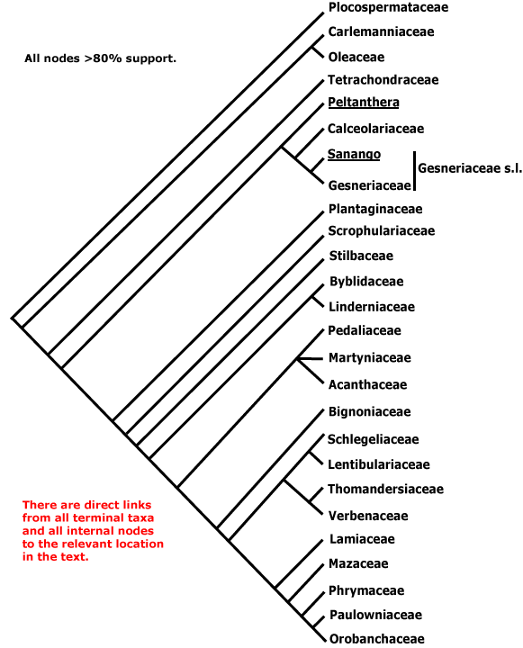
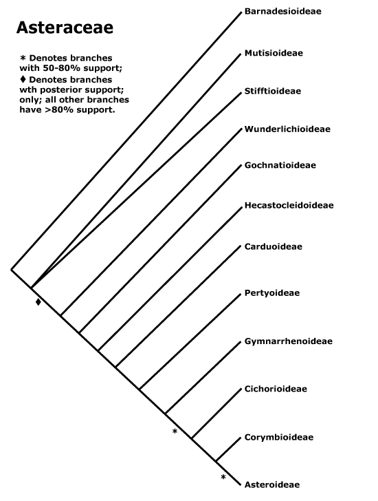

Asterids, commelinids, core eudicots, asterid 1, asterid 2, eudicots, gymnosperms, Magnoliophyta, monocots, N-fixing clade, rosids, seed plants.
ALPHABETICAL LISTING OF ALL ORDINAL NAMES OF SEED PLANTS, WITH LINKS
A | B | C | D | E | F | G | H | I | J | L | M | N | O | P | Q | R | S | T | U | V | W | X | ZAbietales, Acanthales, Acerales, Acorales, Actinidiales, Actinostrobales, Adoxales, Aesculales, Agavales, Aizoales, Akaniales, Alismatales, Alliales, Alseuosmiales, Alstroemeriales, Altingiales, Amaranthales, Amaryllidales, Amborellales, Ambrosiales, Ammiales, Amomales, Ancistrocladales, Anisophylleales, Annonales, Anthobolales, Apiales, Apocynales, Aponogetonales, Aquifoliales, Arales, Araliales, Aralidiales, Araucariales, Arecales, Aristolochiales, Athrotaxidales, Asarales, Asclepiadales, Asparagales, Asphodelales, Asparagales, Asteliales, Atriplicales, Aucubales, Austrobaileyales, Avenales.
Balanitales, Balanopales, Balanophorales, Balsaminales, Barbeyales, Barclayales, Batales, Begoniales, Berberidales, Berberidopsidales, Betulales, Biebersteiniales, Bignoniales, Bixales, Boraginales, Brassicales, Brexiales, Bromeliales, Bruniales, Brunoniales, Burmanniales, Burserales, Butomales, Buxales, Byblidales.
Cactales, Callitrichales, Calycanthales, Calycerales, Campanulales, Campynematales, Canellales, Cannales, Capparales, Caprifoliales, Cardiopteridales, Carduales, Caricales, Carlemanniales, Caryophyllales, Cassiales, Casuarinales, Celastrales, Centrolepidales, Cephalotales, Cephalotaxales, Ceratophyllales, Cercidiphyllales, Chenopodiales, Chironiales, Chloranthales, Chrysobalanales, Cinchonales, Circaeasterales, Cistales, Citrales, Cocosales, Colchicales, Columelliales, Combretales, Commelinales, Connarales, Convolvulales, Coriariales, Cornales, Corylales, Corynocarpales, Crassulales, Crossosomatales, Cucurbitales, Cunninghamiales, Cunoniales, Cupressales, Cycadales, Cyclanthales, Cymodoceales, Cynarales, Cynomoriales, Cyperales, Cyrillales, Cytinales.
Daphnales, Daphniphyllales, Dasypogonales, Datiscales, Degeneriales, Desfontainiales, Diapensiales, Didymelales, Dilleniales, Dioales, Dioncophyllales, Dioscoreales, Diospyrales, Dipentodontales, Dipsacales, Droserales.
Ebenales, Echiales, Elaeagnales, Elaeocarpales, Elatinales, Elodeales, Emmotales, Empetrales, Ephedrales, Ericales, Eriocaulales, Erythropalaless, Escalloniales, Eucommiales, Euphorbiales, Eupomatiales, Eupteleales, Euryalaless.
Fabales, Fagales, Falcatifoliales, Ficales, Flacourtiales, ciliariales, Fouquieriales, Francoales, Frangulales.
Galiales, Garryales, Geissolomatales, Gentianales, Geraniales, Gesneriales, Ginkgoales, Glaucidiales, Globulariales, Gnetales, Goodeniales, Greyiales, Griseliniales, Grossulariales, Grubbiales, Gunnerales, Gyrocarpales, Gyrostemonales.
Haemodorales, Haloragales, Hamamelidales, Hanguanales, Heisteriales, Helleborales, Helwingiales, Himantandrales, Hippuridales, Homaliales, Hortensiales, Huales, Huerteales, Hydatellales, Hydnorales, Hydrangeales, Hydrastidales, Hydrocharitales, Hydropeltidales, Hydrostachyales, Hypericales, Hypoxidales.
Icacinales, Illiciales, Iridales, Irvingales, Iteales, Ixiales.
Jasminales, Juglandales, Julianiales, Juncaginales, Juncales.
Lacistematales, Lactoridales, Lamiales, Lardizabalales, Laurales, Lecythidales, Ledocarpales, Leitneriales, Lentibulariales, Ligustrales, Liliales, Limnanthales, Linales, Liriales, Loasales, Lobeliales, Loganiales, Lonicerales, Loranthales, Lowiales, Lythrales.
Magnoliales, Malpighiales, Malvales, Marathrales, Marcgraviales, Mayacales, Medusagynales, Medusandrales, Melanthiales, Melastomatales, Meliales, Melianthales, Meliosmales, Menispermales, Menyanthales, Metteniusales, Mitrastemonales, Miyoshiales, Monimiales, Moringales, Musales, Myricales, Myristicales, Myrothamnales, Myrsinales, Myrtales.
Najadales, Nandinales, Narcissales, Nartheciales, Nelumbonales, Nepenthales, Neuradales, Nitrariales, Nolanales, Nothofagales, Nyctaginales, Nymphaeales.
Ochnales, Oenotherales, Olacales, Oleales, Onagrales, Oncothecales, Opuntiales, Orchidales, Oxalidales.
Saxifragales, Pandales, Pandanales, Papaverales, Paracryphiales, Parasitaxales, Paridales, Parnassiales, Passiflorales, Penaeales, Pennantiales, Pentaphragmatales, Peridiscales, Petiveriales, Petrosaviales, Phellinales, Philydrales, Phyllanthales, Physenales, Phytolaccales, Picramniales, Pinales, Pinguiculales, Piperales, Pittosporales, Plantaginales, Platanales, Plumbaginales, Poales, Podocarpales, Podophyllales, Podostemales, Polemoniales, Polygalales, Polygonales, Pontederiales, Portulacales, Posidoniales, Potamogetonales, Primulales, Proteales.
Quercales, Quillajales, Quintiniales.
Rafflesiales, Ranunculales, Rapateales, Resedales, Restionales, Rhabdodendrales, Rhamnales, Rhinanthales, Rhizophorales, Rhodorales, Rhoipteleales, Roridulales, Rosales, Rousseales, Rubiales, Ruppiales, Rutales.
Sabiales, Salicales, Salvadorales, Samolales, Samydales, Sanguisorbales, Santalales, Sapindales, Sapotales, Sarraceniales, Saxegotheales, Saxifragales, Scheuchzeriales, Sciadopityales, Scleranthales, Scrophulariales, Scyphostegiales, Sedales, Silenales, Simmondsiales, Smilacales, Solanales, Sphenocleales, Sphenostemonales, Stangeriales, Stellariales, Stemonales, Stilbales, Stylidiales, Styracales, Surianales.
Taccales, Tamales, Tamaricales, Taxales, Taxodiales, Tecophilaeales, Terebinthales, Ternstroemiales, Theales, Theligonales, Thymelaeales, Tiliales, Tofieldiales, Torricelliales, Tovariales, Tribelales, Trilliales, Trimeniales, Triuridales, Trochodendrales, Tropaeolales, Turnerales, Typhales.
Vacciniales, Vahliales, Vallisneriales, Velloziales, Veratrales, Verbenales, Viburnales, Vincales, Violales, Viscales, Vitales, Vochysiales.
Xanthorrhoeales, Ximeniales, Xyridales.
Zamiales, Zingiberales, Zosterales, Zygophyllales.
ALPHABETICAL LISTING OF ALL FAMILY NAMES OF SEED PLANTS, WITH LINKS
A | B | C | D | E | F | G | H | I | J | K | L | M | N | O | P | Q | R | S | T | U | V | W | X | Y |ZIn some cases clicking on a family synonym will send you directly to the subfamily in which the genus of the basionym is to be found.
Abietaceae, Abolbodaceae, Abrophyllaceae, Acalyphaceae, Acanthaceae, [Acanthochlamydaceae], Acarnaceaee, Aceraceae, Achariaceae, Achatocarpaceae, Achradaceae, Achyranthaceae, Acmopylaceae, Acoraceae, Acristaceae, Actaeaceae, Actinidiaceae, Actinotaceae, Amentotaxaceae, Adenogrammaceae, Adoxaceae, Aegialitidaceae, Aegicerataceae, Aegilopaceae, Aeginetiaceaee, Aegiphilaceae, Aesculaceae, Aextoxicaceae, Agapanthaceae, Agavaceae, Agdestidaceae, Agialidaceae, Agrimoniaceae, Agrostidaceae, Ailanthaceae, Aitoniaceae, Aizoaceae, Akaniaceae, Alangiaceae, Alchemillaceae, Aldrovandaceae, Alismataceae, Alliaceae, Allioniaceae, Allophylaceae, Aloaceae, Alopecuraceae, Alpiniaceae, Alseuosmiaceae, Alsinaceae, Alsodeiaceae, Alstroemeriaceae, Altingiaceae, Alzateaceae, Amaranthaceae, Amaryllidaceae, Amborellaceae , Ambrosiaceae, Amentotaxaceae, Ammanniaceae, Ammiaceae, Amomaceae, Ampelidopsaceae, Amygdalaceae, Amyridaceae, Anacardiaceae, Anagallidaceae, Anarthriaceae, Anchusaceae, Ancistrocladaceae, Andromedaceae, Andropogonaceae, Androstachyaceae, Androsynaceae, Anemarrhenaceae, Anemonaceae, Angelicaceae, Anisophylleaceae, Annonaceae, Anomochloaceae, Anopteraceae, Anrederaceae, Anthemidaceae, Anthericaceae, Anthobolaceae, Antidesmataceae, Antirrhinaceae, Antoniaceae, Aparinaceae, Aphanopetalaceae, Aphloiaceae, Aphyllanthaceae, Apiaceae, Apocynaceae, Apodanthaceae, Aponogetonaceae, Aporusaceae, Aposeridaceae, Apostasiaceae, "Aptandraceae", Aquifoliaceae, Aquilariaceae, Aquilegiaceae, Araceae, Aragoaceae, Araliaceae, Aralidiaceaee, Araucariaceae, Arbutaceae, Arceuthidaceae, Arceuthobiaceae, Arctostaphylaceae, Arctotidaceae, Ardisiaceae, Arecaceae, Argophyllaceae, Arisaraceae, Aristolochiaceae, Aristoteliaceae, Arjonaceae, Armeriaceae, Artemisiaceae, Arthrotaxidaceae, Artocarpaceae, Arundinaceae, Arundinellaceae, Asaraceae, Asclepiadaceae, Ascyraceaee, Asiraceae, Asparagaceae, Asperulaceae, Asphodelaceae, Aspidistraceaee, Asteliaceae, Asteraceae, Asteranthaceae, Asteropeiaceae, Astragalaceae, Astrocarpaceae, Athanasiaceae, Atherospermataceae, Atriplicaceae, Atropaceae, Aucubaceae, Aurantiaceae, Austrobaileyaceae, Austrotaxaceae, Avenaceae, Averrhoaceae, Avetraceae, Avicenniaceae, Azaleaceae, Azimaceae.
Balanitaceae, Balanopaceae, Balanophoraceae, Balsameaceae, Balsaminaceae, Bambusaceae, Barbaceniaceae, Barbeuiaceae, Barbeyaceae, Barclayaceae, Barringtoniaceae, Basellaceae, Bataceae, Baueraceae, Bauhiniaceae, Baxteriaceae, Begoniaceae, Behniaceae, Belangeraceae, Belloniaceae, Bembiciaceae, Berberidaceae, Berberidopsidaceae, Berryaceaee, Bersamaceae, Bertyaceae, Berzeliaceae, Besleriaceae, Betaceae, Betulaceae, Biebersteiniaceae, Bifariaceae, Bignoniaceae, Bischofiaceae, Bixaceae, Blakeaceae, Blandfordiaceae, Blattiaceae, Blepharocaryaceae, Blitaceae, Blyxaceae, Boerlagellaceae, Bolivaraceae, Bombacaceae, Bonnetiaceae, Bontiaceae, Boopidaceae, Boraginaceae, Borassaceae, Boroniaceae, Boryaceae, Botryodendraceae, Bougainvilleaceae, Boweniaceae, Brassicaceae, Brachycaulaceae, Bretschneideraceae, Brexiaceae, Bromeliaceae, Brownlowiaceae, Brunelliaceae, Bruniaceae, Brunoniaceae, Brunsvigiaceae, Bryoniaceae, Buchneraceae, Bucidaceae, Buddlejaceae, Buglossaceae, Bulbocodiaceae, Bumeliaceae, Bupleuraceae, Burchardiaceae, Burmanniaceae, Burseraceae, Butneriaceae, Butomaceae, Buxaceae, Byblidaceae, Byttneriaceae.
Cabombaceae, Cacaoaceae, Cactaceae, Caesalpiniaceae, Caladiaceae, Calamaceae, Calceolariaceae, Calectasiaceae, Calendulaceae, Callaceae, Callicomaceae, Calligonaceae, Callitraceae, Callitrichaceae, Calochortaceae, Calophyllaceae, Calthaceae, Calycanthaceae, Calyceraceae, Cambogiaceae, Camelliaceae, Campanulaceae, Campynemataceae, Canacomyricaceae, Canellaceae, Cannabaceae, Cannaceae, Canopodaceae, Canotiaceae, Cansjeraceae, Capparaceae, Caprariaceae, Caprifoliaceae, Cardiopteridaceae, Carduaceae, Caricaceae, Carissaceae, Carlemanniaceae, Carpinaceae, Carpodetaceae, Cartonemataceae, Caryocaraceae, Caryophyllaceae, Casearieaceae, Cassiaceae, Cassipoureaceae, Cassythaceae, Castaneaceae, Castelaceae, Casuarinaceae, Catesbaeaceae, Cathedraceae, Cecropiaceae, Cedraceae, Cedrelaceae, Celastraceae, Celosiaceae, Celtidaceae, Centaureaceae, Centrolepidaceae, Centroplacaceae, Cepaceae, Cephalanthaceae, Cephalotaceae, Cephalotaxaceae, Cerastiaceae, Ceratoniaceae, Ceratophyllaceae, Cerberaceae, Cercidiphyllaceae, Cercocarpaceae, Cercodiaceae, Cereaceae, Cerinthaceae, Ceroxylaceae, Cestraceae, Cevalliaceae, Chailletiaceae, Chamaedoraceae, Chamaemoraceae, Chamelauciaceae, Chaunochitonaceae, Chelidoniaceae, Chelonaceae, Chenopodiaceae, Chimonanthaceae, Chingithamnaceae, Chionographidaceae, Chiranthodendraceae, Chironiaceae, Chlaenaceae, Chloanthaceae, Chloranthaceae, Chloridaceae, Chlorogalaceae, Chrysobalanaceae, Ciceraceae, Cichoriaceae, Cimicifugaceae, Cinchoniaceae, Circaeaceae, Circaeasteraceae, Cissaceae, Cistaceae, Citraceae, Clematidaceae, Cleomaceae, Clethraceae, Clusiaceae, Cneoraceae, Cnestidaceae, Cnicaceae, Cobaeaceae, Cochlospermaceae, Cocosaceae, Coffeaceae, Colchicaceae, Coleogynaceae, Columelliaceae, Combretaceae, Commelinaceae, Comocladiaceae, Compositae, Compsoaceae, Conantheraceae, Connaraceae, Conostylidaceae, Convallariaceae, Convolvulaceae, Cordiaceae, Coreopsidaceae, Coriandraceae, Coriariaceae, Coridaceae, Corispermaceae, Cornaceae, Corokiaceae, Coronillaceae, Correaceae, Corrigiolaceae, Corsiaceae, Corydalaceae, Corylaceae, Corynocarpaceae, Coryphaceae, Costaceae, Cotyledonaceae, Coulaceae, Coutariaceae, Coutoubiaceae, Crassulaceae, Crescentiaceae, Cressaceae, Crinaceae, Crocaceae, Croomiaceae, Crossosomataceae, Crotonaceae, Cruciferae, Cryptaceae, Crypteroniaceae, Cryptocorynaceae, Cryptomeriaceae, Ctenolophonaceae, Cucurbitaceae, Cunninghamiaceae, Cunoniaceae, Cupressaceae, Curcumaceae, Curtisiaceae, Cuscutaceae, Cyananthaceae, Cyanastraceae, Cynanchaceae, Cyanellaceae, Cycadaceae, Cyclanthaceae, Cyclantheraceae, Cyclocheilaceae, Cydoniaceae, Cymodoceaceae, Cynaraceae, Cynocrambaceae, Cynomoriaceae, Cyperaceae, Cyphiaceae, Cyphocarpaceae, Cypripediaceae, Cyrillaceae, Cyrtandraceae, Cyrtanthaceae, Cytinaceae.
Dacrycarpaceae, Dactylanthaceae, Damasoniaceae, Daphnaceae, Daphniphyllaceae, Dasypogonaceae, Datiscaceae, Daturaceae, Daucaceae, Davidiaceae, Davidsoniaceae, Decaisneaceae, Deeringiaceae, Degeneriaceae, Delphiniaceae, Dendrophthoaceae, Desfontainiaceae, Detariaceae, Dialypetalanthaceae, Dianellaceae, Dianthaceae, Diapensiaceae, Dichapetalaceae, Dichondraceae, Diclidantheraceae, Dicrastylidiaceae, Dictamnaceae, Didiereaceae, Didymelaceae, Didymocarpaceae, Diegodendraceae, Diervillaceae, Digitalidaceaee, Dilatridaceae, Dilleniaceae, Dioaceae, Dionaeaceae, Dioncophyllaceae, Dioscoreaceae, Diosmaceae, Diospyraceae, Dipentodontaceae, Diphylleiaceae, Diplolaenaceae, Dipsacaceae, Dipterocarpaceae, Dirachmaceae, Disanthaceae, Diselmaceae, Dodonaeaceae, Dombeyaceae, Donatiaceae, Dorsteniaceae, Dortmannaceae, Doryanthaceae, Drabaceae, Dracaenaceae, Dracontiaceae, Drimyidaceae, Droseraceae, Drosophyllaceae, Dryadaceae, Duabangaceae, Duckeodendraceae, Dulongiaceae, Durantaceae, Durionaceae, Dysphaniaceae.
Ebenaceae, Eccremidaceae, Ecdeiocoleaceae, Echiaceae, Echinopaceae, Ehretiaceae, Elaeagnaceae, Elaeocarpaceae, Elegiaceae, Elatinaceae, Ellisiaceae, Ellisiophyllaceae, Elodeaceae, Elytranthaceae, Embeliaceae, Emblingiaceae, Emmotaceae, Empetraceae, Encephalartaceae, Engelhardtiaceae, Enhalaceae, Epacridaceae, Ephedraceae, Ephemeranthaceae, Epilobiaceae, Epimediaceae, Eragrostidaceae, Eremolepidaceae, Eremosynaceae, Ericaceae, Erinaceae, Eriocaulaceae, Eriogonaceae, Eriospermaceae, Erodiaceae, Erycibaceae, Eryngiaceae, Erysimaceae, Erythroniaceae, Erythropalaceae, Erythrospermaceae, Erythroxylaceae, Escalloniaceae, Eschscholziaceae, Eucomidaceae, Eucommiaceae, Eucryphiaceae, Euonymaceae, Eupatoriaceae, Euphorbiaceae, Euphrasiaceae, Euphroniaceae, Eupomatiaceae, Eupteleaceae, Euryalaceae, Eustrephaceae, Euthemidaceae, Eutocaceae, Exbucklandiaceae, Exocarpaceae.
Fabaceae, Fagaceae, Falcatifoliaceae, Ferulaceae, Festucaceae, Ficaceae, Ficoidaceae, Fitzroyaceae, Flacourtiaceae, ciliariaceae, Flindersiaceae, Foetidiaceae, Forestieraceae, Fothergillaceae, Fouquieriaceae, Fragariaceae, Francoaceae, Frangulaceae, Frankeniaceae, Fraxinaceae, Fraxinellaceae, Freycinetiaceae, Fritillariaceae, Fuchsiaceae, Fumariaceae, Funkiaceae.
Gaiadendraceae, Galacaceae, Galanthaceae, Galaxiaceae, Galedupaceae, Galeniaceae, Galiaceae, Garciniaceae, Gardeniaceae, Gardneriaceae, Garryaceae, Geissolomataceae, Geitonoplesiaceae, Gelsemiaceae, Geniostomaceae, Gentianaceae, Geonomataceae, Geosiridaceae, Geraniaceae, Gerrardinaceae, Gesneriaceae, Gethyllidaceae, Gilliesiaceae, Ginalloaceae, Ginkgoaceae, Gisekiaceae, Gladiolaceae, Glaucidiaceae, Glechomaceae, Glinaceae, Globulariaceae, Gnaphaliaceae, Gnetaceae, Goetzeaceae, Gomortegaceae, Gomphiaceae, Gomphrenaceae, Gonystylaceae, Goodeniaceae, Gordoniaceae, Gouaniaceae, Goupiaceae, Gramineae, Gratiolaceae, Grewiaceae, Greyiaceae, Grielaceae, Griseliniaceae, Gronoviaceae, Grossulariaceae, Grubbiaceae, Guaiacanaceae, Guamatelaceae, Guettardaceae, Gunneraceae, Gustaviaceae, Guttiferae, Gyrocarpaceae, Gyrostemonaceae.
Hachetteaceae, Haemanthaceae, Haemodoraceae, Halesiaceae, Hallieraceae, Halocarpaceae, Halophilaceae, Halophytaceae, Haloragaceae, Hamamelidaceae, Hanguanaceae, Haptanthaceae, Harmandiaceae, Hebenstretiaceae, Hectorellaceae, Hederaceae, Hedyosmaceae , Hedyotidaceae, Hedysaraceae, Heisteriaceae, Heleniaceae, Heliamphoraceae, Helianthaceae, Helianthemaceae, Helichrysaceae, Heliconiaceae, Helicteraceae, Heliotropiaceae, Helleboraceae, Heloniadaceae, Helosidaceae, Helwingiaceae, Hemerocallidaceae, Hemimeridaceae, Hemiphylacaceae, Henriqueziaceae, Henslowiaceae, Hermanniaceae, Hernandiaceae, Herniariaceae, Herreriaceae, Hesperocallidaceae, Heterantheraceae, Heteropyxidaceae, Heterostylaceae, Hibbertiaceae, Hibiscaceae, Hilleriaceae, Himantandraceae, Hippocastanaceae, Hippocrateaceae, Hippomanaceae, Hippophaeaceae, Hippuridaceae, Hirtellaceae, Holacanthaceae, Homaliaceae, Hopkinsiaceae, Hoplestigmataceae, Hordeaceae, Hornschuchiaceae, Hortensiaceae, Hortoniaceae, Hostaceae, Houstoniaceae, Huaceae, Huerteaceae, Hugoniaceae, Humbertiaceae, Humiriaceae, Hyacinthaceae, Hydatellaceae, Hydnoraceae, Hydrangeaceae, Hydrastidaceae, Hydrillaceae, Hydrocharitaceae, Hydrocotylaceae, Hydrogetonaceae, Hydroleaceae, Hydropeltidaceae, Hydrophylacaceae, Hydrophyllaceae, Hydrostachyaceae, Hymenocardiaceae, Hyoscyamaceae, Hypecoaceae, Hyperantheraceae, Hypericaceae, Hypopityaceae, Hypoxidaceae, Hypseocharitaceae.
Icacinaceae, Idiospermaceae, Illecebraceae, Ilicaceae, Illiciaceae, Illigeraceae, Impatientaceae, Imperatoriaceae, Inocarpaceae, Inulaceae, Ionidiaceae, Iriarteaceae, Iridaceae, Irvingiaceae, Isnardiaceae, Isophysidaceae, Iteaceae, Strasburgeriaceae , Ixiaceae, Ixioliriaceae, Ixonanthaceae.
Jalapaceae, Jamboliferaceae, Japonoliriaceae, Jasionaceae, Jasminiaceae, Johnsoniaceae, Joinvilleaceae, Juglandaceae, Julianiaceae, Juncaceae, Juncaginaceae, Juniperaceae, Jussiaeaceae, Justiciaceae.
Kadsuraceae, Kaliphoraceae, Kalmiaceae, Kaniaceae, Kiggelariaceae, Kingdoniaceae, Kingiaceae, Kirengeshomaceae, Kirkiaceae, Kobresiaceae, Koeberliniaceae, Koelreuteriaceae, Krameriaceae.
Labiatae, Lacandoniaceae, Lachenaliaceae, Lacistemataceae, Lactoridaceae, Lactucaceae, Lagerstroemiaceaee, Lamiaceae, Lampsanaceae, Lanariaceae, Langsdorffiaceae, Lantanaceae, Lapageriaceae, Lardizabalaceae, Lasiopetalaceae, Lauraceae, Lawsoniaceae, Laxmanniaceae, Lecythidaceae, Ledaceae, Ledocarpaceae, Leeaceae, Leguminosae, Leitneriaceae, Lemnaceae, Lennoaceae, Lentibulariaceae, Lentiscaceae, Leoniaceae, Leonticaceae, Lepidobotryaceae, Lepidocarpaceae, Lepidocaryaceae, Lepidocerataceae, Leptaulaceae, Leptospermaceae, Lepturaceae, Lepuropetalaceae, , Leuctenbergiaceae, Libocedraceae, Licaniaceae, Ligustraceae, Lilaeaceae, Liliaceae, Limeaceae, Limnanthaceae, Limnocharitaceae, Limodoraceae, Limoniaceae, Limosellaceae, Linaceae, Linariaceae, Lindenbergiaceae, Linderniaceae, Lindleyaceae, Linnaeaceae, Lippayaceae, Liriaceae, Liriodendraceae, Lissocarpaceae, Littorellaceae, Loasaceae, Lobeliaceaee, Loganiaceae, Lomandraceae, Loniceraceae, Lopeziaceae, Lophiocarpaceae, Lophiolaceae, Lophiraceae, Lophophytaceae, Lophopyxidaceae, Loranthaceae, Lotaceae, Lowiaceae, Lupulaceaee, Luxemburgiaceae, Luzuriagaceae, Lychnidaceae, Lyciaceae, Lyginiaceae, Lygodisodeaceae, Lysimachiaceae, Lythraceae.
Macarisiaceae, Mackinlayaceae, Madiaceae, Maesaceae, Magnoliaceae, Malaceae, Malesherbiaceae, Malortieaceae, Malpighiaceae, Malvaceae, Mangiaceae, Manicariaceae, Mapaniaceae, Marantaceae, Marathraceae, Marcgraviaceae, Martyniaceae, Mastixiaceae, Matricariaceae, Maundiaceae, Mayacaceae, Medeolaceae, Medusagynaceae, Peridiscaceae, Melaleucaceae, Melampyraceae, Melanophyllaceae, Melanthiaceae, Melastomataceae, Meliaceae, Melianthaceae, Melicaceae, Meliosmaceae, Melittidaceae, Melochiaceae, Memecylaceae, Mendonciaceae, Menispermaceae, Menthaceae, Menyanthaceae, Menzieziaceae, Mercurialaceae, Merenderaceae, Mesembryaceae, Mesembryanthemaceae, Mespilaceae, Metasequioaceae, Metteniusaceae, Meyeniaceae, Miconiaceae, Micrantheaceae, Microbiotaceae, Microcachrydaceae, Microcycadaceae, Miliaceae, Milulaceae, Mimosaceae, Mirabilidaceaee, Misodendraceae, Mitrastemonaceae, Miyoshiaceae, Modeccaceae, Molluginaceae, Monimiaceae, Monodoraceae, Monotaceae, Monotropaceae, Montiaceae, Montiniaceae, Moraceae, Morinaceae, Moringaceae, Mouririaceae, Moutabeaceae, Muntingiaceae, Musaceae, Mutisiaceae, Myodocarpaceae, Myoporaceae, Myricaceae, Myriophyllaceae, Myristicaceae, Myrobalanaceae, Myrothamnaceae, Myrrhiniaceae, Myrsinaceae, Myrtaceae, Mystropetalaceae.
Nageiaceae, Najadaceae, Nandinaceae, Napoleonaceae, Nartheciaceae, Narcissiaceaee, Nardaceae, Nassauviaceae, Naucleaceae, Nectaropetalaceae, Neilliaceae, Nelsoniaceae, Nelumbonaceae, Nemacladaceae, Neocallitropsidaceae, Neottiaceae, Nepenthaceae, Nepetaceae, Nesogenaceae, Neuradaceae, Neuwiediaceae, Nhandirobaceae, Nicotaniaceae, Nigellaceae, Nitrariaceae, Nolanaceae, Nolinaceae, Nonateliaceae, Nopaleaceae, Nothofagaceae, Nupharaceae, Nuytsiaceae, Nyctaginaceae, Nyctanthaceae, Nymphaeaceae, Nypaceae, Nyssaceae.
Obolariaceae, Ochnaceae, Ochranthaceae, Octoknemaceae, Oenotheraceae, Oftiaceae, "Olacaceae", Oleaceae, Oliniaceae, Onagraceae, Oncothecaceae, Onosmaceae, Operculariaceae, Ophiopogonaceae, Ophioxylaceae, Ophiraceae, Opiliaceae, Oporanthaceae, Opuntiaceae, Orchidaceae, Ornithogalaceae, Ornithrophaceae, Orobanchaceae, Orontiaceae, Ortegaceae, Oryzaceae, Osyridaceae, Oxalidaceae, Oxycladaceae, Oxycoccaceae, Oxystylidaceae.
Pachysandraceae, Pacouriaceae, Paeoniaceae, Pagamaeaceae, Paivaeusaceae, Palmae, Pancratiaceae, Pandaceae, Pandanaceae, Pangiaceae, Panicaceae, Papaveraceae, Papayaceae, Papilionaceae, Pappophoraceae, Papyraceae, Paracryphiaceae, Parasitaxaceae, Parianaceae, Paridaceae, Parnassiaceae, Paronychiaceae, Paropsiaceae, Parrotiaceae, Partheniaceae, Passifloraceae, Pastinacaceae, Paulliniaceae, Paulowniaceae, Paviaceae, Pectiantiaceae, Pedaliaceae, Pedicularidaceae, Peganaceae, Peliosanthaceae, Pellicieraceae, Penaeaceae, Pennantiaceae, Pentadiplandraceae, Pentapetaceae, Pentaphragmataceae, Pentaphylacaceae, Pentastemonaceae, Penthoraceae, Peperomiaceae, Peraceae, Perdiciaceae, Peridiscaceae, Periplocaceae, Peripterygiaceae, Perseaceae, Persicariaceae, Petermanniaceae, Petiveriaceae, Petreaceae, Petrosaviaceae, Phalaridaceae, Phaleriaceae, Pharaceae, Pharnaceaceae, Phaseolaceae, Phellinaceae, Phelypaeaceae, Pherosphaeraceae, Philadelphaceae, Philesiaceae, Philippodendraceae, Philocrenaceae, Philydraceae, Phoeniciaceae, Phoradendraceae, Phormiaceae, Phrymaceae, Phylicaceae, Phyllanthaceae, Phyllocladaceae, Phyllonomaceae, Physenaceae, Phytelephaceae, Phytocrenaceae, Phytolaccaceae, Piceaceae, Picramniaceae, Picridaceae, Picrodendraceae, Pilgerodendraceae, Pilocarpaceae, Pinaceae, Pinguiculaceae, Piperaceae, Piriquetaceae, Pisoniaceae, Pistaciaceae, Pistiaceae, Pittosporaceae, Plagianthaceae, Plagiopteraceae, Plantaginaceae, Platanaceae, Platycaryaceae, Platycladaceae, Platyspermataceae, Plectroniaceae, Pleurisanthaceae, Platystemonaceae, Plocospermataceae, Plumbaginaceae, Plumeriaceae, Poaceae, Podoaceae, Podocarpaceae, Podophyllaceae, Podostemaceae, Polemoniaceae, Poliothyrsidaceae, Polpodaceae, Polycarpaeaceae, Polycnemaceae, Polygalaceae, Polygonaceae, Polygonanthaceae, Polygonataceae, Polyosmaceae, Pontederiaceae, Poranaceae, Porantheraceae, Portulacaceae, Portulacariaceae, Posidoniaceae, Potaliaceae, Potamogetonaceae, Potentillaceae, Poteriaceae, Pothaceae, Pottingeriaceae, Primulaceae, Prioniaceae, Prionotaceae, Prockiaceae, Proteaceae, Prumnopityaceae, Prunaceae, Pseliaceae, Pseudanthaceae, Pseudophoeniciaceae, Psiloxylaceae, Psittacanthaceae, Psychotriaceae, Psylliaceaee, Ptaeroxylaceae, Pteleaceae, Pteleocarpaceae, Pteridophyllaceae, Pterisanthaceae, Pterostemonaceae, Punicaceae, Putranjivaceae, Pyraceae, Pyrolaceae.
Quassiaceae, Quercaceae, Quiinaceae, Quillajaceae, Paracryphiaceae.
Rafflesiaceae, Ramondaceae, Randiaceae, Ranunculaceae, Ranzaniaceae, Rapateaceae, Raphanaceae, Reaumuriaceae, Resedaceae, Restionaceae, Retziaceae, Rhabdodendraceae, Rhamnaceae, Rhaptopetalaceae, Rhexiaceae, Rhinanthaceae, Rhipogonaceae, Rhizophoraceae, Rhodiolaceae, Rhododendraceae, Rhodolaenaceae, Rhodoleiaceae, Rhodoraceae, Rhodotypaceae, Rhoipteleaceae, Rhopalocarpaceae, Rhynchocalycaceae, Rhynchothecaceae, Ribesiaceae, Ricinaceae, Ricinocarpaceae, Riviniaceae, Roridulaceae, Rosaceae, Rousseaceae, Roxburghiaceae, Rubiaceae, Rumicaceae, Ruppiaceae, Ruscaceae, Rutaceae.
Sabalaceae, Sabiaceae, Sabiceaceae, Saccharaceae, Saccifoliaceae, Sagoneaceae, Salaciaceae, Salaxidaceae, Salazariaceae, Salicaceae, Salicorniaceae, Salpiglosssidaceae, Salsolaceae, Salvadoraceae, Salviaceae, Sambucaceae, Samolaceae, Samydaceae, Sanguisorbaceae, Saniculaceae, Sanseveriaceae, Santalaceae, Santolinaceae, Sapindaceae, Sapotaceae, Sarcobataceae, Sarcocaceae, Sarcolaenaceae, Sarcophytaceae, Sarcospermataceae, Sarcostigmataceae, Sargentodoxaceae, Sarraceniaceae, Saurauiaceae, Saururaceae, Sauvagesiaceae, Saxegotheaceae, Saxifragaceae, Scabiosaceae, Scaevolaceae, Scepaceae, Scheuchzeriaceae, Schinaceae, Schisandraceae, Schizolaenaceae, Schlegeliaceae, Schoepfiaceae, Schreberaceae, Sciadopityaceae, Scillaceae, Scirpaceae, Scleranthaceae, Sclerophylacaceae, Scoliopaceae, Scopariaceae, Scorodocarpaceae, Scrophulariaceae, Scutellariaceae, Scybaliaceae, Scyphostegiaceae, Scytopetalaceae, Sebestenaceae, Sedaceae, Seguieriaceae, Selaginaceae, Sempervivaceae, Senecionaceae, Sequoiaceae, Serrulataceae, Sesamaceae, Sesuviaceae, Setchellanthaceae, Sheadendraceae, Sibthorpiaceae, Silenaceae, Simabaceae, Simaroubaceae, Simmondsiaceae, Sinofranchetiaceae, Siparunaceae, Siphonanthaceae, Siphonodontaceae, Sisymbriaceae, Sladeniaceae, Smeathmanniaceae, Smilacaceae, Smyrniaceae, Solanaceae, Sonneratiaceae, Soramiaceae, Sorbaceae, Soulameaceaee, Sparganiaceae, Sparmanniaceae, Spartinaceae, Spatheliaceae, Spergulaceae, Sphaerosepalaceae, Sphenocleaceae, Sphenostemonaceae, Spigeliaceae, Spiniciaceae, Spiraeaceae, Spiraeanthemaceae, Spondiadaceae, Sporobolaceae, Stachyuraceae, Stackhousiaceae, Stangeriaceae, Stanleyaceae, Stapeliaceae, Staphyleaceae, Staticaceae, Stegnospermataceae, Stellariaceae, Stemonaceae, Stemonuraceae, Stenomeridaceae, Sterculiaceae, Stilaginaceae, Stilbaceae, Stipaceae, Stixaceae, Strasburgeriaceae, Stratiotaceae, Strelitziaceae, Streptochaetaceae, Strombosiaceae, Strumariaceae, Strychnaceaee, Stylidiaceae, Stylobasiaceae, Stylocerataceae, Stypheliaceae, Styracaceae, Surianaceae, Swartziaceae, Swieteniaceae, Symphoremataceae, Symplocaceae, Synechanthaceae, Syringaceae.
Taccaceae, Taiwaniaceae, Taktajaniaceae, Talinaceae, Tamaceae, Tamaricaceae, Tamarindaceae, Tamnaceae, Tanacetaceae, Tapisciaceae, Taxaceae, Taxodiaceae, Tecophilaeaceae, Telephiaceae, Tepuianthaceae, Terminaliaceae, Ternstroemiaceae, Tetracarpaeaceae, Tetracentraceae, Tetrachondraceae, Tetraclinaceae, Tetradiclidaceae, Tetragoniaceae, Tetramelaceae, Tetrameristaceae, Tetrastylidiaceae, Tetrathecaceae, Thalassiaceae, Thalictraceae, Theaceae, Theligonaceae, Themidaceae, Theobromataceae, Theophrastaceae, Thesiaceae, Thismiaceae, Thlaspiaceae, Thoaceae, Thomandersiaceae, Thujaceae, Thujopsidaceae, Thunbergiaceae, Thurniaceae, Thymelaeaceae, Ticodendraceae, Tiliaceae, Tillaeaceae, Tillandsiaceae, Tinaceae, Tithymalaceae, Tofieldiaceae, Tormentillaceae, Torreyaceae, Torricelliaceae, Tovariaceae, Tradescantiaceae, Euphorbiaceae, Trapaceae, Trapellaceae, Tremandraceae, Trewiaceae, Tribelaceae, Tribulaceae, Trichopodaceae, Tricyrtidaceae, Triglochinaceaee, Trigoniaceae, Trilliaceae, Trimeniaceae, Triplobaceae, Triplochitonaceae, Triplostegiaceae, Tristichaceae, Triticaceae, Triuridaceae, Trochodendraceae, Tropaeolaceae, Tulbaghiaceae, Tulipaceae, Tumboaceae, Tupistraceae, Turneraceae, Typhaceae.
Uapacaceae, Ullucaceae, Ulmaceae, Ulmariaceae, Umbelliferae, Unisemataceae, Urticaceae, Utriculariaceae, Uvulariaceae.
Vacciniaceae, Vahliaceae, Valerianaceae, Vallisneraceae, Vanillaceae, Velloziaceae, Veratraceae, Verbascaceae, Verbenaceae, Vernicaceae, Vernoniaceae, Veronicaceae, Viburnaceae, Viciaceae, Vincaceae, Violaceae, Viscaceae, Vitaceae, Viticaceae, Vivianiaceae, Vochysiaceae.
Wachendorfiaceae, Walleriaceae, Wellingtoniaceae, Wellstediaceae, Welwitschiaceae, Widdringtoniaceae, Willughbieaceae, Winteraceae, Woffiaceae.
Xanthiaceae, Xanthophyllaceae, Xanthorrhoeaceae, Xeronemataceae, Xerophyllaceae, Ximeniaceae, Xiphidiaceae, Xyridaceae.
Zamiaceae, Zannichelliaceae, Zanoniaceae, Zanthoxylaceae, Zeaceae, Zephyranthaceae, Zingiberaceae, Ziziphaceae, Zosteraceae, Zygophyllaceae.
ASTERIDS - Sympetalae redux?: (iridoids +); C sympetalous, if only early in development, petals largely free, (nectary gynoecial), ovules unitegmic, integument thick, endothelium +, nucellar epidermis does not persist, style single, long; seed exotestal; endosperm cellular, embryo long. [Back to Index]
Estimates of the age of the stem group asterids range from ca 128 m.y. before present, mid Early Cretaceous, the Cornales and Ericales diverging soon afterwards, and the other asterid orders all diverging over 100 m.y. before present (K. Bremer et al. 2004) to ca 112 m.y. before present for the stem group, ca 109 m.y. before present for the crown group (Anderson et al. 2005: asterids other than Cornales and Ericales not sampled).
Iridoids, common in asterids, have been implicated in herbivore preferences, detering some and attracting others (e.g. see discussion under Plantaginaceae, Scrophulariaceae, etc.: Bowers 1980, 1988). Iridoids have a bitter taste and are emetics for vertebrates, at least, yet iridoids are sometimes sequestered by insects and used in their defences against predators (Nishida 2002 for a summary). Thus Uraniidae (moths) are found on Dipsacales, Lamiales, Gentianales - and also Daphniphyllaceae, one of the few iridoid-containing members of Saxifragales (see Lees & Smith 1991). Larvae of Nymphalidae-Melitaeini butterflies are also almost restricted to asterids. However, in this case they are also quite common on Asteraceae and Acanthaceae, which, although asterids, lack iridoids, furthermore, Melitaeini distinguish between plants with route I secoiridoids, which they commonly eat, and those with route II decarboxylated iridoids (iridoid glycosides), which they rarely eat (Wahlberg 2001). Iridoids may also be involved in plant-plant relationships, the iridoid aglucone, formed by removing the sugar moiety, being toxic and perhaps accentuating the effect of parasite Orobanchaceae on their hosts (Rank et al. 2004), while iridoids from roots of Verbascum (Scrophulariaceae) may depress germination of competitors (Pardo et al. 2004).
In the asterids, compound leaves are relatively uncommon, and if the leaves are compound, the leaflets are often not articulated and/or distinct (but c.f. Bignoniaceae, Oleaceae). Taxa with stipules are also fairly uncommon, as are those with apetalous flowers, complex seed coats, and arillate seeds. ympetalae of older studies were defined largely by their sympetalous corolla; monosymmetry may have arisen some fifteen times in the asterids, with reversal in Lamiales and Dipsacales (Jabbour et al. 2008: see also Donoghue et al. 1998; Ree & Donoghue 1999). Such flowers may have one, or rarely two, spurs (Jabbour et al. 2008). Within asterids, Ericales and Cornales in particular show much variation in the degree of sympetaly, stamen number, adnation of stamens to corolla, ovule morphology and anatomy, and seed coat anatomy, etc. Some of this variation is like that found in rosids, Dilleniales, etc., and unlike that in the ASTERID I + ASTERID II group, which see for more details. Ericales and Cornales may also have ellagic acid, which has a rather similar distribution in seed plants. Note that a tube-forming hypanthium is rare in asterids, although in the largely polypetalous rosids a hypanthium is quite common. The integument, when single, is often dermal in origin, as is the inner integument of other angiosperms, while the outer integument is largely subdermal (but c.f. monocots: see Bouman 1984; de Toni & Mariath 2009). Although this might suggest that the single integument of asterids corresponds to the inner integument of many bitegmic angiosperms, sampling need to be improved, and given that a number of Cornales and Ericales in particular have botegmic ovules, the evolutionary story is unlikely to be simple. In general, where many characters are to be placed on the tree depends on resolution of relationships within Ericales and Cornales, and the pattern of gain-loss of some of these features is liable to be rather complex (see monosymmetry above).
Some families included in the asterids seem to be polypetalous, but developmental studies like those of Erbar (1991) may show they have a ring primordium very early on (see also, for example, Reidt & Leins 1994). However, the position of "type" of corolla initiation on the tree is quite uncertain. Apiales + Asterales + Dipsacales of the asterid II group have many members with early tube initiation, as do both Oleaceae and Rubiaceae, "basal" or almost so in their orders in asterid I group, and so do some Cornales. Although sampling leaves a great deal to be desired, early initiation could conceivably be a synapomorphy for the asterids as a whole (see Leins & Erbar 2003b for details). Whatever the method of tube initiation, it is only in Ericales and other asterids that the mature flower may have an obvious corolla tube, hence the apomorphy of corolla tube uniting [Ericales + other asterids].
Some characters common in asterids may have functional and logical linkages that must be taken into account. Thus the presence of a tenuinucellate nucellus is linked with that of unitegmic ovules, the development of an endothelium (Kapil & Tiwari 1978), and a simple exotestal seed type (Netolitzky 1926); that of sympetalous monosymmetric flowers with epipetalous stamens, etc.
The monophyly of the asterids is well established (e.g. Olmstead et al. 1992, 2000; P. Soltis 1999); Albach et al. (1998) suggest the four main groupings recognised here; see also K. Bremer et al. (2001), Albach et al. (2001b), and the Bayesian analyses of Lundberg (2001b, d). B. Bremer et al. (2003) provide a recent comprehensive phylogeny of the clade, although with minimal sampling within families, using three coding and three non-coding chloroplast markers. Both B. Bremer et al. (2003) and Olmstead (2000) found strong support for Cornales being sister to all other asterids (see also Albach et al. 2001; Soltis et al. (2003). However, in Hilu et al. (2003: matK gene alone) the positions of Cornales and Ericales were reversed.
Sympetalae of older studies were defined largely by their sympetalous corolla, and so families like Pittosporaceae, Theaceae s.l., etc., were usually excluded. The distinction between the other angiosperms and the asterids partly corresponds to another long-recognized distinction, that between the crassinucellate and tenuinucellate groups of Young and Watson (1970, based on phenetic analyses). There are also substantial differences, for example, Young and Watson included Apiaceae-Araliaceae in their crassinucellate group. Philipson (1974) further emphasized the distinction between the crassinucellate and tenuinucellate groups of Young and Watson, linking the two via Celastraceae, Grossulariaceae and Brexiaceae (here Celastrales, Saxifragales, and Crossosomatales) - although none of these is a phylogenetic "intermediate". Philipson thought that Theales, Primulales and Ebenales (here part of Ericales) together made up a separate lineage. Later Philipson (1977) resurrected van Tieghem's (1901) names Unitegminae and Bitegminae for these two groups; integument number and nucellus condition are correlated.
Bernadello (2007) surveys nectary variation in asterids.
CORNALES Dumortier [Back to Index]
Iridoids diverse, ellagic acid +; nodes 3:3; inflorescence cymose; C valvate, apparently free, tube formation early; A basifixed, G inferior, crowned with disc-like nectary, 1-2 apical crassinucellate ovules/carpel, ventral carpellary bundles usu. in the carpel wall [transseptal bundles, i.e. vascular bundles to ovules go over the top of the septum and then down; there are no bundles running up the central axis of the gynoecium]; fruit drupaceous, with germination valve(s) in the stone. - 7 families, 51 genera, 590 species.
Molecular studies (e.g. Xiang et al. 1993) suggest a break-up of Cornaceae s.l. (see below); the core is here. Relationships within Cornales as a whole are unclear, and the inclusion of Hydrostachys in analyses considerably affects topologies and support values (but Hydrostachys may belong to Lamiales). For the relationships of Grubbiaceae and Hydrostachyaceae, see especially Fan and Xiang (2003) and Xiang et al. (2002). Basic information about embryology, chemistry, etc., needs to be gathered from many genera to allow broad comparisons across the order, but Manchester et al. (2007) suggest interesting groupings based on fruit anatomy; of the taxa whose fruits have massively thickened walls, only in Nyssaceae are the cells fibrous (?an apomorphy), while in the other genera they are more or less sclereidal. Burleigh et al. (2009) recently found that in a five gene analysis there was strong support for a position of Hydrostachys within Lamiales, largely because of the matK sequence added. However, where in the Lamiales it might be placed was unclear, although it would be in a clade that excluded Oleaceae, at least (Burleigh et al. 2009).
Takhtajan (1997) included Hydrangeales in Cornidae-Cornanae, but Loasales-Loasanae were part of his Lamiidae, while in earlier classifications Hydrangeaceae were often considered to be woody Saxifragaceae, sometimes being included in that family or placed in Rosales (e.g. Cronquist 1981). Eleven of the fifteen genera included in Cornaceae s.l. have been placed in monotypic families, or conversely, the family has been circumscribed very broadly, as by Mabberley (1997, but c.f. 2008); it has turned out to be polyphyletic. For other Cornaceae s.l., see e.g. Garryaceae (Garryales), Curtisiaceae (Solanales), Argophyllaceae (Asterales) and Griseliniaceae (Apiales).
For information mostly about Cornaceae s.l., see Faure (1924: anatomy), Ferguson (1977: pollen), Sato (1976: embryology) and Grayer et al. (1999: saponins).
This is the asterid IV group of some early phylogenetic studies.
Includes Cornaceae, Curtisiaceae, Grubbiaceae, Hydrangeaceae, Hydrostachyaceae, Loasaceae, Nyssaceae.
Cornaceae + Nyssaceae: route I secoiridoids; hairs T-shaped, unicellular; K small, pollen with complex endaperture [a pore joining two lateral thinnings parallel to the colpus], ventral carpellary bundles usu. in the carpel wall [transseptal bundles, i.e. vascular bundles to ovules go over the top of the septum and then down], style short.
CORNACEAE Dumortier - 2/85. Scattered, not S. South America.
Viburnum (Adoxaceae) is quite often confused with Cornus, but it has stellate hairs and the lateral veins are widely spreading.
Note that the floral organ diversity genes B and C are expressed in the large, white inflorescence bracts of Cornus (Maturen et al. 2005).
For relationships within Cornus, c.f. Murrell (1993) and Xiang et al. (2006); morphology seems to be somewhat misleading here. Blue-fruited dogwoods have lost iridoids (Xiang et al. 1997).
For information, see Adams (1949: anatomy) and Eyde (e.g. 1968, 1988: flower and fruit in particular), Neubauer (1978: petiolar anatomy), Jensen et al. (1975a: iridoids), Johri et al. (1992: embryo sac), and Kubitzki (2004b: general).
NYSSACEAE Dumortier - 5/22. Mainly East Asia, also Indo-Malesia and E. North America.
Fossils of Nyssaceae fruits are widespread in the northern hemisphere in the early Caenozoic, some being 3- or 4-carpellate (Eyde 1997, for details); Mastixia was especially abundant in Europe 65-70 m.y. before present.
A small but still heterogeneous family. Davidia has flowers in heads subtended by two large white bracts (hence its common names, the dove tree or the handkerchief tree); the individual flowers lack a perianth and may have bitegmic ovules. Diplopanax has recently been placed in Mastixiaceae s. str. (Eyde & Quiyun 1990; c.f. Xiang et al. 1997). It seeds contain petroselenic acid (Zhu et al. 1998), common in Apiales, and relationships between Cornaceae and some Apiales have been suggested in the past...
For the alkaloid camptothecin, see Lorence and Nessler (2004), for cytology, see He et al. (2004), for general information, see Kubitzki (2004b: as Cornaceae), for Mastixia, see Matthew (1976).
Hydrangeaceae + Loasaceae: similar route I secoiridoids and route II decarboxylated iridoids, ellagic acid 0; cork cambium deep-seated; hairs tuberculate, walls calcified, with basal cell pedestals; leaves opposite, with glandular teeth; placentation parietal, gynoecium with axial/central vascular bundles; fruit septicidal; exotestal cells variously elongated, inner walls thickened.
A perhaps surprising family pair, although the two have many characters in common. The androecium of both families is very variable in development (Hufford 1990, 1998). Flowers with ten stamens may well be plesiomorphic, with polystemony derived.
HYDRANGEACEAE Dumortier - 17/190. Warm temperate, a few tropical.
1. Jamesioideae Hufford - Leaf buttresses conspicuous after leaf fall; K valvate, C free, style branched. - 2/ca 5. W. North America.
2. Hydrangeoideae Burnett - Raphide sacs +. - 15/185. Warm temperate, esp. South East Asia and North America, S. to Chile and Malesia.
2a. Philadelpheae - C imbricate; A initiation as five common primordia, embryo sac ± protruding from the nucellus. - 6/130: Philadelphus (65), Deutzia (60). Warm temperate, esp. South East Asia to the Philippines, S.W. North America, also Central America, one sp. in Europe.
2b. Hydrangeeae - Inflorescences with conspicuous marginal flowers; C valvate; fruits loculicidal. - 9/65. Warm N. temperate, S. to Chile and Malesia.
Inflorescences of Hydrangeae may have conspicuous marginal flowers, the sepal-like whorl being much enlarged. Hydrangeae include taxa with both centripetal and centrifugal androecial initiation, and initiation as antesepalous triplets or irregularly (Ge et al. 2007); Philadelphus has centrifugal androecial development. In a number of Philadelpheae the embryo sac more or less protrudes into the micropyle or beyond; how widely this character occurs is unclear (Maheshwari 1950; Hufford 2004). Fendlera has nuclear endosperm (Johri et al. 1992).
For relationships within the family, see Hufford (1997b) and Hufford et al. (2001); in the latter study, support for its monophyly is not overwhelming. For a classification of the family, see Hufford et al. (2001).
For vegetative anatomy, see Styer and Stern (1979 and references) and Gornall et al. (1998), for floral anatomy, see Bensel and Palser (1975c), for seeds, Hufford (1995, 1997) and Nemirovich-Danchenko and Lobova (1998), for iridoids, Frederiksen et al.(1999), for androecial development, Gelius (1967) and Hufford (1998, 2001a), and for general information, see Hufford (2004).
LOASACEAE Jussieu - Trichomes glochidiate, often silicified; integument very thick, style hollow. - 14/265. Mostly American, also Africa and the Marquesas Islands.
1. Eucnide - A connate basally. - 1/15. S.W. North America.
2. Schismocarpus - Filaments shorter than the anthers. - 1/1: Schismocarpus pachypus. Mexico.
Loasoideae [Mentzelioideae + Gronovioideae]: ?
3. Loasoideae - Petals clawed, stamens in groups opposite petals, staminodes antesepalous. - Nasa (105). America, but also Africa (Kissenia) and Marquesas Islands (Plakothira).
Mentzelioideae + Gronovioideae: loss of C-A synorganisation.
4. Mentzelioideae - A centripetal, connate basally. - 1/60. America.
5. Gronovoioideae - C valvate, petals with a single vascular trace; A 5, opposite sepals, anthers bifacial; G with 1 apical crassinucellate ovule; fruit a cypsela; testa none. - America.
Weigend and Gottschling (2006) discuss pollination, revolver flowers, etc., in the large genus Nasa.
In some species of Petalonyx (Gronovioideae) there is postgenital fusion of the corolla, this forces the stamens outside the corolla. For the complexities of androecial initiation, see Hufford (1990 and references); antepetalous stamens may arise from the flanks of antisepalous stamen primordia, and androecial development may be centripetal or centrifugal. Hufford (2003) described staminode evolution in detail. Thus in Loasoideae the outer whorl of antesepalous staminodes may be connate and form scales, the inner whorl of staminodes remain separate and are more elaborated.
Strongly supported relationships suggested by Moody and Hufford (2000), Moody et al. (2001), Hufford et al. (2003) and Hufford (2003) are Eucnide [Schismocarpus [Loasoideae [Mentzelioideae + Gronovioideae]]]. The clade [Plakothira + Klaprothia + Kissenia] may be sister to all other Loasoideae, but with little support (Hufford et al. 2005), or they may be part of a major polytomy (see also Weigend et al. 2004). The distribution of this little clade is remarkable - the Marquesas Islands, where it was only fairly recently discovered, South America, and Africa.
For information, see Thompson and Ernst (1967: Eucnide), Brown and Kaul (1981: floral morphology), Weigend (1996: Loasaceae of Ecuador), and Weigend (2004: general).
HYDROSTACHYACEAE Engler - Submerged herbs; primary root 0; stomata 0; leaves in a rosette, deeply and complexly divided, surface with small enations, stipule +; inflorescence spicate, plants di(mon)oecious; P 0, nectary 0; staminate flowers: A 2, two-sporangiate, extrose, pollen in tetrads, inaperturate; carpellate flowers: G [2], placentation parietal, many unitegmic tenuinucellate ovules/carpel, styles separate, filiform; fruit a septicidal capsule; seeds minute, outer cell walls much thickened, mucilaginous; endosperm scanty or 0. - 1/20. C. and S. Africa, Madagascar.
Another interpretation of the androecium is that is consists of a single ordinary (i.e., four locular/sporangiate) stamen.
Hydrostachyaceae have variously been suggested as being sister to Decumaria (Hydrangeaceae: molecular data suggest that it is perhaps most likely somewhere around here), or close to Crassulaceae (Saxifragales), or - perhaps - close to Podostemaceae (near Clusiaceae, Malpighiales). Takhtajan (1997), on the other hand, included Hydrostachyales in his Lamiidae. As Albach et al. (2001) note, few morphological characters support a position here, but this is perhaps to be expected of a highly-derived aquatic. However, members of sympetalous groups, especially Lamiales, show several similarities to Hydrostachyaceae in ovary structure (apical septae) and ovule and endosperm development (Jäger-Zürn 1965; Rauh & Jäger-Zürn 1966, 1967; see also Leins & Erbar 1990).
For general information, see Erbar and Leins (2004a).
Grubbiaceae + Curtisiaceae: leaves opposite, bases connected by a ridge; flowers small, one ovule/carpel, style short; endosperm copious.
GRUBBIACEAE Endlicher - Ericoid shrublet; anthers with two sporangia; fruit a syncarp. - 1/3. Cape Province, South Africa.
There is support for a sister group relationship to Curtisiaceae (e.g. Fan & Xiang 2001); Xiang et al. (2002) suggested that the two might be combined, but they are kept separate here because they are rather different in appearance. The inversion of the anther is very comprehensive in Grubbiaceae, and for some (e.g. Fagerlind 1947b) this suggested relationships with Ericaceae. Carlquist (1978a) found Grubbiaceae to be anatomically identical to Bruniaceae (near Asterales here), c.f. also Geissolomataceae (Crossosomatales).
For information, see Fagerlind (1948b: embryology), Dahlgren and van Wyk (1988: general) and Kubitzki (2004b: general).
CURTISIACEAE Takhtajan - Gynoecium with axial/central vascular bundles. - 1/2. Southern Africa.
Manchester et al. (2007) recognised fruits of Curtisia from the Eocene of southern England; the fossils were originally described under Epacridaceae (= Ericaceae - Styphelioideae)!
For general information, see Kubitzki (2004b).
ERICALES [ASTERID I + ASTERID II]: ovules lacking parietal tissue [tenuinucellate].
ERICALES Dumortier [Back to Index]
Nodes 1:1. - 25 families, 346 genera, 11,515 species.
The age of the stem group asterids may be ca 128 m.y. before present, mid Early Cretaceous, the Ericales diverging soon afterwards (K. Bremer et al. 2004). Interestingly, a fossil named Archaeamphora and assigned to Sarraceniaceae has been described from rocks about the same age as those in which Archaefructus was found, i.e. ca 124 m.y. before present (Li 2005), although this attribution needs to be confirmed. Anderson et al. (2005: asterids other then Cornales and Ericales not sampled) suggest figures of ca 109 m.y. before present for stem group Ericales, 103-99 m.y. before present for the crown group. Indeed, in the late Cretaceous of E. North America there is a great diversity of fossil flowers that may belong to Ericales, the oldest being some 90 m.y. old (Crepet et al. 2001, 2004; see also Herendeen et al. 1999), and some of these have a morphology quite unlike that of extant members of the clade, e.g. some have sepals with numerous huge abaxial and/or marginal glands (Crepet 2008). Schönenberger and Friis (2001) described Paradinandra from the Late Cretaceous of Sweden, and this has a number of Ericalean features, some suggesting relationships with Pentaphylacaceae in particular (perhaps the relationships could more accurately be described as being with Ericales minus the Balsaminaceae and Polemoniaceae clades). Its placentation was intrusive parietal, the pollen was tricolpate, and there was a nectary disc around the base of the ovary; there were paired stamens opposite the petals and single stamens opposite the petals, as in some Sapotaceae, Ebenaceae, Styracaceae, Pentaphylacaceae and perhaps even Actinidiaceae (see also Friis 1985: a Diapensiaceae relative?; Keller et al. 1996: an Actinidiaceae relative?). Note that tricolpate pollen is uncommon in extant Ericales, being known only from Balsaminaceae and Lecythidiaceae.
Today Ericales are an important component of the diversity of the understory in tropical rainforests, including ca 10% of the species and some 22% of the total stems (Davis et al. 2005a); families like Sapotaceae, Lecythidaceae and Ebenaceae are involved. However, this forest may have developed only early in the Caenozoic (Burnham & Johnson 2004) whenever the clades now making it up initially diverged; members of Malpighiales are the other main component of this vegetation. Ericales contain ca 5.9% of eudicot diversity (Magallón et al. 1999), of which one third is made up of Ericaceae alone, not a noteworthy component of lowland tropical rainforests. Lens et al. (2007b), however, suggest that the ancestors of Ericales-Cornales grew under more temperate and boreal-arctic conditions and moved into tropical lowland rainforest. Insectivorous members of Ericales are nonmycorrhizal (Brundrett 2004 and references).
Theoid leaf teeth, or modifications thereof, are common in Ericales, but I do not know details of their distribution. Theoid teeth are vascularized by a single vein that proceeds into an opaque, deciduous apical structure that ranges from a cap to a gland-headed hair.
Relationships within the order were for some time poorly understood (e.g. Bayer et al. 1996: Morton et al. 1997a - both largely molecular data). However, Polemoniaceae + Fouquieraceae, Myrsinaceae and relatives, Ericaceae and relatives, and Balsaminaceae and relatives formed distinct clades, and the clade [Styracaceae + Diapensiaceae] was moderately (D. Soltis et al. 2000, 2007) or poorly (Albach et al. 2001b) supported. A study by Anderberg et al. (2002: five genes, both plastid and mitochondrial) suggested a beginning of resolution of "basal" relationships within the order (see also Geuten et al. 2004, a Bayesian analysis of some 13 kb of nucleotide sequences). In a study employing some 59 terminals, nearly 20 kb of sequences, and a variety of analyses, Schönenberger et al. (2005) suggest the family associations in the tree here (see also Duangjai et al. 2006b, rather weak [73% bootstrap] support for Lecythidaceae sister to most other Ericales; Sytsma et al. 2006), however, caution is still in order when interpreting this phylogeny. Schönenberger et al. (2005) also looked at character evolution, which now perhaps makes a little more sense, although it still shows extensive homoplasy. Independently of such studies, Barkman et al. (2004) had suggested that Mitrastemonaceae belong to Ericales, a suggestion that is followed here. Placing them next to Ericaceae and their immediate relatives in the tree is largely for convenience, although there are some similarities with that group such as extrorse anthers.
The order is made up largely of Sarracenianae, Ericanae, Primulanae, and some families in Theanae, all adjacent groups in the Dilleniidae of Takhtajan (1997). It is the asterid III group of some early phylogenetic studies.
For other information, see Grayer et al. (1999: chemistry), Jansen et al. (2004: aluminium accumulation), Ng (1991: placentation) and Lens et al. (2007b: wood anatomy, optimisation of characters on to a tree with rather different topology than that below).
Includes Actinidiaceae, Balsaminaceae, Cyrillaceae, Clethraceae, Diapensiaceae, Ebenaceae, Ericaceae, Fouquieriaceae, Lecythidaceae, Maesaceae, Marcgraviaceae, Mitrastemonaceae, Myrsinaceae, Pentaphylacaceae, Polemoniaceae, Primulaceae, Roridulaceae, Sapotaceae, Sarraceniaceae, Sladeniaceae, Styracaceae, Symplocaceae, Tetrameristaceae, Theaceae, Theophrastaceae.
Balsaminaceae [Marcgraviaceae + Tetrameristaceae]: myricetin +, ellagic acid 0; raphide sacs +, druses 0; lamina toothed; inflorescence racemose; stamens = and opposite sepals, anthers (near) basifixed, gynoecial nectary 0, ovules bitegmic, style short; endosperm with micropylar haustorium.
When dry the raphide sacs are visible under the dissecting microscope as white pockets in the stem.
Monophyly of these three families is well supported, and the clade is probably sister to rest of Ericales (e.g. Källersjo et al. 1998; Soltis et al. 2000; Geuten et al. 2004). If Balsaminaceae and Marcgraviaceae are sister taxa, there are no obvious synapomorphies for the family pair (Geuten et al. 2004). Pellicieraceae and Tetrameristaceae formed a well-supported clade in the morphological analysis of Luna and Ochoterena (2004), but Macgraviaceae did not join them, nor were other Ericales part of the clade; too much importance should not be given to these results.
For wood anatomy, see Lens et al. (2005b), for palynology, see Lens et al. (2005: Marcgraviaceae) and Janssens et al. (2005: the rest).
BALSAMINACEAE Berchtold & J. Presl - Herbaceous; flowers vertically monosymmetric, inverting during growth; functionally abaxial sepal with prominent spur, nectary inside, adaxial C with a sepaloid keel, lateral petals connate in pairs, filaments stout, partly connate apically, anthers connate and forming cap over stigma, pollen with cellulose threads holding it to anther, grains colpate, integuments intermediate unitegmic-bitegmic [with a degree of congenital fusion]; fruit an explosive septifragal capsule, walls inrolling from base. - 2/1000. Mostly Old World, Africa (esp. Madagascar) to mountains of SE Asia.
The combination of non-hydrolysable tannins and raphides, both of which are found in Balsaminaceae, is rarely found in herbs (Fischer 2004). Indeed, it has been suggested that the wood is paedomorphic (Lens et al. 2005b). Balsaminaceae are vegetatively rather uniform, if florally very diverse. The flowers are protandrous. The abaxial-lateral sepal pair (non-inverted orientation) is often reduced, perhaps becoming fused with the abaxial petal (Caris et al. 2006; see also Grey-Wilson 1980b). Taxa of Impatiens with five sepals are scattered through the genus, so that condition is apparently at least sometimes derived. The cellulose threads that are produced as the anther walls break down and then retract hold the exposed pollen in a basketwork of these threads over the anther (Vogel & Cocucci 1988). A recent study by McAbee et al. (2007) shows considerable plasticisty in integument development in the family, although many species show more or less well developed congenital fusion of the integuments (and bitegmy may be derived). The micropylar endosperm haustorium is massive and may invade the funicle and even the placenta.
Hydrocera and Impatiens are clearly sister taxa (Janssens et al. 2006a); Hydrocera has just a single species, Impatiens conatins the rest of the family. Taxa of Impatiens with five sepals are scattered through the genus, so that condition is apparently at least sometimes derived. The current infrageneric classification of Impatiens needs complete overhaul (Janssens et al. 2006a).
For information on floral anatomy, etc., see Grey-Wilson (1980b), cellulose threads in the anthers, see Vogel and Cocucci (1988), ovule and seed development, Boesewinkel and Bouman (1991), seed morphology, Utami and Shmizu (2005: considerable variation), floral development, Caris et al. (2006a), and for general information, see Fischer (2004a).
Marcgraviaceae + Tetrameristaceae: ± branched sclereids +; lamina elongating while still in bud, with obscure abaxial lines when mature.
MARCGRAVIACEAE Candolle - Stomata with four subsidiary cells each oblique to the long axis of the guard cells [staurocytic]; lamina entire, surface with with marginal to abaxial cavities; inflorescence a raceme, bracts abaxially saccate, nectariferous; C ± connate; fruit with fleshy placentae; seeds many, small. - 7/130. New World tropics.
The prominent inflorescences with nectar secreted in the cup-shaped (ascidiate) bracts attract a variety of large pollinators including humming birds and bats (e.g. Dressler 1999; Tschapka et al. 2006).
The black dots on the margin of the leaf blade make the leaf appear "serrate", but that character is not so much about serrations per se as about the marginal glands, etc., that terminate any serrations that are present.
Ward and Price (2002) suggest phylogenetic relationships within the family; Marcgravia is distinct and has several synapomorphies, e.g. environmentally-reversible heterophylly, two-ranked leaves, four-merous flowers, and nectaries adnate to abortive flowers, is distinct; furthermore, its corolla is connate and thrown off like a cap when the flowers opens. In the rest of the family both synapomorphies and generic limits are unclear.
For information, see Dressler (2004: general).
TETRAMERISTACEAE Hutchinson - Petioles short; bracteoles rather large, ± caducous; K with adaxial glands, 1 ovule/carpel. - 3/5. W. Malesia, Central and N. South America.
Pelliciera rhizophorae is a tree in New World mangrove vegetation that used to be much more widespread there (A. Graham 1977), even being known from the Old World. For the evolution of the mangrove habitat, to which Pelliciera is restricted (it prefers less saline conditions, being found along rivers up to the limit of tidal influences), see Rhizophoraceae).
In Tetramerista there are glistening dots on the adaxial surface of both calyx and corolla.
Tetrameristaceae s. str. were placed in Theales by Takhtajan (1997).
The embryology, morphology and anatomy of Tetrameristaceae s.l. are poorly known. For general information, see Kobuski (1951), Tomlinson (1986), Maas and Westra (1993: all Pelliciera) and Kubitzki (2004b: the rest).
Other Ericales: corolla tube well developed, style long.
Polemoniaceae + Fouquieriaceae: C connate, nectary +; G [3], style strongly lobed.
Schönenberger (2006a) lists many other features occurring in this family pair, including free sepals, stomata on the calyx (also e.g. Ericaceae - what is the general distribution of this feature?), stamens adnate to the corolla, and details of gynoecial development.
POLEMONIACEAE Jussieu - K connate, with a midrib with veins and paler margin, stamens = and opposite sepals, adnate to C. - 18/385: N. temperate, W. North America, South America.
1. Polemonioideae Arnott - 13-22/350: Phlox (70), Linanthus (35), Navarretia (30), Polemonium (27), Gilia (25). W. North America, N. temperate region, southern South America.
2. Cobaeoideae Arnott - K not differentiated. - 4/34. Baja California, tropical America.
3. Acanthogilioideae J. M. Porter & L. A. Johnson - Shrubby; leaves very dimorphic, persistent branched spines on long shoots, deciduous and unlobed on short shoots; seeds winged. - 1/1: Acanthogilia gloriosa. Baja California.
Many Polemonioideae are more or less desert-dwelling herbs or subshrubs, and there are several cases where predominantly western North American genera have a few species in the southern part of South America. In Cobaea the leaves are tendrillar and the basal pair of leaflets is foliaceous-stipuliform.
Acanthogilia has been placed in its own subfamily (Porter et al. 2000). However, its position relative to the other two subfamilies is still unclear (Johnson et al. 2008 and references). For further details of phylogenetic relationships in the family, see Johnson et al. (1999) and Porter and Johnson (1998); some generic limits need re-evaluating. Johnson et al. (2008) suggest the following relationships within Polemonioideae - [[Polemonieae (one genus) + Phlocidae] [Gilieae + Loselieae]].
Polemoniaceae were included as Polemoniales in Solananae by Takhtajan (1997).
For information, see Grant and Grant (1965: floral variation), Weberling (1989: inflorescence morphology), Day and Moran (1986: description of Acanthogilia), Grant (1998: evolutionary classification), and Wilken (2004: general).
FOUQUIERACEAE Candolle - Xeromorphic, with long and short shoots; leaves heteromorphic, spines developed from petioles. - 1/11. S.W. North America.
Layers of fibrous cells alternate with layers of cork cells in the stem cork, while the cork cambium in the root is described as being superficial (Henrickson 1969), an unusual position for angiosperms although perhaps commoner in desert plants and epiphytes than elsewhere. The perianth parts are borne in a distinct spiral, and the antepetalous stamens may be doubled (Schönenberger & Grenhagen 2005).
Fouquieriaceae were placed in Violales by Cronquist (1981).
For relationships within the family, see Schultheis and Baldwin (1999).
See Kubitzki (2004b) for general information.
LECYTHIDACEAE A. Richard - Ellagic acid +; cortical bundles +; A many, ovary inferior, ovules bitegmic, style short/0; testa multiplicative, ± lignified; endosperm nuclear, 0. - Ca 25/310. Tropical, especially America and W. Africa.
1. Napoleonaeoideae Bentham - Stigma broad, pentagonal, flat. - 2/11. W. tropical Africa.
Scytopetal-likeeae [Lecythidoideae [Planchonioideae + Foetidioideae]]: ?
2. Scytopetal-likeeae O. Appel - Pollen tricolpate or tricolporoidate, ovary superior (half superior), endothelium +, slender style +; endosperm +, ruminate. - 6/21. Africa, South America.
Lecythidoideae [Planchonioideae + Foetidioideae]: ?
3. Lecythidoideae Beilschmied - Staminal ring +. - 10/200: Eschweilera (ca 100), Gustavia (40). Neotropical.
Planchonioideae + Foetidioideae: cortical bundles inverted; fruit indehiscent.
4. Planchonioideae Engler - A with a basal ring, pollen syncolpate, strong ridge at colpus margin. - 6/58: Barringtonia (40). Paleotropical.
5. Foetidioideae Engler - SiO2 bodies +; C 0, placentae peltate. - 1/17. E. Africa to Mauritius.
Monosymmetric Lecythidoideae are pollinated largely by euglossine bees and several taxa have fodder pollen usually produced by the anthers in the hood, but sometimes by some of those in the ring; nectar is also found in some of these taxa (Prance & Mori 1979; Mori & Prance 1990); details of floral development, incuding the origin of monosymmetry, are to be found placed in a phylogenetic context in Tsou and Mori (2007). Monosymmetric flowers of Lecythidoideae are unlike those of any other angiosperm, with the monosymmetry primarily being evident in the massive development of the abaxial part of the staminal ring that leads to the production of the sometimes complexly coiled hood into which bees force their way. A rather close evolutionary association between euglossine bees and these monosymmetric Lecthyidoideae has been suggested (e.g. Mori & Boeke 1987: Note that monosymmetrtric flowers are not an apomorphy for Lecythidoideae.) Polysymmetric Lecythidoideae are pollinated by a variety of bees, other than euglossines. Napoleonaea vogelii pollination and floral morphology has been described in detail (Frame & Durou 2001). Despite the size of the flower, pollination by thrips is suggested; there are also nectaries inside the flowers at the bases of some of the staminodes and also on the outside of the calyx. Seeds of Lecythidoideae are probably mostly dispersed by mammals, especially primates.
There is banded apotracheal parenchyma (c.f. Sapotaceae!). There are also crystals in the axial parenchyma, as is common in several other Ericales, but wood anatomy suggests little about groupings within Lecythidaceae and relationships of the family (c.f. Lens et al. 2007b). Ditsch and Barthlott (1994) suggested that the rather dimorphic wax platelets of Asteranthos differ from those of Scytopetalaceae, but such platelets also occur in some species of Barringtonia (c.f. their figs 26, 27, 29), so are not out of place in Lecythidaceae. The exact nature of the petal-like structures in the flower is still a matter of discussion. There is both centripetal and centrifugal androecial development in the family.
Relationships: [Napoleonaeoideae [Scytopetal-likeeae [Lecythidoideae [Planchonoideae + Foetidioideae]]]] - see Morton et al. (1998) and Mori et al. (2007). Crateranthus is placed in Napoleonaeoideae, and although in morphology, including androecium, Asteranthos is similar, yet its sequence data align it with Scytopetal-likeeae... Although an extended Lecythidaceae can more or less be characterised, Lecythidaceae in the strict sense, that is, Lecythidoideae plus Planchonioideae plus Foetidioideae, cannot. There is currently no evidence for particular sister group relationships between Lecythidaceae and any Ericalean clades, although they are definitely not sister to the Balsaminaceae clade (Schönenberger et al. 2005).
Scytopetalaceae were considered quite distinct until recently (e.g. Cronquist 1981, in Theales; Takhtajan 1997, in Ochnales [both Dilleniidae]).
For more information, see Appel (1996: Scytopetal-likeeae), Tsou (1994: embryology) and Tsou and Mori (2002: seed coat in Lecythidoideae), Takhtajan (1992: endothelium and testa vasculature); for recent general summaries, see Appel (2004: Scytopetalaceae), Prance (2004: Napoleonaeceae), Prance and Mori (2004: Lecythidaceae s. str.), and Scott Mori's The Lecythidaceae Pages (Lecythidoideae only).
Sladeniaceae + Pentaphylacaceae: hairs unicellular; C ± campanulate, only basally connate, fairly small [petals 1³ cm long]; A basifixed, not articulated, nectary 0, placentae becoming ± swollen; fruit a capsule, columella persistent; endosperm +.
Some recent work (Geuten et al. 2004) suggests that [Pentaphylacaceae + Sladeniaceae] are sister to Maesaceae and related families. Luna and Ochoterena (2004) were unable to recover any strongly supported relationships in this area in a morphological phylogenetic analysis.
SLADENIACEAE Airy Shaw - Inflorescence cymose, branches widely spreading; flowers small; A opening apically. - 2/3. S.E. Asia, tropical E. Africa.
Sladenia is poorly known. It was included in Theaceae (e.g. as Sladenioideae - Takhtajan 1997), and is sister to Pentaphylacaceae in rbcL studies (Savolainen et al. 2000b: as Ternstroemiaceae). Ficalhoa is even more poorly known; although it lacks sclereids like Sladenia, the two were not associated in anatomical studies (especially Deng & Baas 1991). They do come out as sister taxa in some recent molecular analyses (Anderberg et al. 2002), although Schönenberger et al. (2005) did not find support for this clade. Li et al. (2003) have recently described a number of very distinctive embryological, etc., features for Sladenia, including monocot wall development; it will be interesting to see if Ficalhoa is similar in these respects. Sladenia has porose anthers, while in Ficalhoa the anthers open across the apex.
For general information, see Stevens and Weitzman (2004).
PENTAPHYLACACEAE Engler - Inflorescence of axillary flowers or fasciculate; mesotesta well developed; embryo U-shaped. - 12/337. Tropical and subtropical, but few in Africa.
1. Pentaphylaceae - Stamens 5, opposite sepals, filaments very broad, narrowed and incurved apically, theacae each opening by a valve that lifts up, 2 apical ovules/carpel; loculicidal capsules with midrib ["teeth"] separating from rest of the valve; mesotestal cells thin-walled; cotyledons longer than radicle. - 1/1: Pentaphylax euryoides. Kwangtung and Hainan to Sumatra, scattered.
Ternstroemieae + Frezierieae: ellagic acid +; sclereids +; buds lacking perulae; filaments to twice as long as anthers, connective usu. prolonged; fruit ± fleshy; mesotestal cells lignified, ± crystalliferous; endosperm +, radicle longer than cotyledons.
2. Ternstroemieae Candolle - Sclereids much branched; leaves pseudoverticillate; flowers single from axils of reduced leaves; sepals opposite petals, filaments shorter than anthers; fruit irregularly dehiscing; seeds few, ³3 mm long, brown, sarcotestal, exotesta ³10 cells across, sclerified mesotesta 7-15 cells across. - 2/103: Ternstroemia (100). Tropics, esp. Malesia and Central to South America, in W. Africa only 2 species.
3. Frezierieae - Sclereids little branched; fruit a berry; seeds many, <4(-6) mm long, brown or black, sclerified mesotesta 1-5 cells across. - 9/233: Adinandra (80), Eurya (75), Freziera (57). SE Asia to Malesia, Hawaii, Central to South America, E. Africa (Balthasaria) and Canaries (Visnea).
When the shoot of Pentaphylax does not develop expanded leaves after the flowers appear, it appears that it has a racemose inflorescence. Although the margins of the leaf blades of Pentaphylax are entire, they, the bracts, and some sepals, are terminated by blackish, deciduous and probably glandular points, rather similar to those found in the rest of the Pentaphylacaceae. The reports of an aril in Ternstroemieae (e.g. Keng 1962) are incorrect; there is a sarcotesta which may, by its expansion, aid in the irregular rupture of the fruit. Ternstroemia itself, with its pseudoverticillate and usually entire leaves, can look rather unlike other Pentaphylacaceae. Freziera shows considerable variation in nodal anatomy, stomatal morphology, seed type and pollen surface (Weitzman 1987). A few Pentaphylacaceae such as Cleyera have quite long filaments - up to five times longer than the anthers.
For general information, see Weitzman et al. (2004, as Ternstroemiaceae), for pollen, see Wei (1997), for a phylogeny that includes Theaceae s. str. and a few other Ericales, see Yang et al. (2006: relationships unclear).
Sapotaceae [Ebenaceae [Maesaceae [Theophrastaceae [Myrsinaceae + Primulaceae]]]]: ellagic acid 0; C connate. [Back to Index]
Sapotaceae and Maesaceae and relatives were sister taxa (89% bootstrap) in a six-gene study focusing on Ebenaceae (Duangjai et al. 2006b); the latter was part of a polytomy including many other Ericales. However, Geuten et al. (2004) suggested that [Pentaphylacaceae + Sladeniaceae] were sister to Maesaceae and related families.
SAPOTACEAE Jussieu - Plant with latex [gutta]; T-shaped hairs +; stamens = and opposite the petals, ovary hairy; fruit a berry; seed coat multiplicative, hard, shiny, outer part with isodiametric much-lignified cells, with large hilum. - 53/975. Pantropical.
1. Sarcospermatoideae Swenson & Anderberg - Leaves ± opposite, stipules cauline; inflorescence axis apparently well developed [actually a reduced branch]; G 1-[2], style stout. - 1/6. Indo-Malesian.
Sapotoideae + Chrysophylloideae: staminodes +; G [(2-)3-many].
2. Sapotoideae Eaton - 27/543: Palaquium (120), Madhuca (110), Manilkara (80), Sideroxylum (75), Mimusops (50). Pantropical.
3. Chrysophylloideae Luersson - Stipules 0; endosperm copious, cotyledons foliaceous. - 25/550: Pouteria (200-305: inc. Planchonella), Chrysophyllum (80), Micropholis (38). Pantropical.
The flowers are sometimes described as being up to 6-merous, i.e. following the number of sepals in a single whorl, however, petals, androecium and gynoecium must then be considered to have doubled in number; see Pennington (2004) for a good summary of floral variation. Swenson and Anderberg (2005) suggest that the basic floral morphology of the family is K5, C5; A 5 + 5 staminodes, and that the staminodes common in Chrysophylloideae, but derived within the clade, are perhaps not immediately comparable with those of other members of the family; the former are outside the staminal whorl while the latter are in the same whorl as the stamens. Floral variation in the family is considerable and most characters are very homoplasious, including the occurrence of anisomerous flowers in which the corolla and stamens in particular are more numerous than would be predicted just by looking at sepal number alone and thinking of a normal isomerous flower in which the number of parts stand in a simple relationship to one another (e.g. Swenson et al. 2008a, c).
Sarcosperma is sister to the rest of the family; there are then two major clades, [Isonandreae + Mimusopeae + Sideroxyleae] and [Chrysophylleae + Omphalocarpeae] (Anderberg & Swenson 2003). The inclusion of Xantolis, which tends to group with the latter clade in many analyses, weakens support for this otherwise strongly supported clade; the two major clades were later recognised formally as the subfamilies Sapotoideae and Chrysophylloideae (Swenson & Anderberg 2005). Morphological characters are highly homoplasious, more so than the molecular data, and characters for the subfamilies are hard to come by. Smedmark et al. (2006) outline details of relationships and character evolution in Sapotoideae; Swenson et al. (2007a, 2008) discuss generic limits in the monophyletic Australasian Chrysophylloideae, Swenson et al. (2007b) focus on Planchonella and Swenson et al. (2008c) on its sister group, the New Caledonian Niemeyera complex. For relationships among the monophyletic group of ca 80 species of the Pouteria (Chrysophylleae) complex on New Caledonia and islands in the southwest Pacific, perhaps including some species from New Guinea, see Bartish et al. (2005); Pouteria sensu Pennington is polyphyletic (Triono et al. 2007). In Sideroxylon (Sapotoideae) there seems to have been ancient hybridization 43-36.6 m.y.a. between a representative of a basically African clade and of a basically American clade (see also Swenson et al. 2008a for comparable hybridization in Chrysophyllum). The descendents, previously segregated as Nesoluma and found on very young islands in the Pacific, may have persisted hopping from island to island ever since (Smedmark & Anderberg 2007); for other taxa perhaps behaving similarly, see Hillebrandia (Begoniaceae), Psiloxylum (Myrtaceae), etc.
Generic limits have been notoriously fickle in Sapotaceae, and have depended on which particular character was emphasized: "it is difficult to understand how two authors working on the same family could have come to such widely different conclusions" (Pennington 1990, p. 29), but Pennington himself (1991) clarified things somewhat and molecular data are providing much further information. Clade limits in e.g. New Caledonian Sapotaceae are now becoming clear enough so that species can at last be described in their appropriate genera (Swenson et al. 2008c).
Ebenaceae [Maesaceae [Theophrastaceae [Myrsinaceae + Primulaceae]]]: ?
EBENACEAE Gürcke - Leaves two-ranked, margins entire, flat glands on lower surface; plant dioecious, inflorescence cymose; C contorted; A 2x K, adnate to C, 2 pendulous ovules/carpel; fruit a berry; testa vascularized. - 4/548. Tropical (to temperate).
1. Lissocarpoideae Wallnöfer - Plant glabrous; pollen triporate; ovary inferior. - 1/8. Tropical South America.
2. Diospyroideae Thorne & Reveal - 3/540: Diospyros (500). Tropical (to temperate).
There is considerable variation in growth patterns in the family, starting with the seedlings. When cotyledons are foliaceous, subsequent leaves are "alternate", when cotyledons are thick, the next leaves are opposite. The terminal bud of each innovation frequently aborts. Both Massart's model (growth rythmic, branches monopodial) and variants (e.g. Roux's model - continuous branching) occur in Diospyros.
Lissocarpa is well supported (rbcL only) as sister to Ebenaceae s. str. (Berry et al. 2001), with which it also has much morphologically in common, so it is reasonable to combine the two. However, the genus is poorly known and I do not know of details of its chemistry, so whether the presence of naphthoquinones is a synapomorphy of Ebenaceae as a whole or just part of them remains to be established. Duangjai et al. (2006b), sequencing six plastid genes, found extensive phylogenetic structure in the rest of the family; the African(-Arabian) Euclea and Royena were sister to Diospyros, and within Diospyros there were a number of well-supported clades, although relationships between them are unclear. Duangjai et al. (2006b) outlined generic characterisations.
For information, see Wallnöfer (2001, 2004a: general; 2004b: revision of Lissocarpa), Francheschi (1993: general, also related families).
Maesaceae [Theophrastaceae [Myrsinaceae + Primulaceae]]: schizogenous secretory canals +; (stomata anisocytic); small ± immersed often peltate glandular hairs +; inflorescence racemose; C and A from common primordia, stamens = and opposite C, nectary +; G [5], placentation free-central, ovules at least partly immersed in swollen placenta, bitegmic, endothelium +, style short, stigma ± capitate; seeds angled; endotesta crystalliferous; endosperm nuclear, copious, cell walls thick, amyloid or hemicellulosic.
Members of this group are not often eaten by butterfly larvae, but Lycaenidae-Riodininae-Hamearini and a few Riodinini (see also Abisara) are found on them, especially on Maesaceae but not so far on Samolus and Theophrastaceae (Ehrlich & Raven 1964).
The monophyly of the group is not in doubt (see especially Källersjö et al. 2000: note that support values for Samolus as sister to Theophrastaceae s. str. are reduced when morphological data are added to molecular), and it was often recognised as Primulales in the past (Plumbaginaceae [see Caryophyllales] were also often associated with it because of similar placentation and stamen arrangement). Perhaps the only question, particularly in light of the break-up of Primulaceae, the removal of Maesa from Myrsinaceae, the placement/addition of Samolus as sister to/within Theophrastaceae, the many herbaceous taxa perhaps sister to the old-style, woody Myrsinaceae, and the many features shared by the group as a whole, is whether it is worth recognising families at all... Subfamilial names are already available. For general morphology, see Anderberg et al. (2000) and especially Ståhl and Anderberg (2004).
There is variation in nodal anatomy in this clade, although there is no good survey for this feature. Maesa has trilacunar nodes, although many Myrsinaceae are unilacunar, some are trilacunar, Samoulus is probably unilacunar, while within the multilacunar Theophrastaceae s. str, Jacquinia is unilacunar, the trace immediately dividing into three. Details of the secretory system - most evident as the blackish to pellucid punctations in the leaves of many members of this clade - also need study. For reports of glandular dots on calyx and corolla of Theophrastaceae, see Mabberley (1997); Ståhl (2004) suggests that a secretory system is present, if not always conspicuous in that family, while Solereder (1908) reported that secretory tissues occur in Androsace (Primulaceae). Although the presence of staminodes is shown as an apomorphy of [Samolus + Theophrastaceae] here, Saunders (1936) suggested that some of the lobing of the corolla of Soldanella might be staminodial, and Lysimachia section Seleucia may have evascularized staminodes.
For staminodes, Caris and Smets (2004: those of Samolus and Theophrastaceae are developmentally rather different), for nectar secretion, see Vogel (1986, 1997) and Caris and Smets (2004), for wood anatomy, see Lens et al. (2005a), and for floral morphology and ontogeny, Dickson (1936: esp. gynoecial arrangement), Sattler (1962), Sundberg (1982), Ronse Decraene (1992), and especially Ma and Saunders (2003).
MAESACEAE Anderberg, B. Ståhl & Kallersjö - Stamen primordium smaller than petal primordium, ovary inferior. - 1/150. Old World tropics to Japan, the Pacific, and Australia.
The ovules are separated by and partly sunken in placental tissue (see also Utteridge & Saunders 2001).
For floral development, see also Caris et al. (2000), for a general account, see Stôhl and Anderberg (2004).
Theophrastaceae [Myrsinaceae + Primulaceae]: herbs[?]; rays ³5-seriate, uniseriate rays 0; bracteoles 0; stamen primordium larger than petal primordium, C imbricate, subrotate, tube rather short.
For the suggestion that rosette herbs may be the plesiomorphic condition for this part of the clade, see Anderberg et al. (2001); however, Lens et al. (2005a) find no evidence from wood anatomy that this is likely (apart from in a few Myrsinaceae). Note that in Myrsinaceae, herbaceous taxa such as Stimpsonia, Ardisiandra and Coris may form a paraphyletic basal complex. Variation in habit is very extensive in this clade as a whole, woody plants having lower rates of molecular change than herbaceous (Smith & Donoghue 2008).
THEOPHRASTACEAE Link - Bracts displaced up the pedicels; staminodes +, petal-like. - 5/105. Mostly New World and tropical, some also more temperate and Old World.
1. Samolus - G semi-inferior. - 1/15. America, the Antipodes, Europe, tropical to temperate.
2. The Rest (Theophrastaceae s. str.) - Shrubs; anthers extrorse, with calcium oxalate; seeds rounded. - 4/90. New World tropics.
The subepidermal fibres may lack lignification. The ovules completely cover the placenta, but fingers of placental tissue may poke up between them in Samolus, although this was not evident in the material examined by Caris and Smets (2004); Ma and Saunders (2003) suggest that in this whole clade (i.e. Theophrastaceae s.l.) the ovules are not embedded, and this feature would then be a synapomorphy for it. The valves of the capsule are opposite the calyx (Caris & Smets 2004).
Källersjö and Ståhl (2003) suggest that some generic realignments are needed.
For general accounts, see Ståhl (2004: as Theophrastaceae and Samolaceae).
PRIMULACEAE Borkhausen - Secretory canals 0; inflorescence scapose. - 9/900: Primula (490-600), Androsace (160). Northern hemisphere, scattered elsewhere.
Heterostyly is common in Primulaceae, although it is unlikely to be an apomorphy for the family; it is sometimes lost, as in those Primula with buzz pollination, the erstwhile Dodecatheon (Mast et al. 2001, 2006). For relationships within Primula, see also Trift et al. (2002) and Mast et al. (2004), Cortusa and Dionysia will probably also have to be included; for relationships within Androsace, see Wang et al. (2004) and Schneeweiss et al. (2004b), Douglasia will probably have to be included. Richards (2003) provides a good general account of Primula s. str.
For pollen variation, see Mast et al. (2001), and for general morphology, see Anderberg (2004).
MYRSINACEAE R. Brown - 41/1435: Ardisia (450), Myrsine (155: inc. Rapanea, Suttonia, many species in the Pacific), Lysimachia (150), Discocalyx (115: inc. Tapeinosperma), Embelia (100), Parathesis (85), Stylogyne (60). Pantropical and N. Temperate.
Vogel (1986) discusses pollination, which in a group of yellow-flowered Lysimachia in particular is by oil-collecting Macropis (Mellitidae) bees (see also Simpson et al. 1983); the oil is secreted by trichomes. However, species of Lysimachia with white flowers have nectariferous hairs (for a phylogeny that focuses on Lysimachia, see Hao et al. 2004). Anderberg et al. (2007) suggested that Lysimachia with buzz-pollinated flowers and those with nectar-producing hairs both formed separate clades and were both derived from oil-producing ancestors. At least some species of Myrsine may be anemophilous (Otegui & Cocucci 1999).
The Malesian mangrove genus Aegiceras has a number of anomalous anatomical and morphological features, and the seed characters in particular are those that might be expected from a mangrove plant since seeds lack endosperm and contain a large, viviparous embryo (Ståhl & Anderberg 2004; Lens et al. 2005). Some species of Ardisia have pustules along the edge of the leaf blade; although inhabited by bacteria, it is unclear what role these bacteria might be playing (Miller 1990).
Myrsinaceae include all those members (other than Samolus) of the old Primulaceae that have non-scapose inflorescence (Anderberg et al. 2000, 2001; limits of Myrsinaceae not so clear in Martins et al. 2003, but ITS data alone). Coris and Ardisiandra are successively sister to the rest of the family and with strong support in the three gene plus morphology analysis of Källersjö et al. (2000). Anderberg et al (2007) studied the relationships of the herbaceous taxa; the family had moderate support as being monophyletic (72% jacknife), and Cyclamen, the herbaceous taxa, and the woody taxa then formed a trichotomy. Generic limits in the woody members in particular are unsatisfactory, but the limits of genera like Lysimachia are also unclear (Anderberg et al. 2007); Oh et al. (2008) looked at seed morphology of these latter taxa.
Coris is a particularly distinctive genus. It is a small, ericoid, sub-shrub with monosymmetric flowers that have a spine-tipped epicalyx. There is nectary at the base of the ovary and there are only 5-6 ovules. Monosymmetry is expressed early in development by the calyx, monosymmetry of the corolla becomes evident only later (Ronse Decraene et al. 1995). Cyclamen has one cotyledon and one integument. In morphological analyses it tends to group with Dodecatheon (= Primula) probably because both taxa have flowers with the distinctive buzz pollination syndrome. It (and Aegiceras) have unitegmic ovules.
For information, see Ståhl and Anderberg (2004: general) and Lens et al. (2005a: wood anatomy).
Mitrastemonaceae + Theaceae + Symplocaceae, etc. + Ericaceae, etc.: ?
Along with Cytinaceae and Rafflesiaceae, relationships with of Mitrastemonaceae to Malvales have also been suggested (Nickrent 2002). Barkman et al. (2004) use mitochondrial sequences to place Mitrastemonaceae in Ericales, a position that appeared in most analyses in Nickrent et al. (2004: for further discussion, see Rafflesiaceae). Its cellular endosperm is certainly compatible with a position in Asterids, and its extrorse anthers are perhaps comparable with those of Ericaceae and their relatives. Since its parietal placentation is found in many other parasitic angiosperms, as well as in the echlorophyllous hyperparasitic Ericaceae-Monotropoideae, this is not necessarily a taxonomically informative character.
MITRASTEMONACEAE Makino - Endophytic root parasites; leaves opposite, scale-like; flowers quite large, single; P 4, connate, stamens extrorse, completely connate and surrounding gynoecium except for small apical pore, polythecate, pollen 2-aperturate; G with 9-20 intrusive parietal placentae, ovules very numerous, style stout, stigma hemispherical; fruit berry-like, circumscissile; funicle sticky; embryo unorganised, 4-celled. - 1/2. South East Asia to Malesia, Central America, N.W. South America, scattered.
For general information (including a more extensive list of hosts) and references, see Meijer and Veldkamp (1993), also the Parasitic Plants website (Nickrent 1998 onwards) and also Heide-Jørgensen (2008).
Theaceae + Symplocaceae, etc., + Ericaceae, etc.: ? [Back to Index]
THEACEAE Ker Gawler - A many. - Ca 9/195(-460!). Mostly South East Asia-Malesia, also S.E. U.S.A.
1. Theeae Szyszylowicz - Pedicels multibracteolate, bracteoles calyx and corolla all intergrading; capsule with columella; seeds winged or not; n = 15. - 5/. Southeast Asia, Malesia, tropical America.
2. Gordonieae de Candolle - Capsule with columella; seeds apically winged. - 3/. Southeast Asia, West Malesia, S.E. United States.
3. Stewartieae Choisy - 1/9. East Asia, E. North America.
Camellia has bisporic, eight-nucleate embryo sacs, and pseudopollen is produced from connective; I do not know how widely either feature occurs in the family.
Generic limits in Theaceae are difficult, and family relationships are still poorly understood (for useful notes on the genera, see Prince 2007). An analysis of two chloroplast genes by Prince and Parks (2001) suggests that there are three major clades within the family and that Polyspora and Laplacea should be separated from Gordonia (see also Yang et al. 2004, 2006). However, the relationships between the three clades is unclear, different genes suggesting different arrangements.
Theaceae s.l. have in the past been associated with Asteropeiaceae (e.g. Takhtajan 1997), for which, see Lecythidaceae. Pentaphylacaceae, Sladeniaceae and Pellicieraceae, erstwhile Theaceae, are all separate families here; Pentaphylacaceae, often recognised as a monotypic family (see e.g. A.P.G. 1998) are here expanded to include Ternstroemiaceae, also part of or adjacent to the old Theaceae.
For further information, see Keng (1962: general), Grote and Dilcher (1989: fossil record), Liang and Baas (1991: anatomy), Tsou (1995, 1997, 1998: embryology), Wei (1997: pollen), Stevens et al. (2004b: general), and Wang et al. (2006: Apterosperma, chromosomes and morphology).
Symplocaceae [Styracaceae + Diapensiaceae]: inflorescence racemose; endosperm copious.
SYMPLOCACEAE Desfontaines - C basally connate; A many, ovary inferior. - 1/320. Tropical to subtropical, inc. New Caledonia, not Africa.
The style just below the stigma secretes oil in the ca 145 species of Symplocos sect. Symplocastrum, and the oil probably helps the pollen stick to the pollinators (Kriebel et al. 2007); this seems to be unique in flowering plants.
For a phylogeny of the genus, see Y. Wang et al. (2004) and Fritsch et al. (2006, 2008); section Cordyloblaste appears to be sister to the rest. The current infrageneric taxonomy needs reworking, but it has been suggested that two genera should be recognised in the family (Fritsch et al. 2008).
The androecium has been interpreted as being basically obdiplostemonous (Caris et al. 2002).
For testa anatomy, see Corner (1976) and Huber (1991), and for general information, see Nooteboom (2004).
Styracaceae + Diapensiaceae: cork cambium pericyclic; glandular hairs 0; anther basifixed, style continuous with ovary, hollow; fruit a capsule.
STYRACACEAE Candolle & Sprengel - Hairs stellate; K open, ovary slightly inferior, hairs inside the carpel loculi. - 11/160: Styrax (120 - benzoin, gum bejamin [sic]). Warm N. temperate to tropical.
Van Steenis (1949b) illustrates the remarkable galls found on Malesian species of Styrax. There is a rather close association between the aphids involved (Cerataphidinae) and individual species of Styrax; the morphology of the galls is ultimately determined by the aphids (Cerataphidinae also produce soldiers - Stern 1995; Stern & Foster 1996).
The floral vasculature suggests that although the stamens are in a single whorl, they are basically obdiplostemonous (Dickison 1993).
For relationships within Styracaceae, see Fritsch et al. (2001) and within Styrax Fritsch (2001). The main phylogenetic structure in the family is [[Huodendron + Styrax] [[Alniphyllum + Bruinsmia] The Rest]]; both main clades, especially the second, are well supported. Members of the former clade have entire leaf blades, members of the latter have dentate blades, an inferior ovary, and bud scales, with the exception of the Alniphyllum + Bruinsmia clade which differs from The Rest on all three counts. For possible additional synapomorphies for Styracaceae, see Fritsch et al. (2001).
For general information, see Fritsch (2004).
DIAPENSIACEAE Lindley - Herbs; secondary wood rays 0; stamens = and opposite sepals, anthers ± incurved, thecae horizontal. - 6/18. Arctic and N. temperate, esp. East Asia and E. U.S.A.
Friis (1985) described Actinocalyx from the Upper Cretaceous of Sweden. It has a number of similarities with extant Diapensiaceae, although the anthers are rather different, the pollen is smaller (7-9.5 µm, versus 17-40 µm), and the styles are separate. The mycorrhizal association in Diapensiaceae may be a distinctive ectendomycorrhiza as is found in many Ericaceae (Asai 1934).
Galax and Pyxidanthera are successively sister taxa to the rest of the family (Rönblom & Anderberg 2002); if these relationships hold, the presence of staminodes is a derived feature within the family. This will also be true of the formation of the floral tube by the andation of the broad filaments to petals on either side, which does not occur in Diapensia; there the filaments are connate.
Diapensiaceae have often been considered close to Ericaceae because of apparent similarities in their androecia, but the anthers of some genera of the former family which appear to be inverted, are not.
For general information, see Scott (2004), for pollen and a morphological phylogeny, see Xi and Tang (1990).
[Sarraceniaceae [Actinidiaceae + Roridulaceae]] [Clethraceae [Cyrillaceae + Ericaceae]]: anthers extrorse, inverting during development, opening by pores or short slits, endothelium +, style impressed; exotesta with strongly thickened inner walls; endosperm copious.
Sarraceniaceae [Actinidiaceae + Roridulaceae]: route I secoiridoids +; no nectary surrounding base of ovary.
SARRACENIACEAE Dumortier - Insectivorous rosette herbs; leaves with pitchers, bases broad; pollen 5+ colporoidate. - 3/ca 15. E. and W. U.S.A. and the Guyana Highlands.
Archaeamphora has been attributed to Sarraceniaceae and described from rocks ca 124 m.y. old (Li 2005).
Larvae of the mosquito Wyeomyia smithii live in the pitchers of Sarracenia, and the mosquito shows subtle adaptations to both photoperiod and temperature throughout its considerable latitudinal range. There are nectar glands on the pitcher which attract insects that fall into the pitcher and drown - alternatively, the nectar may take up water increasing the possibility of the insect's hydroplaning into the pitcher (see Bauer et al. 2008). The pitcher varies in the amount of digestive enzymes it contains, in Sarracenia purpurea, for example, there are few enzymes and nutrients from the entrapped animales are made available to the plant by the activity of detritivores that break up the prey that is further decomposed by bacteria, in turn eaten by rotifers and protozoa and ultimately by mosquito larvae - all forming a microcosm in the liquid of each pitcher (Ellison et al. 2003; Butler & Ellison 2007). Caterpillars of the moth Exyra fax drain the pitchers by opening up a hole at the base; they then eat the pitcher. Species of Exyra eat Sarracenia throughout its range. For general information on carnivory, see especially Lloyd (1942) and Juniper et al. (1989).
Flowers of Heliamphora lack a nectary and are buzz pollinated. Sarracenia has ten nectaries on the ovary wall above the stamen fascicles. Androecial development is centrifugal from initially 10 primordia.
R. J. Bayer et al. (1996) and Neyland and Merchant (2006) provide more information about relationships within the family; the topology [Darlingtonia [Sarracenia + Heliamphora]] seems well supported.
For general information, see Kubitzki (2004b) and the Carnivorous Plants Database. I thank D. Hoekman for information.
Actinidiaceae + Roridulaceae: ?
ACTINIDIACEAE Gilg & Werdermann - Raphides +; A numerous; fruit usu. a berry; seeds embedded in placental pulp. - 3/355: Saurauia (300), Actinidia (30), Clematoclethra (25). Largely tropical, esp. South East Asia to Malesia, but not Africa.
Parasuarauia was described from flowers from the Campanian (Late Cretaceous) of E. USA. It has impressed styluli, and both styluli (Actinidia) and numerous stamens are probably derived within the family (Keller et al. 1996; Herendeen et al. 1999); Parasuarauia itself is probably belongs to crown group Actinidiaceae.
In general, dioecy in the family is cryptic. There is paternal transmission of the plastid genome in Actinidia at least (Chat et al. 2003).
The three genera are placed in separate subfamilies by Thorne (2007).
For information, see Schmid (1978: floral anatomy), van Heel (1987: androecium), and Dressler and Bayer (2004: general).
RORIDULACEAE Berchtold & J. Presl - Hairs capitate, secreting resin; leaves linear; stamens = and opposite sepals, endothecium 0. - 1/2. Southern Africa.
The age of Roridulaceae is ca 90 m.y., suggesting that they are very much a relictual element in the Cape flora (Warren & Hawkins 2006). Although the family is not carnivorous in a conventional sense, its two species live in very close mutualistic association with two species of the hemipteran, Pameridea. These eat the insects that get stuck to the plant, and the plant absorbs nutrients from the excreta of the hemipterans; Pameridea is also involved in pollinating Roridula (Ellis & Midgley 1996; Anderson 2005).
Roridula has often been included in or near Byblidaceae, as by Cronquist (1981); for further information on relationships, see that family (Lamiales).
For information, see Vani-Hardev (1972: embryology), Dahlgren and van Wyk (1988: general), Wilkinson (1998: anatomy), Conran (2004: general) and the Carnivorous Plants Database.
Clethraceae [Cyrillaceae + Ericaceae]: ellagic acid +; cork cambium pericyclic; flowers pendulous, nectariferous disc +, style hollow; endosperm with micropylar and chalazal haustoria.
It is possible that the accumulation of sugars as ketose and isokestose oligosaccharides is of systematic significance (see Pollard & Amuti 1981); Fouquieriaceae, Diapensiaceae, and Cyrillaceae (and Lennoaceae) were also sampled. Bracteoles have to be regained somewhere in this clade, but it is not clear where.
CLETHRACEAE Klotzsch - 2/76: Clethra (65). E. Asia to Malesia, S.E. U.S.A. (sect. Clethra), Mexico southwards, Cuba, 1 sp. on Madeira (Clethra sect. Cuellaria); largely tropical montane or subtropical.
See Fior et al. (2003) for a phylogeny of Clethra; they suggest that the Macaronesian C. arborea may be sister to the E. North American C. alnifolia.
For information, see Thomas (1960: Purdiaea), Sleumer (1967: Clethra), Anderberg and Zhang (2002: general) and Schneider and Bayer (2004: general).
Cyrillaceae + Ericaceae: myricetin +; colleters +; C connate, nectary at base of G.
CYRILLACEAE Endlicher - Sieve tube plastids with protein crystalloids and fibres; anthers introrse, not inverting, opening by slits, style short; fruit indehiscent; testa 0. - 2/2. S. U.S.A. to N. South America.
The old separation between Clethraceae and Cyrillaceae was based on fruit type (dehiscent versus indehiscent fruits), the new limits correlate better with general floral morphology.
For more information, see Copeland (1953: floral morphology and anatomy), Thomas (1960: monograph, 1961), Vijayaraghavan (1970: ovule morphology, etc.), Zhang and Anderberg (2002: pollen), Anderberg and Zhang (2002: general) and Kubitzki (2004b: general).
ERICACEAE Jussieu - Leaf teeth associated with usually glandular headed multicellular hairs; A obdiplostemonous, inverting late. - Ca 126/3995. World-wide, but rare in lowland tropics.
Enkianthoideae Kron, Judd & Anderberg - Pith with small, thick-walled and lignified and larger and thin-walled cells mixed [heterogeneous]; anthers with paired awns. - 1/16. South East Asia: China, Japan and environs.
Monotropoideae [Arbutoideae [[Cassiopoideae + Ericoideae] [Harrimanelloideae [Styphelioideae + Vaccinioideae]]]]: Hair roots present [consisting of endodermis, exodermis, tracheid, sieve tube + companion cell], invested by hyphae [Hartig net], fungal hyphae with complex coiled intrusions into the exodermal cells of hair roots; anthers with exothecium, endothecium at most poorly developed; no chalazal vascular bundle in seed.
Monotropoideae Arnott - Herbaceous; C free. - 15/50. N. hemisphere, largely temperate.
Arbutoideae [[Cassiopoideae + Ericoideae] [Harrimanelloideae [Styphelioideae + Vaccinioideae]]]: bracteoles + [but see Monotropoideae]; anthers without endothecium, porose, pollen in tetrads.
Arbutoideae Niedenzu - Ellagic acid +; fruit indehiscent, fleshy [individual endocarp + seed units may separate, but never capsular]. - 1-6/ca 80. Warm (cold) temperate, esp. S.W. North America, Mediterranean.
[Cassiopoideae + Ericoideae] [Harrimanelloideae [Styphelioideae + Vaccinioideae]]: no fungal Hartig net, distinctive ascomycete and basidiomycete associates; cauline pericyclic fibres well-developed, fibres associated with leaf bundles; stamens early inverting.
Cassiopoideae + Ericoideae: leaves opposite, small, rather narrow, margins revolute [ericoid].
Cassiopoideae Kron & Judd - Leaves abaxially channeled, sessile; flowers single, axillary. - 1/12. Circumboreal.
Ericoideae Link - 19/1790: Rhododendron (850: inc. Azalea, Ledum, Menziesia, Tsusiophyllum), Erica (765+, 600+ in the S. Cape region: inc. Philippia, etc., see Oliver 2000). Most diverse in South Africa and Malesia to S.E. Asia, also general N. hemisphere to S. South America, inc. Tristan da Cuhna and Falkland Islands.
Harrimanelloideae [Styphelioideae + Vaccinioideae]: Sepals persisting in fruit, not withering.
Harrimanelloideae�Kron & Judd - Leaves sublinear; flowers single, axillary. - 1/2. Interruptedly circumboreal.
Styphelioideae + Vaccinioideae: ?
Styphelioideae Sweet - Epidermis lignified; leaf bundles with well-developed abaxial fibrous vascular sheaths, no adaxial cap; leaves xeromorphic, pungent, no clear midrib; stamens = and opposite sepals, epipetalous, anthers bisporangiate [monothecal], appendages 0. - 35/545: Leucopogon (230, but perhaps to be split), Dracophyllum (50), Epacris (45). Australasia, Chile (Lebetanthus only).
Vaccinioideae Arnott - Ca 50/1580. Inferior-ovaried taxa: Vaccinium (450), but in Southeast Asia Agapetes (ca 400: in Malesia, includes 250< Vaccinium, etc.), Dimorphanthera (ca 85) sister to Paphia (ca 25: used to be part of Agapetes), in tropical America Cavendishia (155), Psammisia (60), Thibaudia (60), Macleania (55), and Gaylussacia (50). Superior-ovaried taxa: Gaultheria (235, inc. Pernettya, cDiplycosia [ca 100 species], Tepuianthus). N. hemisphere, Malesia and montane Central and South America, Australia (Queensland), few in Africa.
For Paleoenkianthus, an interesting Late Cretaceous fossil from some 90 m.y. before present, see Nixon and Crepet (1993), for diverse but much later (early Pleistocene) Stypheliodeae fossils, see Joran et al. (2007). Kron and Luteyn (2005) discuss the historical biogeography of Ericaceae and give useful distribution maps for the subfamilies; an Eurasian origin of the family is likely.
Ericaceae are usually found in open, more or less acidic habitats in cold to warm temperate climates, being most diverse in Mediterranean climates (e.g. the 600 or more spp. of Erica in the Cape region of South Africa) and in the mountains of South East Asia-Malesia and tropical America. There are four (partly overlapping) main ecological lines of diversification in the family: taxa with fleshy fruits of one sort or another, ca 1500 spp., taxa with xeromorphic leaves living in more or less Mediterranean or dry habitats, 1300+ spp. (fruit various), esp. Ericoideae and Styphelioideae; taxa that are epiphytic or epilithic, ca 400 spp. (fruit often fleshy), esp. Vaccinieae; and taxa with large flowers and viscin threads in the pollen, ca 900 spp. (fruit dry), some Ericoideae. Many taxa in Mediterranean climates in particular form starch-rich lignotubers that allow the plants to resprout after fires (Bell & Ojeda 1999, c.f. Restionaceae). Some Vaccinieae in both the Old and New Worlds have seeds with a mucilaginous testa and a green embryo; plants with such seeds are generally epiphytic or epilithic.
Endophytes are common (Petrini 1988) in Ericaceae, and the family is also noted for its distictive ectendomycorrhizae. Organic nitrogen and phosphorus is taken up by the mycorrhizal fungus associated with the plant, and nitrogen and phosphorus then moves to the ericaceous associate; this is perhaps an element in the success of the family in the often rather acidic and nitrogen-poor habitats in which many of them grow (Cairney & Ashford 2002 and references). Massicotte et al. (2008 and references) discuss mycorrhizal associations in North American Pyroleae. For ericoid mycorrhizae, in which the fungi are usually ascomycetes, see Cullings (1996) and Smith and Read (1997); some of these fungi also form mycorrhizal associations with Jungermanniales, leafy liverworts (Presel et al. 2008). Bougoure et al. (2007) discuss the diversity of fungi associated with Vaccinium and Calluna - some may be ectomycorrhizal. Selosse et al. (2007) describe the association of Sebacinales, a "basal" order of basidiomycetes with Ericaceae; they find one clade to be largely associated with Arbutoideae and Monotropoideae, another clade with the rest of the family, while basidiomycetes may be proportionally particularly common in Vaccinioideae (Bougoure et al. 2007). Enkianthus has vesicular-arbuscular mycorrhizae of the Paris type (Abe 2005), i.e. it has hyphal coils as well as arbuscles inside the cells and apparently lacks hair roots; I have not seen accounts of mycorrhizae in Clethraceae or Cyrillaceae. The mycorrhizal typology may need changing as more is found out about mycorrhizae in e.g. Vaccinieae, Ericeae, also Enkianthus and the immediate outgroups to Ericaceae. Thus recent work shows that several clades of the basidiomycetous Sebacinales are involved in the distinctive mycorrhizae formed on the hemiepiphytic Cavendishia nobilis (Vaccinioideae) (Setaro et al. 2006), and this association has recently been described as the cavendishioid type (Setaro et al. 2008); it is unclear how widespread it is in Ericaceae. Host preferences of the rust fungi Chrysomyxa and Exobasidium link Empetreae with other Ericaceae, perhaps Ledum with Rhododendron (Ledum is now included in Rhododendron), etc.; Exobasidium is also found on Theaceae and Symplocaceae, also Ericales (Savile 1979b; see Jackson 2004b for possible co-divergence).
The association of particular basidiomycete fungi with individual species of echlorophyllous and mycoheterotrophic Monotropoideae is often close and specific (Bidartondo and Bruns 2001, 2002; Bidartondo 2005), and both carbon and nitrogen move from the fungal associate to chorophyllous and echlorophyllous Monotropoideae alike (Zimmer et al. 2007; Tedersoo et al. 2007). The mycoheterotrophic habit (and probable hyperparasitism) has arisen at least twice in Monotropoideae; Pyrola aphylla, more closely related to other heterotrophic Monotropoideae-Pyroleae than to mycoheterotrophic Monotropoideae (= [Monotropeae + Pterosporeae]), is also a mycoheterotroph (Zimmer et al. 2007; Hynson et al. 2009).
The hair roots found in many (?nearly all) Ericaceae are distinctive, being barely wider than a root hair and consisting merely of endodermis, exodermis, tracheid, sieve tube, and companion cell; they are quite long-lived (Valenzuela-Estrada et al. 2008). Utleya has a corolla with as many spurs as lobes, an extremely uncommon feature in angiosperms (see also Halenia [Gentianaceae]).
There is much vegetative and floral variation in the family. Variation in leaf morphology in Ericoideae is particularly striking, and if ericoid leaves of some kind, i.e. narrow, xeromorphic leaves with recurved margins, are an apomorphy of [Cassiopoideae + Ericoideae], then the broad leaves of Rhododendron etc., would be a reversal. Even within the small genus Cassiope there are petiolate, small but otherwise rather undistinguished leaves; peltate, sessile leaves; and auriculate, sessile, ericoid leaves (Stevens 1970). Epipetalous stamens predominate in Styphelioideae, and also occur in Diplarche (Ericoideae). Variation in corolla and calyx, including the development of wings, and in stamen morphology is extreme in the inferior-ovaried Vaccinieae, and generic limits there are in a mess (e.g. Kron et al. 2002a; Powell & Kron 2003) since we have in the past in considerable part based genera on variation associated with particular pollination syndromes, and these have evolved in parallel (c.f. Gesneriaceae also). Monotropa uniflora has a two-celled embryo (Olson 1991), and much smaller than this you cannot get. Polypetaly is sporadic in Rhodoreae, Vaccinieae, and is common in Monotropoideae.
Ericaceae have been extensively studied phylogenetically over the last twenty years, and relationships are outlined in papers by Kron and Chase (1993) and Kron et al. (1999a, 1999b) among others. Cullings (2000) studied relationships among the echlorophyllous Monotropoideae, a generically pulverized group. Relationships within Rhododendron s.l. suggest a realignment of its infrageneric classification and the inclusion of several segregate genera (Brown et al. 2006a, b, c [section Vireya] and especially Goetsch et al. 2005 for phylogenies; Argent 2006 [account of species of subgenus Vireya] and Craven et al. 2008 [classification of the Vireya group]). Within Vaccinioideae, Gaultheria is to include Pernettya, the epiphytic Diplycosia with some 100 species - both have a fleshy calyx - and Tepuianthus (Powell & Kron 2001; Bush et al. 2006; Bush & Kron 2008). Generic limits in the epiphytic Vaccinieae in particular are also in a mess, and Vaccinium itself is probably pretty wildly paraphyletic. In particular, the "Tethyan" Vaccinium section Hemimyrtillus, with species from the Mediterranean area, etc., may be sister to the rest of the Vaccinieae, although currently support for this position is only weakish (Powell & Kron 2002). In Southeast Asia Agapetes includes 250< species of Vaccinium and 90< species of Agapetes s. str., all having superficial phellogen and a falsely 10-locular ovary. Nevertheless, outlines of interesting biogeographical groupings are developing (Kron et al. 2002a) and these for the most part cut across the limits of the larger genera in particular (see also Powell & Kron 2003), but may be correlated with variation in wood anatomy (Lems et al. 2004a-c). For general information about New World Vaccinioideae, see Luteyn (2000, 2002). Within Styphelioideae (Crayn et al. 1998), Prionoteae and Archerieae may be successively sister to the rest. The former has such plesiomorphic features as multicellular hairs, leaves with serrate margins, pedicellate flowers, and anthers dehiscing by two slits. Styphelieae have drupes and the pollen grains are single, three cells of the meiotic quartet not developing. Richeeae have 3<:3< nodes and distinctive sheathing leaf bases encircling the stem. Generic limits in Styphelieae and elsewhere are difficult (e.g. Cherry et al. 2001); Quinn et al. (2005) suggest some realignments.
Empetraceae used to be segregated from Ericaceae, sometimes even being placed close to Euphorbiaceae; they are simply wind-pollinated Ericoideae. The preferences of the rust fungi rust fungi Chrysomyxa and Exobasidium link Empetreae with Ericoideae, and both Rhodoreae and Empetraceae have gossypetin, and the ericoid leaves of Empetraceae are common (?independently derived) in other Ericoideae. Monotropaceae, another segregate, represent echlorophyllous mycotrophic Ericaceae, while Epacridaceae are xeromorphic Australian representatives of Ericaceae. Their inclusion clarifies the biogeography of the family; previously Ericaceae were thought to be largely absent from Australia (except the northeast).
For general information, see Kron et al. (2002b) and Stevens et al. (2004a), and for a phenetic analysis of some staminal characters, see Vander Kloet and Avery (2007).
ASTERID I + ASTERID II: ellagic acid 0, non-hydrolysable tannins not common, caffeic acid +; inflorescence basically cymose; C forming a distinct tube; A epipetalous, = and opposite sepals or P, [polyandry uncommon]. [Back to Index]
This whole clade is notably speciose (Magallón & Sanderson 2001), although Garryales and Aquifoliales in particular are less so, indeed, within both the asterid I and II clades small clades with rather small flowers are sister to the remainder. The asterid I clade includes many large and monosymmetric-flowered taxa that have fruits with many seeds (but c.f. Convolvulaceae, Lamiaceae, Verbenaceae, etc.); the apices of the petals tend to be rounded (but c.f. Acanthaceae). The asterid II clade has many taxa with small flowers that are aggregated into conspicuous inflorescences and the fruits have few seeds (but c.f. Campanulaceae, Goodeniaceae, etc.); the apices of the petals tend to be pointed.
There are relatively few cases of polyandry in the asterids, and these seem to be associated with considerable increases in the numbers of perianth parts, and sometimes also carpels, which then occur in a single whorl. Examples are some species of Schefflera (Plerandra s. str.) and Plerandra (both Araliaceae), Lamiaceae-Symphorematoideae, and also Codon, Hoplestigma, and Lennoa and relatives (all Boraginaceae s.l., but not immediately related). In Plerandra, at least, fasciation seems to have occurred, and there are about as many stamens as carpels (Sokoloff et al. 2007b). Dialypetalanthus (Rubiaceae) also has more numerous stamens that would be expected, but how the flowers are constructed here is unclear. Polyandry in other eudicots usually occurs independently of any changes in sepal, petal or carpel number (but c.f. Crassulaceae: stamens = carpels; Actinidia: many carpels in a single whorl), so there may be a change in floral organisation/development within the asterids. There may also be a change in chemistry, ellagic acid being notably uncommon in the [ASTERID I + ASTERID II] clade.
Albach et al. (2001a, see also Soltis et al. 2005b) assign possession of iridoids to the base of the ASTERID I + ASTERID II clades. However, this feature is placed higher up the tree here, partly because of topological uncertainties, but partly because in Lamiales (for example), the four named clades that are successively sister to the remaining Lamiales either lack iridoids or have iridoids different from those found in the other members of the clade (whether or not Carlemanniaceae have iridoids is unknown).
ASTERID I: inflorescence cymose; G [2]. [Back to Index]
Although Garryales seem to be sister to the rest of the asterid I group, the composition of the order is unclear. Oncothecaceae have been considered close, but neither they nor the other families or genus groups mentioned immediately below link strongly to Garryales in molecular analyses (e.g. Kårehed 2001; for the position of Oncothecaceae, see also Cameron 2001, 2003; Olmstead et al. 2000; B. Bremer et al. 2002). There was initially only weak support for Icacinaceae in this position (D. Soltis et al. 2000), but Kårehed (2001) identified four ex-Icacinaceous groups associated with Garryales, Icacinaceae s. s.tr, and the Cassinopsis, Emmotum and Apodytes groups. However, groupings within a more widely circumscribed Garryales could still not be identified, nor did the larger Garryales have any strong support (see also Savolainen et al. 2000b; B. Bremer et al. 2002; Soltis et al. 2007: .99 pp for Icacina sister to all other asterid I taxa included). In a parsimony analysis of combined molecular and morphological data Lens et al. (2008) found [Oncothecaceae + unassigned ex-Icacinaceae] (72% bootstrap) to be sister to the asterid I clade, but with little support, while in a Bayesian analysis the first clade was joined by Garryales (but little support for the enlarged clade) as sister to other asterid I groups (1.0 p.p.).
Rather little is known about basic embryology and development of the taxa placed in this general area. However, all these unplaced taxa have valvate corollas, 1-2 apical ovules/carpel and drupaceous fruits; morphologically, it would seem easy to include them in an expanded Garryales. Other genera that used to be included in Icacinaceae are in asterid II as Aquifoliales-Cardiopteridaceae and -Stemonuraceae and Apiales-Pennantiaceae (Kårehed 2001).
For information about the Icacinaceae s. str. and ex-Icacinaceae, see Bailey and Howard (1941: anatomy), Fagerlind (1945: embryology), Heintzelmann and Howard (1948: indumentum and crystals), Padmanabhan (1961: embryology), Sleumer (1971a: general), van Staveren and Baas (1973: epidermis), Baas (1973: epidermis, 1974: stomata), Lobreau-Callen (1980: pollen), Kaplan et al. (1991: chemistry), Teo and Haron (1999: anatomy), and Lens et al. (2008: detailed anatomical survey in a phylogenetic context).
Oncothecaceae + Metteniusaceae: nodes 5:5; A basifixed; G [5], 2 ovules/carpel; fruit a drupe; endosperm copious.
ONCOTHECACEAE Airy Shaw - Phloem stratified; astrosclereids +; plant glabrous; anthers extrorse, anthers bisporangiate/monothecal, ovules campylotropous; stone several-seeded. - 1/2. New Caledonia.
Oncotheca macrocarpa, relatively recently described (McPherson et al. 1991), has stamens quite unlike those of O. balansae; the incurved, pointed connective of stamens of the latter species is responsible for the generic name.
The family was included in Theales by Cronquist (1981) and Takhtajan (1997).
Some information is taken from Baas (1975: anatomy) and Carpenter and Dickison (1976: general); the latter described the stamens as being opposite the petals, but drew them as being opposite the sepals.
METTENIUSACEAE Schnizlein - Stomata anomo-cyclocytic; mesophyll fibres +; hairs ± T-shaped; flowers large, C valvate, contorted, anthers moniliform, the 4 sporangial series [i.e. vertical rows of locellae] dehiscing individually, 1 carpel fertile, 4 carpels very much reduced, barely evident, style long; fruit 1-seeded, asymmetrically ridged; seed coat thin, vascularized; embryo curved. - 1/7. Costa Rica, Panama and N.W. South America.
The flowers of Metteniusa perhaps suggest Cornales s. str., but its ovary is superior. In morphological analyses Metteniusa fits quite comfortably into Cardiopteridaceae, ex Icacinaceae (Kårehed 2001, Cornaceae were not included). However, molecular analyses suggest a position in this general area (asterid I), and petiole anatomy, carpel number, etc., are similar to Oncothecaceae (González et al. 2007); I have summarized characters assuming this relationship.
For general information, see Lozano C. and Lozano (1988).
ICACINACEAE Miers - Endocarp cells papillate. - 23(?24)/149(150): Iodes (28). Pantropical, inc. W. Pacific, to China and Japan.
Hoseia, with its long-petiolate leaves that have palmate venation and long-dentate margins, is particularly distinctive vegetatively.
For additional information, see Lorence and Nessler (2004: indole alkaloid camptothecin), Utteridge et al. (2005: general) and Rankin et al. (2008) and Pigg et al. (2008), both fruit anatomy, esp. of fossils.
Apodytes group - Fruit very asymmetric, ribbed, style thin, persistent. - 2/7: Old World tropics, to Australia (Queensland).
Cassinopsis � Stomata cyclocytic; leaves opposite. - 1/4: Africa and Madagascar.
Emmotum group � G [3], fruit flattened and symmetric. - 4(?6)/21(32): Central and South America, West Indies, rarely Malesia.
GARRYALES Lindley [Back to Index]
Woody; group II decarboxylated iridoids, latex [gutta] +; nodes?; sclereids +; hairs unicellular; plants dioecious; flowers small; C valvate, free, anthers basifixed, ovary 1-celled, 1-2 apical crassinucellate ovules/carpel, style at most short; fertilization delayed; fruit indehiscent. - 2 families, 3 genera, 18 species.
In all three genera there is a lengthy period (11 days to four weeks) between pollination ands fertilization (Sogo & Tobe 2006); it would be interesting to examine Icacinaceae and related genera, Metteniusaceae, and also Oncothecaceae from this point of view.
Includes Eucommiaceae, Garryaceae.
GARRYACEAE Lindley - Leaves opposite; ovary inferior, 1 ovule/carpel. - 2/17. W. North America, Central America and the Greater Antilles (Garrya)and East Asia (Aucuba).
The apparent dissimilarity of Garrya and Aucuba masks extensive similarity, and the two can be intergrafted quite readily (Horne 1914).
The flowers of Aucuba lack much in the way of a calyx. For discussion of the flowers of Garrya, in which both K or C may be absent when mature, see Baillon (1877), Hallock (1930) and Eyde (1964); Baillon provides perhaps the only report of minute sepals being visible in the very young flower. The calyx is much reduced in staminate flowers, but the corolla is more reduced than the calyx in carpellate flowers; in the latter, the bracteoles may be adnate to the ovary and appear to represent the calyx. Liston (2003) proposed that staminate flowers have a vestigial disc-nectary, not a superior ovary, as had been suggested.
See Noshiro and Baas (1998: wood anatomy) and Liston (2006: general).
EUCOMMIACEAE Engler - Laticifers articulated; bracteoles 0; P 0; staminate flowers: connective prolonged; carpellate flowers: G [2], one aborts, 2 ovules/carpel, micropyle long, stigmas spreading, decurrent; fruit a samara; seed 1. - 1/1: Eucommia ulmoides. Central China.
Eucommia fossils occur widely in the North Temperate region (Wang et al. 2003).
Although chalazogamy appears not to occur here, some pollen tubes may grow towards the chalaza; more than one tube may proceed down the lengthy micropyle (Sogo & Tobe 2006c).
Although Eucommia has often been associated with Euptelea (see Ranunculales), the chemistry and ovule of the former are consistent with a position in the asterids where molecular data also put it.
For embryology, etc., see Zhang et al. (1990).
[BORAGINACEAE + VAHLIACEAE + GENTIANALES + LAMIALES + SOLANALES]: (8-ring deoxyflavonols +); vessel elements with simple perforation plates; C tube initiation late [sampling!], [vascularized] nectary at base of G, style long. [Back to Index]
Vahlia (Vahliaceae) is placed sister to Lamiales, but with only 63% bootstrap support, by Albach et al. (2001b), or is associated more specifically with Boraginaceae in other analyses (Lundberg 2001e; B. Bremer et al. 2002). Boraginaceae (plus Vahliaceae) may be associated with Lamiales; only in ndhF analyses is there some support for a position next to Solanales (Olmstead et al. 2000; see also Savolainen et al. 2000a; Lundberg 2001e). In general, relationships between Gentianales, Lamiales and Solanales are unclear.
Boraginaceae have sometimes been placed close to Lamiaceae (Lamiales) because both often have gynobasic styles and fruits with four separate nutlets, but the latter have iridoids, opposite leaves(not spiral), square (not rounded) stems, monosymmetric flowers usually with four stamens (polysymmetric, five stamens), endosperm with haustoria, etc., and the two are not close. Furthermore, the radicle in Boraginaceae points upwards in fruit, while in Lamiaceae it faces downwards.
BORAGINACEAE Jussieu - Inulin oligosaccharides as storage; plant often roughly hairy, hairs with a basal cystolith or cystolith-like body, and/or walls calcified; cyme scorpioid, bracteoles 0; K free, 2 ovules/carpel. - 148/2740. Temperate to tropical.
1. Boraginoideae Arnott - Pyrrolizidine alkaloids, alkannin, prenylated naphthoquinones [roots with reddish or purple dye]; corolla mouth with fornices [inpushings of corolla tube], (pollen grains with pseudocolpi), style gynobasic; fruit a schizocarp; endosperm haustoria 0. - 112/1600: Onosma (150), Cryptantha (150: esp W. North and South America, some with basal, cleistogamous flowers and non-dispersing fruits - Grau 1983), Myosotis (90), Cynoglossum (75), Paracaryum (70), Plagiobothrys (70), Lithospermum (60: used in dyeing), Amsinckia (50), Mertensia (50), Trigonotis (50). Largely (warm) temperate, some on mountains in the tropics.
Hydrophyllaceae [Heliotropioideae + Cordioideae + Ehretioideae + Lennoaceae]: single layer of transfer cells [cells with labyrinthine ingrowths of the wall] in the testa; endosperm with micropylar and chalazal haustoria.
2. Hydrophyllaceae [sic] R. Brown - G with parietal placentation; fruit a capsule. - 17/225: Phacelia (150), Nama (45). New World, esp. drier areas W. United States.
Heliotropioideae + Cordioideae + Ehretioideae + Lennoaceae: bark oxidises; transfer cells in funicle and placenta also; endocarp multilayered.
3. Heliotropioideae Arnott - Pyrrolizidine alkaloids +; stigma receptive only basi-laterally, discoid, then conical and ± bilobed at sterile apex, or hemispherical, with a ring of hairs. - 5/405: Heliotropium (250), Tournefortia (150, salicylic acid: polyphyletic - see Diane et al. 2002a). Tropical to warm temperate.
4. Cordioideae Chamisso - Terpenoid-based quinones +; cotyledons plicate. - 3/330: Cordia (200+: esp. West Indies, heterostylous), Varronia (100+). Tropical, especially South America.
5. Ehretioideae Arnott - 8/170: Ehretia (75), Bourreria (50). Mostly tropical.
6. Lennooideae L. Craven - Echlorophyllous, herbaceous root parasites; stem with cortical bundles; leaves reduced to scales; inflorescences congested; K long, narrow, free, nectary 0; G [5-16], style stout; K and C persistent in fruit; embryo minute, undifferentiated. - 3/7. S.W. U.S.A. to N. South America.
Boraginaceae (including Hydrophylloideae) are not often eaten by caterpillars of butterflies (Ehrlich & Raven 1964). However, the wilting plants and/or the flowers of Boraginoideae and Heliotropoideae, especially the latter, are visted by adult butterflies (Danainae and Ithomiinae) and moths Ctenuchidae and Arctiidae) because the pyrrolizidine alkaloids they contain are used as the basis of the pheromones of these lepidoptera, or of compounds that other animals find distasteful (also Crotalaria and some Apocynaceae and Asteraceae-Asteroideae: Edgar et al. 1974; Ackery & Vane-Wright 1984 [considerable detail for the danaines]; Boppreé 1986; Brown 1987); Cordia (Cordioideae) is also sometimes visited, although it is not known to contain these alkaloids. Holm (1979) noted that some Boraginoideae and Hydrophylloideae have similar rusts.
The "typical" borage are included in Boraginoideae here. The corolla often shows color changes on aging, pink to blue, yellow to pink to blue, yellow to white; p.H. changes of the cell sap are involved. Trichodesmis has opposite leaves and the pendulous and campanulate flowers are borne in a congested inflorescence at the end of a rather long peduncle, Echium has obliquely monosymmetric flowers, while the flowers of some species of Nonea may be vertically monosymmetric, the abaxial stamen being much longer than the others. With pollen grains at ca 4.1 µm long, Cryptantha clevelandii has about the smallest grains of any flowering plant (Hargrove & Simpson 2003). Indeed, there is substantial variation in pollen size, colpus and pseudocolpus number, etc., in this area, and it seems to characterise major groupings within Boraginoideae (and probably the other subfamilies: see Hargrove & Simpson 2002 and references). Amsinckia has very strongly bilobed cotyledons.
Within Cordioideae, the growth pattern of some species of Cordia, including the myrmecophilous species, is distinctive: the apex of the stem aborts, some branches are plagiotropic, another becomes orthtropic and forms the renewal shoot. Subtending leaves are sometimes displaced up the branches they subtend in Tournefortia (Heliotropoideae). The inflorescence can be oddly placed.
Floral evolution shows much of interest in this group, although without a comprehensive phylogeny details remain poorly understood. Several taxa have flowers that are not the normal 5-merous core eudicot flower. These include Codon (the calyx is deeply linear-lobed, and the calyx, corolla and androecium are 10-12-merous (Retief & van Wyk 2005; Retief et al. 2005). 1/2. S.W. Africa, ex Hydrophyllaceae; the only African member (but see below), Hoplestigma, and Lennooideae. The first two of these have many more stamens and petals than normal, but a simple bicarpellate gynoecium; in addition, Lennooideae show an increase in carpel number. Boraginoideae are well known as a group with a gynobasic style, but the apparently ordinary terminal style of Heliotropoideae is also likely to be derived from a gynobasic style, as is evident in the fact that the pollen tube transmitting tissue proceeds to the base of the gynoecium (e.g. Hanf 1935). Finally, the evolutionary relationships of Hydrophyllaceae, with their several-seeded loculicidal capsules, to the rest of the group are unclear; the capsules of hydrophylloid taxa like Eriodictyon tend to open septicidally as well as loculicidally.
Pteleocarpa, with vestured pits, is usually included in Boraginaceae s.l., but it is here placed in Gelsemiaceae (Gentianales). Hydrolea, ex Hydrophyllaceae, but with axile placentation, is in Hydroleaceae-Solanales. The position of Wellstedia (Boraginoideae, but with a capsule) and Codon must be confirmed; in Moore and Jansen (2006) the former did unambiguously link with the other two Boraginoideae in the analysis.
Codonoideae Retief & A. E. van Wyk - K deeply linear-lobed, C 10-12-lobed, stamens = C, many ovules/carpel; fruits loculicidal. - 1/2. Southern Africa.
Boraginoideae are sister to rest of the group, and may include Codon (ex Hydrophyllaceae) and Wellstedia (also African) as clades successively sister to the remainder. Two groups of ex Hydrophyllaceae also are successive sister taxa within the other major clade in some reconstructions, hence loculicidal capsules may be plesiomorphic for the whole group, and Nameae in particular may be sister to the Cordioideae + Heliotropoideae + Ehretioideae (e.g. Moore & Jansen 2006; Luebert & Wen 2008); Nameae include the only woody and tropical members of Hydrophyllaceae s. str. (i.e., excluding Hydrolea, see below). However, Gottschling et al. (2001) found Hydrophyllaceae s. str. to be monophyletic (the position of Codon is uncertain) and sister to [Heliotropoideae [Cordioideae + Ehretioideae]] - here I follow this topology, but not with much conviction. Långström and Chase (2002) discuss tribal relationships in Boraginoideae.
Generic limits in Heliotropoideae need attention (Diane et al. 2002a; Hilger & Diane 2003); Craven (2005) suggests that the whole lot are best placed in Heliotropium. For generic limits in Cordioideae, see Gottschling et al. (2003: Coldenia sister to rest of group). Gottschling et al. (2005) equivocate as to whether Coldenia should be included in their Cordiaceae - if it is, the family has few apomorphies. Miller and Gottschling (2007) segregate Varronia from Cordia; the two are sister taxa, so this is not necessary, although supported by morphology. The deciduous West African Hoplestigma is close to Cordia (K. Wurdack, pers. comm.). Although it has some distinctive features - C 11-14, basally connate; A 20-35, adnate to base of C, placentation parietal, 2 pendulous ovules/carpel, style short, branches long, stigmas U-shaped, expanded - in inflorescence and pollen it is a very good match with Boraginaceae. Lennooideae are often associated with Boraginaceae and/or Hydrophyllaceae (Cronquist 1981; Takhtajan 1997; esp. Yatskievych et al. 1986), although generally kept as a separate family. However, Ehretia and Lennooideae seem closely related, and Tiquilia in particular may be sister to Pholisma (Lennooideae: Smith & dePamphilis 1998; Smith et al. 2000; Olmstead & Ferguson 2001). Note that if this relationship is confirmed, members of the erstwhile Lennoaceae are parasitizing their close relatives and Ehretioideae are paraphyletic. However, until there is further resolution of phylogenetic relationships, Lennooideae are kept separate from Ehretioideae. For genera and other relationships within Ehretioideae, see Gottschling and Hilger (2001) and Miller (2003)
Hoplestigmataceae were included in the Violales by Cronquist (1981), perhaps because of their parietal placentation.
For information, see Y. Heslop-Harrison (1981) and Bigazzi and Selvi (2000: both stigma papillae), Hilger (1985: fruit development), Bigazzi and Selvi (1998: pollen morphology, Boraginoideae), Wilson (1960: general, Hydrophyllaceae), DiFulvio (1978: embryology, Heliotropoideae), Nowicke and Miller (1989: pollen morphology, Hoplestigma, 1990: pollen morphology, Cordioideae), and J.-X. Liu et al. (2003: pollen morphology, Ehretioideae).
VAHLIACEAE Dandy - Hairs uniseriate-glandular; flowers small; K valvate, C free, ovary inferior, 1-locular, placentae apical, ovules bitegmic, endothelium +, styles separate, diverging. - 1/8. Africa and Madagascar to India.
Although the ovary has only a single locule, dehiscence of the fruit occurs between the styles, and this is equivalent to dehiscence along the septal radii.
Vahliaceae were included in Saxifragales by Cronquist (1981) and Takhtajan (1997).
For information, see Cutler and Gregory (1998: anatomy); Bridson (1974: monograph).
GENTIANALES + LAMIALES + SOLANALES: ?
GENTIANALES Lindley [Back to Index]
Iridoids, indole alkaloids +; pits vestured; glandular hairs 0; nodes?; leaves opposite, joined by a line across the stem, colleters +; endothelium 0; endosperm nuclear. - 5 families, 1118 genera, 16637 species.
The circumscription and relationships of Loganiaceae are a key to understanding the circumscription and relationships of Gentianales. Loganiaceae seemed to show relationships with many sympetalous groups, and Bentham (1856) compared a broadly circumscribed Loganiaceae to the less-wooded area from which any obvious forests (representing more distinctive families such as Rubiaceae, Solanaceae, etc.) had been removed. Loganiaceae in this sense (e.g. Leeuwenberg 1980) had ca 22 genera and 310 species. However, Buddleja s.l. and Androya (not immediately related), Peltanthera and Sanango (also not immediately related), Plocospermum, Nuxia and Retzia, and Polypremum, all members of this broadly circumscribed Loganiaceae, are in five separate clades in Lamiales (Scrophulariaceae, Gesneriaceae, Plocospermataceae, Stilbaceae and Tetrachondraceae respectively), while Desfontainia (Desfontainiaceae) although morphologically similar to Dipsacales, is part of a small group along the spine of the asterid II clade. Hence it is not surprising that Loganiaceae seemed to be such a "central" family having relationships with a variety of other families.
For information, see Rogers (1986: general), Erbar and Leins (1996: corolla development), Conn et al. (1997: general), and Jansen and Smets (1998: wood anatomy, 2000: vestured pits).
Includes Apocynaceae, Gelsemiaceae, Gentianaceae, Loganiaceae, Rubiaceae.
RUBIACEAE Jussieu - Route II carboxylated iridoids +, anthraquinones, isoquinoline alkaloids, etc. +; raphides or crystal sand +; leaves with interpetiolar stipules, innervated from circumferential vascular ring; ovary inferior, megaspore mother cells several. - 611/13145. World-wide, but especially tropical.
1. Rubioideae - (Plants herbaceous), Al accumulators; hairs articulated; C valvate, heterostyly esp. common. - Psychotria s. str. (1400: ?inc. Myrmecodia, Hydnophytum [55]), Cephaelis (100: conspicuous coloured inflorescence bracts), Galium (400), Spermacoce (inc. Borreria: 275), Palicourea (250), Oldenlandia (250, but polyphyletic), Hedyotis (200), Argostema (100), Morinda (80), Gaertnera (70: see Malcomber 2002). Worldwide.
Luculia, etc. + Cinchonoideae + Ixoroideae: plants woody; route II carboxylated iridoids, indole alkaloids +; hairs mostly cylindrical; secondary pollen presentation common. - Worldwide.
2. Luculia + Acranthera + Coptasapelta - 3/53. Himalayas, China, to Malesia.
3. Cinchonoideae Rafinesque - Timonius (150), Guettarda (80, but polyphyletic - see Achille et al. 2006). Pantropical.
4. Ixoroideae Rafinesque - Pavetta (400), Ixora (300), Mussaenda (200, but possibly polyphyletic - see Alejandro et al. [2005]: sepals large and coloured), Randia (100), Coffea (110: include Psilanthus, see Maurin et al. 2007 for a phylogeny), Gardenia (60), Bertiera (55). Pantropical.
Rubiaceae are not often eaten by caterpillar larvae of butterflies (Ehrlich & Raven 1964), although some sphingids (Semanophorae) prefer members of the family (Forbes 1956).
Myrmecodia, Hydnophytum and related genera placed in Hydnophytinae (Rubioideae) are epiphytic Malesian ant plants, the ants living in chambers in the grossly swollen stem (hypocotyl) base. Nutrients from the material brought in by the ants and stored in chambers with a distinctive wall morphology are taken up by the plant. Some species have more or less branched root spines arising from the stem, inflorescence, and even the torn and eaten surfaces of the leaves (Huxley 1978; Jebb 1991; see Huxley & Jebb 1991 for the taxonomy of the group). Both Myrmecodia and Hydnophytum may be derived from Psychotria, a species-rich genus with hundreds of species on Pacific islands, including Hawaii, and in Malesia (Nepokroeff et al. 2000, 2003; Andersson 2002; Givnish et al. 2008b). Myrmecophily has arisen several times in Rubiaceae, and there are several myrmecophytic Naucleeae, the ants living in hollowed stems in plants with a much more "normal" appearance than many Hydnophytinae; some myrmecophytic clades of Naucleeae seem to have diversified notably slowly and/or have very limited distributions (Razafimandibison et al. 2005). Bacterial leaf nodules are known from some African species of Psychotria, and their presence seems to be associated with development of distinctive colleters (Lersten 1974 and references). Bacteria of the ß-proteobacterium Burkholderia have been isolated from these nodules (van Oevelen et al. 2004). Burkholderia is known to be a nitrogen-fixing symbiont in the root nodules of some Faboideae. However, early studies failed to detect fixation of nitrogen (Miller 1990), and there seems to be nothing more recent on the subject. Pavetta and Sericanthe also have leaf nodules.
In Galium there are whorled "leaves" whose exact nature has been a matter of some dispute. However, there are only two, opposite branches per node, suggesting that the basic construction of the plant is of paired, opposite leaves. This is confirmed by the pattern of vascularization in some species, with the non-bud subtending leaves being vascularized by branches of the foliar traces (Neubauer 1981), but other species have separate traces going to both "stipules" and leaves. Stipule morphology and position in general shows considerable variation; there are sometimes two pairs of stipules, one more or less intrapetiolar, the other interpetiolar. Genipa and Posoqueria have a deeply lobed lamina. "Latex" is not uncommon in Rubiaceae, but I do not know what its composition is.
Many Rubiaceae have rather small flowers but make them attractive to pollinators in a variety of ways. Large, coloured calyces (calycophylls) are particularly common in Ixorodinae and help to attract the pollinator. The Old World Mussaenda is an example with its its large petal-like calyx lobes usually occurring singly on a few flowers in the quite lax inflorescence (the genus may be polyphyletic - see Alejandro et al. 2005), while in the New World Warsewiczia has similarly conspicuous individual sepals. The flowers are often more or less closely aggregated, and Claßen-Bockhoff (1996a) has surveyed the even more flower-like inflorescences that are quite common in the family. Taxa like Cephalanthus and Naucleeae have flowers aggregated into spherical heads, and Cephaelis (Rubioideae) has a condensed inflorescence immediately subtended by paired and coloured inflorescence bracts. In some species of Spermacoce the apices of the corolla lobes become incurved and extensively modified, and pollination may be explosive (Vaes et al. 2006). Theligonum is monoecious and has very distinctive flowers. However, the differences between its flowers and those of other Rubiaceae are those that might be expected of a wind-pollinated plant, i.e., breeding system, reduced and modified perianth, many stamens, and only a single-seeded fruit (see Wunderlich 1971 for details of the flowers). Henriquezia has a monosymmetric corolla, and it, too, was placed in a separate family. Puff et al. (1996) and de Block and Igersheim (2001) discuss secondary pollen presentation, which is notably common in Cinchonoideae. Hundreds of species, especially members of Rubioideae, are heterostylous. Taxa like the sister genera Gaertnera (see Malcomber 2002) and Pagamea have secondarily superior ovaries (Igersheim et al. 1994).
The position of the [Luculia + Coptosapelta] clade is moderately well supported; it is sister to the rest of Cinchonoideae. However, the two genera differ considerably from each other in major characters so assigning polarity to, say, raphide presence, in the family becomes rather tricky. Furthermore, although it has recently been found that Acranthera is sister to Coptasapelta, the two have little morphologically in common (Rydin et al. 2009). [Naucleeae + Hymenodictyeae] are a well supported clade sister to the only moderately (jacknife) supported remainder of Cinchonoideae (Andersson & Antonelli 2005). Robbrecht and Manen (2006) and B. Bremer (2009) should be consulted for references to phylogenies, a detailed discussion on taxon limits, formal classification, etc. Within Rubioideae, Rubieae are well supported as being monophyletic by both morphological and molecular data (Rogers 2005 for literature). For further information on the phylogeny of Rubioideae, see Backlund et al. (2007), Kårehed and Bremer (2007: Knoxieae), and Razafimandimbison et al. (2008: relationships around Psychotrieae, many-seeed carpels evolve from one-seeded carpels in Schradereae). Rydin et al. (2008) discuss the placement of some small and little-kmown genera of Rubioideae; they affect our understanding of evolution and diversification. The Psychotria and Palicourea complexes are sister taxa, and the latter, often having caducous stipules, is largely divided up into Old and New World clades. A Pacific-Malesian clade of Psychotria includes myrmecophytes like Myrmecodia and Hydnophytum as well as a number of genera like Amaracarpus (Andersson 2002, note that the important optimisation of marginal preformed germination slits on the pyrenes seems questionable on the tree presented). Kårehed et al. (2008) investigated the phylogeny of Spermacoceae; they suggested that Hedyotis was to be resticted to Asian taxa, Oldenlandia was wildly polyphyletic, and Spermacoce very paraphyletic. Relationships within Spermacoceae have been investigated further by Groeninckx et al. (2009a, esp. 2009b); for pollen variation in Spermacoce, see Dessein et al. (2005b). B. Bremer and Manen (2000) discussed phylogeny and classification in Rubioideae.
Theligonum used to be included in Theligonaceae. Plants are monoecious, anemophilous herbs, the staminate flowers are paired, opposite, and not subtended by leaves; the perianth is tubular, ridged, and splits into 2-5 segments, there are 2-30 stamens, the ovary has a single ovule, etc. (Wunderlich 1971; Rutishauser et al. 1998). However, anatomically and chemically the genus agrees with Rubioideae, which is where it is placed in molecular studies. The odd genus Dialypetalanthus, also once placed in a separate family, is placed in Cinchonoideae, it has both calyx and corolla consisting of two decussate pairs of structures and (8-)16-17(-25) stamens; these are not epipetalous, but basally connate, and the anthers are basifixed and porose.
For information, see Koek Noorman (1977: wood), Rogers (1984: Gleasonia, etc.), Rutishauser (1984: stipules), Robbrecht (1988, 1993: general), B. Bremer and Eriksson (1992: fruits and dispersal), Robbrecht et al. (1996: general), B. Bremer (1996b: phylogeny), Piesschaert et al. (1997: Dialypetalanthus), Jansen et al. (2002a, 2003: Al accumulation), Delprete (2004: morphology), Rogers (2005: useful summary), Dessein et al. (2005a: pollen), and de Toni and Mariath (2008: ovules).
Gentianaceae [Loganiaceae [Gelsemiaceae + Apocynaceae]]: route I secoiridoids +; internal phloem +; C tube formation late, syncarpy postgenital.
GENTIANACEAE Jussieu - Leaves sessile, usu. connate basally; C right-contorted, withering but persistent [marcescent], nectary 0; fruit a septicidal capsule. - 87/ca 1650. World-wide.
1. Saccifolieae Struwe, Thiv, V. A. Albert & Kadereit - Placentation parietal. - 4/19. tropical South America, Panama, including the mycoheterotrophic Curtia and Voyriella.
2. Exaceae Colla - 6/165: Sebaea (60), Exacum (70, including the mycoheterotrophic Cotylanthera). Africa, esp. Madagascar, Indo-Malesia, and to Australia and New Zealand (some Sebaea).
Chironieae [Helieae + Potalieae + Gentianeae]: xanthones +; placentation parietal.
3. Chironieae Endlicher - Distinctive 6-substituted xanthones. - 23/159: Centaurium (50). Tropics and warm N. temperate.
Helieae + Potalieae + Gentianeae: nectary +.
4. Helieae Gilg - Style often long, twisted and flattened when dry. - 22/184: Macrocarpaea (95). Tropical Central and South America, Caribbean.
5. Potalieae Reichenbach - C-glucoflavones +. - 13/154: Fagraea (75), Lisianthus (30). Pantropical.
6. Gentianeae Colla - Distinctive xanthones, C-glucoflavones +. - 17/950: Gentiana (360: mucilaginous seeds - see Ho & Liu 2001), Gentianella (250: polyphyletic, von Hagen & Kadereit 2001), Halenia (80), Swertia (135: fimbriate appendages and nectaries on petals sometimes present). North temperate, to the Celebes, and to Africa and Madagascar (some Swertia).
Paris-type vesicular-arbuscular mycorrhizae with hyphal coils and arbuscules in the cells are common in the family (Smith & Smith 1997), and obligate echlorophyllous mycoheterotrophs seems to have evolved three times or so. Voyria, a genus of echlorophyllous mycoheterotrophs, is unplaced, although it goes somewhere around Gentianaceae. It generally lacks root hairs, but they are present in V. primuloides and also where V. aphylla roots abut roots of other plants and also litter, and fungal penetration occurs in the former situation (Imhof 1999). The association of Voyria aphylla roots with roots of other plants is interesting; even if the latter are described as being decomposed, this is apparently only locally, and there may be the possibility of carbon exchange (Imhoff 1999). (Voyria is a very distinctive plant: It has 1-6-porate pollen, ovules with an endothelium, etc.)
Halenia has a distinctive corolla with five basal spurs, although changes in diversification rate in this clade seem to have had more to do with entering new geographical areas than with the initial acquisition of spurs (von Hagen & Kadereit 2003).
For the phylogeny and relationships of Gentianaceae, see Struwe et al. (2002). The distinctive Guayanan Saccifolium, with saccate leaves, was once placed in a separate family, Saccifoliaceae; however, it is firmly placed in a clade with the echlorophyllous Curtia, Voyriella, etc. (Struwe et al. 2002). Generic limits in the Gentianella-Swertia area are difficult, and taxa in this group have a variety of different kinds of appendages on the petals, some vascularized, others not; Swertia may even be polyphyletic (Chassot et al. 2001; Kadereit & von Hagen 2003; Chassot et al. 2008 [pollen variation]). Gentianella is diverse in South America, whence it dispersed to Australia/New Zealand (von Hagen & Kadereit 2001)
For embryology, see Hakki (1997), for ovule development, see Shamrov (1996), for chemistry, see Jensen and Schripsema (2002: in particular, the first two tribes mentioned above need more study), and for general information, see Struwe and Albert (2002) and the Gentian Research Network.
Loganiaceae + Gelsemiaceae + Apocynaceae: ?
LOGANIACEAE R. Brown - Horny (starchy) endosperm. - 13/420. Pantropical, esp. Australia and New Caledonia.
Even though a number of genera have been removed from Loganiaceae, the family is still quite heterogeneous.
For information, see Hasselberg (1937: nodes and stipules), Leeuwenberg (1980: general), Keller (1996: "stipules"), and Hakki (1998: Usteria).
Gelsemiaceae + Apocynaceae: nodes 1:1; seeds ± flattened.
Backlund et al. (2000) noted that chemistry, cytology, etc., also support this relationship - and the presence of quercetin, an imbricate corolla, and horny (starchy) endosperm might support a close relationship of Gelsemiaceae with Loganiaceae.
GELSEMIACEAE Struwe & V. Albert - Flowers heterostylous, anthers extrorse or latrorse, style twice bifid; horny (starchy) endosperm. - 3/12, inc. Pteleocarpa, ex Boraginaceae s.l. ± tropical; South East Asia, Africa, America.
Pteleocarpa, a poorly known and rather odd west Malesian genus in which the leaves as well as the flowers are yellow when the flowers are open, is probably to be placed here; it was previously included in Boraginaceae s.l., but as an anomalous genus (Olmstead & Ferguson 2001). It has not been incorporated into the description; it has i.a. spiral leaves, two ovules/carpel, and a single-seeded, more or less orbicular samara; when in flower, the whole branch is yellow, the leaves having become a color similar to that of the corolla. Brummitt (2007) recognized this as a separate family.
For the phylogeny and biogeography of the family (Pteleocarpa not included, see Jiao and Li (2007).
APOCYNACEAE Jussieu - Steroidal alkaloids, cardenolides, route II decarboxylated iridoids +; C left-contorted; A ± connivent, filament short, pollen transported in foam, apex of G alone postgenitally syncarpous, stylar head swollen, differentiated; carpels separate in fruit; testa multiplicative. - 415/4555. Largely tropical to warm temperate.
1. "Rauvolfioideae" Kosteletzky - 84/980. Tropical.
"Apocynoideae" + Periplocoideae [Baisseeae [[Secamonoideae + Asclepiadoideae]]: iridoids 0 [this level?]; C right-contorted, anthers with lignified basal appendages [guide rails], adnate to style head, pollen porate, stylar head radially differentiated; fruit a follicle; seeds with chalazal tuft of hairs.
2. "Apocynoideae" Burnett - 77/860. Largely tropical.
3. Periplocoideae R. Brown - Anthers without guide rails, pollen in tetrads, (collected on translator [spoonlike structure + basal sticky viscidium]). - 32/190: Raphionacme (37), Cryptolepis (27). Old World, tropics to dry temperate.
Baisseeae [[Secamonoideae + Asclepiadoideae]: colleters on the leaves.
4. Baisseeae - 3/. Africa.
Secamonoideae + Asclepiadoideae: C tube formation intermediate; A inserted well below base of corolla lobes, filament 0, stamen feet [corolla tube and filament tissue below the anther] erect, connate, forming tube around ovary, anthers inserted on top, microsporogenesis successive, walls developing by centripetal furrowing, pollen in tetrads, grains inaperturate, smooth, aggregated into pollinia, pollinia of one pollinarium from half anthers of adjacent stamens, pollinaria with translator [retinaculum] of hardened resinous secretion [mostly stigmatic] and apical adhesive corpusculum, nectaries behind guide rails.
5. Secamonoideae Endlicher - Pollinia 4, lacking outer wall, translator arms [caudicle] 0, granular layer of exine thick. - 9/170: Secamone (100). Old World, esp. Madagascar, tropics to warm temperate.
6. Asclepiadoideae Burnett. - (Latex clear); anthers bisporangiate [1 sporangium from each theca is lost], pollinia 2, caudicle +, anther secreting wall around pollinium [pollinia completely enclosed by waxy covering], granular layer of exine thin, compitum 0. - 214/2365: Cynanchum (200), Matalea (180), Ceropegia (160), Asclepias (100), Gonolobus (100), Marsdenia (100), Brachystelma (100), Hoya (90[-200]), Oxypetalum (90), Dischidia (80), Ditassa (75), Stapelia (70), Orbea (55), Huernia (50), Tylophora (50), Caralluma (47). Tropics to temperate, diverse in tropical Asia, tropical Central and South America, and east and southern Africa, esp. in drier areas.
Caterpillars of Nymphalidae-Danainae relish members of this family (Ehrlich & Raven 1964; see Ackery & Vane-Wright 1984 for a comprehensive treatment), but they also eat other plants with latex, including several Moraceae; cardenolides are noxious and may protect both larva and adult. Brightly-colored danaine caterpillars and bright orange aphids are to be found on Asclepiadoideae in both North America and southern Africa; these aphids may on occasion induce cardenolide production (Martel & Malcolm 2004). Pyrrolizidine alkaloids are known from some Apocynaceae, and plants with these alkaloids also attract adult Danainae and Ithomiinae which use the alkaloids as the basis of their pheromones (Boppré 2005; Brehm et al. 2007); these alkaloids also occur in Crotalaria, some Boraginaceae and Asteraceae-Asteroideae. Interestingly, Ithomiinae preferentially visit bait with withered flowers, while Arctiidae moths prefer crushed roots. Brehm et al. (2007) suggest that the pyrrolizidine alkaloids of Prestonia (Echiteae) may have been originally involved in the pharmacophagous behaviour by Ithomiinae butterflies which are now commonly found on Solanaceae (Wilmott & Freitas 2006). Hosts of seed-eating bugs of Hemiptera-Lygaeidae-Lygaeinae are concentrated in the old Apocynaceae (Slater 1976). For the possible co-evolution of the longicorn Tetraopes with Asclepias, see Farrell and Mitter (1998), and for a study of the different defence syndromes of Asclepias, see Agrawal and Fishbein (2006). Although the resprouting ability of the plant or simply tolerance of herbivory may be an effective defence against specialist herbivores in particular (Agrawal & Fishbein 2008), the situation is complex; production of a variety of phenolics also changed, showing an overall increase as cardenolides decreased (Agrawal et al. 2009).
Pollination devices in Apocynaceae are distinctive. In some perhaps plesiomorphic taxa the stigma is swollen, and sticky polysaccharide-terpenoid material is secreted to which the pollen adheres before being removed by the pollinator; there are no spatially-localized receptive and secretory areas on the stigma. Such taxa are found in basal grade of "Rauvolfioideae", however, it is possible that these stigmas have been derived more than once, and that the differentiated stigma described below is apomorphic for the whole family (Simõs et al. 2007a). In taxa with spatial differentiation within the stigmatic head, pollen is deposited onto the apex of the swollen head where sticky material is secreted (again, this is secondary pollen presentation). An annulus around the middle of the head aids in the removal of the pollen from the proboscis of the pollinator, scraping it off, while the receptive stigma itself is a ring around the base of the head. A gynostegium, formed by the post-genital fusion of anthers and stigma, develops in some "Apocynoideae" when the anthers become adnate to the stigmatic head via the connective between the two half anthers (this is the staminal retinacle of Simões et al. 2007b). Pollen from thecae of adjacent anthers mixes, whereas pollen from the thecae of the same anther is more or less prevented from mixing by the zone of adnation of the connective. Note that the basic topological arrangement of the androecium is the same as that in Periplocoideae, Seacamonoideae and Asclepiadoideae. Hairs on the anthers or stigmatic head, or lignified guide rails at the bases of the anther, are all involved in pollen presentation and guiding the pollinator so that effective pollination occurs (e.g. Fallen 1986), however, deceit pollination also occurs (Bernadello 2007).
Nectar may be secreted by distinct nectaries at the base of the gynoecium, but in Asclepiadoideae it accumulates in "staminal outgrowths" from the petal-like staminal feet (i.e. the corolla + filament tissue below the anther) that completely surround the gynoecium. The diversity of form produced by tissue from the staminal feet is considerable and has been used to delimit genera and species. Indeed, flowers of Apocynaceae develop a variety of petal-like appendages. Appendages may develop from the corolla tube (Nerium, Allamanda) or from the apices of the anthers (Adenium, Nerium). Strophanthus can have appendages at the apices of the anthers or more or less bilobed appendages in the angles of the corolla lobes, while the corolla lobes themselves terminate in a narrow, pendulous appendix that in some species is almost 30 cm long; there is no nectary.
Within Periplocoideae, pollinia seem to have evolved at least three times (Ionta & Judd 2007). Since it is unlikely that Periplocoideae are sister to [Secamonoideae + Asclepiadoideae] (esp. Livschultz et al. 2007), details of the evolution of the pollinarium that characterize the two latter is unclear. Variation in the pollinarium of Fockeeae (which includes both Fockea and Cibirhiza), sister to all other Asclepiadoideae, further confuses the issue (see Verhoeven et al. 2003). In any event, the old idea of the evolution of the pollinia of Asclepiadaceae via Periplocaceae/Periplocoideae as some sort of intermediate needs to be revised (see also Ionta & Judd 2007). There is quite a lot of variation in pollen morphology in Apocynaceae, independent of pollinarium formation. Alyxieae in particular have grains with large pores, and some species have remarkable barrel-like pollen grains, the pores forming the ends of the barrel (M. Endress et al. 2007a).
Within "Apocynoideae" genera in major clades usually come either from the Old or the New World, with little overlap between the two (Livschultz et al. 2007). There is also geographical structuring of clades within groups like e.g. Asclepiadoideae (Goyder 2006 for a summary).
Pollination of Apocynaceae is usually by insects, and by flies in particular in groups like Ceropegieae; in Ceropegia itself flies get trapped in the flowers. After pollinaria are removed from the plant by the pollinator, the pollinia usually rotate about 90o so that they are best placed for insertion into the slits surrounding the stigmatic head (Harder & Johnson 2008). Wyatt and Lipow (2007) suggest that the evolution of pollinia and the secondary apocarpy in Asclepiadoideae and Apocynaceae s.l. - at least some Asclepiadoideae have no compitum developed at all, which is one reason why only a single carpel may develop into a fruit - is connected with the post-zygotic incompatibility system that characterises Apocynaceae (?all) and at least some other Gentianales.
Asclepiadoideae-Ceropegieae in particular include many stem succulents; these are quite often spiny, and diversification of this clade has occurred mainly in southern and northeastern Africa, and many Asclepiadoideae in particular are climbers, and this has been described as a key innovation (Gianoli 2004). Some species in genera with opposite leaves such as Hoya have seedlings with spiral leaves; Absolmsia, previously segregated from Hoya, has spiral leaves even in the flowering stage. In taxa such as Vallesia there are cauline "stipules", apparently colleters in a stipular position (Vallesia also has spiral leaves), while in Mandevilla there is a distinctive ring of large, radiating, almost fleshy projections immediately below the leaves. A variety of stipule-like structures are found in Stapelia and relatives; in Edithcolea grandis the "stipule" is represented by a single hair (Bruyns 2000, see also 2004). In other Apocynaceae there is an adaxial excavation at the base of the petiole in which the axillary bud is enclosed, often surrounded by secretions from the colleters.
The inflorescences of Apocynaceae like Rauwolfia and Alstonia are borne in the axils of scale leaves borne on the main stem after a pair/whorl of expanded leaves, the internode being much reduced; the inflorescences then appear to arise between the expanded leaves. Inflorescences may also be lateral-axillary, as in many Asclepiadoideae, while the "lateral" inflorescences of at least some stapeliads may be displaced-terminal (Bruyns 2004). Liede and Weberling (1995) suggest that the distinctive inflorescences of Asclepiadoideae may be a synapomorphy.
The classification here is based on that of M. Endress et al. (2007b), however, generic limits need attention . Note that both Rauvolfioideae and Apocynoideae are paraphyletic (e.g. Sennblad & Bremer 2002; Livshultz et al. 2007; Simões et al. 2007a). Because of such problems, any classification can only be highly provisional (see also M. Endress 2004).
"Rauvolfioideae" are highly paraphyletic. The relationships of seven tribes are more or less clear, but those of the remaining five tribes remain to be established; there is, however, good support for Aspidospermeae and Alstonieae as successively sister to all other Apocynaceae (Simões et al. 2007), and both tribes more or less lack uniseriate rays, a feature uncommon in other "Rauvolfioideae" (Lens et al. 2008b). Of the other tribes, Tabernaemontaneae have anthers with lignified guide rails while Alyxieae have irregularly-shaped 2-3-porate pollen grains the ectoapertures of which have thickened margins (Lens et al. 2008b and references); all tribes can be more or less readily distinguished by a combination of features in the wood anatomy (Lens et al. 2008b). Within the APSA clade ("Apocynoideae", Periplocoideae, Secamonoideae and Asclepiadoideae) there is a large subgroup characterised by its dependent, i.e., non self-supporting, habit. Genera in the major clades of "Apocynoideae" usually come either from the Old or New Worlds, and there seems to have been little movement between the two (Livschultz et al. 2007). A small African clade, Baisseeae, has strong support as sister to [Secamonoideae + Asclepiadoideae], and below Baisseeae on the tree is a polytomy including an Asian clade of "Apocynoideae", Rhabdadenia, Periplocoideae, etc. (Livshultz et al. 2007; see also Lahaye et al. 2007). Within Periplocoideae Phyllanthera is sister to the rest (Ionta & Judd 2007). For relationships within New World Asclepiadoideae, see Liede-Schumann (2005) and Rapini et al. (2007), and for a magnificent revision of southern African stapeliads, see Bruyns (2004). For the Gonolobus area, see Krings et al. (2008). Hoya is a particularly speciose genus; see Wanntorp et al. (2006a, b) for phylogenies and Wanntorp and Forster (2007: floral morphology in general), Kunze (2006: the corona) and Kunze and Wanntorp (2008: corona and anther skirt).
Generic limits in Asclepiadoideae seem to be particularly difficult, perhaps because floral characters used to delimit genera are quite often suspect, especially in asterids, and genera here are distinguished on what seem to be minute differences in the complex coronal-type structures in the center of the flower. Asclepias itself is definitely polphyletic, the New World clade including the type of the genus (Goyder et al. 2007). Ceropegieae are another difficult area, Ceropegia itself occurring all over the tree (Meve & Liede-Schumann 2007 and references: see de Kock & Meve 2007 for a checklist). For the Gonolobus area, see Krings et al. (2008); see also Liede et al. (2002) and Rapini et al. (2003).
When the carpels are connate, placentation may be axile or parietal. Syncarpy seems to have evolved more than once in the family, it may be congenital (e.g. Acokanthera) or postgenital (as in Allamanda) (Sennblad & Bremer 1996).
For more information, see Liede and Weberling (1985) and Steck and Weberling (1982), both inflorescence, P. Endress (1994: much floral morphology), Sennblad (1997: general), Sennblad and Bremer (1996: rbcL phylogeny, morphology), Civeyrel et al. (1998: comparison of molecular phylogeny with variation in the pollinaria), M. Endress and Bruyns (2000, much general information), Albers and Meve (2001: karyology), Verhoeven and Venter (2001: pollen), and Demarco et al. (2006: laticifers); see also Periplocoideae, Secamonoideae, and Asclepiadoideae and stapeliads.
LAMIALES + SOLANALES: iridoids, non-hydrolysable tannins 0; nodes 1:1; K connate, endothelium +.
Many taxa in this clade have placentoids, an inpushing of parenchymatous tissue into the anther loculus, but information on this character is needed for Hoplestigmataceae, Plocospermaceae, etc. Whether or not having protein crystals in the nucleus characterise both Lamiales and also Boraginaceae s. str. (Speta 1977, 1979; see also Wagstaff & Olmstead 1997) needs to be confirmed, again, there are major gaps in our knowledge. Although some Boraginaceae have such protein bodies, they are of two very different kinds, and many lack them; there is also variation with Lamiales.
LAMIALES Bromhead [Back to Index]
Cornosides, verbascoside acteoside [caffeic acid ester] +; glandular hairs with vertical divisions in the head; leaves opposite; endosperm with micropylar haustoria. - 23 families, 1059 genera, 23275 species.
Lamiales contain ca 12.3% eudicot diversity. However, this diversity is concentrated in families whose members are largely herbaceous or shrubby and have monosymmetric flowers, i.e. the node immediately subtending Calceolariaceae, etc. (see below). Estimates of the age of Lamiales range from ca 97 to ca 74 m.y. before present (Bremer et al. 2004; Wikström et al. 2001 respectively). Parasitic and insectivorous Lamiales are not mycorrhizal (Brundrett 2004 and references).
The occurrence of cornosides (found especially in basal pectinations of the clade) and iridoids in Lamiales seem to be mutually exclusive, except in Martynia louisiana (Jensen 1992, 2000b). A great deal of work on characterising iridoids and understanding their distribution in Lamiales is being carried out by S. R. Jensen and collaborators.
Intermediary cells with distinctive plasmodesmata associated with the ultimate leaf veins may be plesiomorphic in Lamiales; their presence is linked with the transport of raffinose and stachyose, common oligosaccharides in the order (Turgeon et al. 2001). Taxa with 4-merous or predominantly 4-merous flowers are common in the pectinations of the Lamiales tree below Gesneriaceae, although the flowers of the families involved (Calceolariaceae, Oleaceae and Tetrachondraceae) are rather different - and they also differ from the 4-merous flowers of Plantaginaceae such as Veronica, etc. (see also Mayr & Weber 2006). Note that Carlemanniaceae have both 4- and 5-merous flowers, and there may even be oblique monosymmetry in this family. Pinning down evolution of floral merisms in this part of the tree is clearly a complex matter. There seems to be evolutionarily interesting variation in a number of embryological features, including integument thickness (Hjertsen 1997; Fischer 2004b) and embryo morphology (Yamazaki 1974; di Fulvio 1979; Maldonado de Magnano 1987). Seed pedestals, variable in morphology and developed from the placenta, are scattered through the order (Rebernig & Weber 2007).
Knowing the exact phylogenetic positions of Carlemanniaceae and Plocospermataceae in particular are important for understanding the evolution of the chemistry and floral morphology of the group (c.f. Endress 2001). Plocospermataceae are probably sister to all other Lamiales, while Carlemanniaceae are perhaps sister to Oleaceae (Savolainen et al. 2000b: moderate support, only one only species of the latter included; Yang et al. 2007). If Carlemanniaceae are in this general part of the tree, as seems probable, in particular, sister to Oleaceae (e.g. Yang et al. 2007), one would expect them to lack iridoids - at least, to lack route II decarboxylated iridoids - and to have only a single endosperm haustorium.
The very provisional tree here is based in part on Oxelman et al. (1999) and Soltis et al. (2001). Although Lamiales with monosymmetric flowers form a monophyletic group, details of relationships between families with such flowers for the most part still unclear. A tree in Müller et al. (2004) also suggests that at least a partial resolution of relationships is in sight, although sampling here, too, is poor (this study focused on Lentibulariaceae); the three families known or suspected to be carnivorous (Byblidaceae, Lentibulariaceae and Martyniaceae) seem not to be immediately related. Duplication of the FLO=LFY and DEF=AP3 genes within Lamiales suggests very interesting relationships, if confirmed; duplication occurred in the representatives of Phrymaceae, Verbenaceae, Paulowniaceae and Orobanchaceae examined, but not in those of Plantaginaceae or Oleaceae (Aagard et al. 2005), implying relationships that are also suggested by other lines of evidence. Families such as Orobanchaceae, Lamiaceae and Acanthaceae may form a clade with strongly monosymmetric flowers that mostly lack a staminode (Endress 2001). Verbenaceae have been linked with Bignoniaceae and Paulowniaceae with Phrymaceae (Nie et al. 2006). Thomandersia, from tropical Africa, the only member of Thomandersiaceae and previously usually included in Acanthaceae, may go near Schlegeliaceae, however, support for this association is weak (Wortley et al. 2005a and especially 2007). However, few strongly supported relationships were evident in the recent study of Soltis et al. (2007a), indeed, although over 4600 bp have been sequenced, it has been estimated that at least 10000 bp more will be needed if relationships within the clade are to be resolved (Wortley et al. 2005b). Burleigh et al. (2009) recently found strong support for a position of Hydrostachys within Lamiales. Although morphology largely supports such a position, the genus is kept in Cornales where much previous work has placed it, but I suspect that it will end up here.
The limits of families like Scrophulariaceae have long been problematic (Thieret 1967 for a summary; Olmstead 2002 for a readable account of the impact of molecular studies). It has broken up, with major parts going into Plantaginaceae, Scrophulariaceae, and Orobanchaceae, with smaller groups of genera in Linderniaceae, Stilbaceae and Phrymaceae (see Tank et al. 2006 for an update). At the same time, small, distinctive families (of which Plantaginaceae s. str. was one) like Callitrichaceae, Hippuridaceae, and Trapellaceae have all disappeared into Plantaginaceae s.l., and the well known Buddlejaceae and Myoporaceae into Scrophulariaceae. There are a number of individual genera or genus pairs that have caused problems in the families in which they were placed, these include Nelsonia et al. (previously usually in Scrophulariaceae, now in Acanthaceae), Paulownia (previously Scrophulariaceae or Bignoniaceae, now in its own family), Schlegelia and relatives (Bignoniaceae, now their own family), Thomandersia (previously Acanthaceae, now in its own family), Rehmannia (previously Gesneriaceae, now Orobanchaceae), and Avicennia (previously Verbenaceae, now Acanthaceae).
For additional information on chemistry, see Harborne and Williams (1971: scutellarein, etc.), Zindler-Frank (1978: oxalate accumulation), Young and Siegler (1981: anthraquinones), Mølgaard and Ravn (1988: caffeoyl esters), Tomás Barberán et al. (1988: flavone glycosides), and Scogin (1992: acteoside). See also Kadereit (2004: summary of the order and its evolution), Soltis et al. (2005b: general discussion, apomorphies for some clades) and Tank et al. (2006: summary of phylogeny).
Includes Acanthaceae, Bignoniaceae, Byblidaceae, Calceolariaceae, Carlemanniaceae, Gesneriaceae, Lamiaceae, Lentibulariaceae, Linderniaceae, Martyniaceae, Oleaceae, Orobanchaceae, Paulowniaceae, Pedaliaceae, Peltanthera, Phrymaceae, Plantaginaceae, Plocospermataceae, Rehmannia, Schlegeliaceae, Scrophulariaceae, Stilbaceae, Tetrachondraceae, Thomandersiaceae, Verbenaceae.
PLOCOSPERMATACEAE Hutchinson - Leaves articulated near the base of the petiole; anthers extrorse, versatile, placentation parietal, 2 ovules/carpel, style divided twice, branches stigmatic, not expanded; seed with tuft of multicellular hairs at chalazal end. - 1/1: Plocosperma buxifolia. Central America.
Plocospermataceae were included in Gentianales by Takhtajan (1997), probably because Plocosperma had long been included in Loganiaceae (e.g. Leeuwenberg 1980).
See Leeuwenberg (1967: revision), Jensen (1992: chemistry), M. Endress et al. (1996: general), and Struwe and Jensen (2004: general) for information.
[Carlemanniaceae + Oleaceae] [Tetrachondraceae [[Calceolariaceae [Peltanthera + Gesneriaceae]] [Plantaginaceae [Scrophulariaceae [Stilbaceae [[Lamiaceae [Paulowniaceae, Phrymaceae, Orobanchaceae]] [Thomandersiaceae + Verbenaceae] etc.]]]]]]: cells in heads of glandular hairs with vertical walls only; flowers 4-merous [?: then reverses to 5-merous more than once...].
These gland-headed hairs are distinctive, especially when viewed from above, when the radiating cell walls make the hair look like the segments of an orange cut horizontally in half.
Carlemanniaceae + Oleaceae: A 2, stigma ± clavate; exotestal cells ± palisade.
CARLEMANNIACEAE Airy Shaw - Flowers weakly obliquely monosymmetric; A 2, pollen colpate, ovary inferior. - 2/5. Thailand, Laos, Vietnam, S. China, Sumatra.
Characters such as stem anatomy, two stamens with connivent anthers and two carpels each with many ovules remove Carlemanniaceae from Caprifoliaceae, while the toothed, exstipulate leaves, two stamens, anomocytic stomata, and absence of raphides separate it from Rubiaceae (see Airy Shaw 1965; included in Rubiales by Takhtajan 1997). The peltate, glandular hairs with unicellular stalks and radial partitions in the head as well as the two stamens (their position is not entirely certain) suggest Lamiales in particular.
Carlemanniaceae are embryologically and chemically largely unknown.
For information, see Tange (1999: floral morphology) and Thiv (2004: general).
OLEACEAE Hoffmannsegg & Link - Flowers 4-merous; anther thecae ± back-to-back. - 24/615. More or less worldwide, especially East Asia.
1. Myxopyreae Boerlage - Distinctive iridoid pathway; cortical bundles in corners of angled stem. - 3/7. Indo-Malesia.
2. Fontanesieae L. Johnson - Pits vestured; 1 ovule/carpel; fruit a samara. - 1/2. Sicily, W. Asia, China.
3. Forsythieae L. Johnson - 2/8. S.E. Europe, East Asia.
Jasmineae + Oleeae: oleoside [an iridoid] +; 2(-4) ovules/carpel.
4. Jasmineae Lamarck & Candolle - Fruit bilobed; seed coat multilayered, mesotesta with wholly thickened or band-thickened anticlinal walls. - 1/450. Tropical to warm temperate Old World, some in America.
5. Oleeae Dumortier - Flavone glycosides +; pits vestured; n = 23. - 17/415: Chionanthus (60-120: Linociera recently incorporated, but questionable?), Fraxinus (45-65), Ligustrum (50), Noronhia (45), Olea (33). Tropical and subtropical, inc. New Zealand and Hawaii.
Caterpillars of some hawk moths (Sphinginae) are found on Oleaceae (and the same genera may also be on Solanaceae: Forbes 1958). Nectar is reported to be secreted from the ovary in Syringa and Ligustrum, both Oleeae (Weberling 1989).�Osmophores, tissues producing scents, are common in the flowers (Nilson 2000). Fraxinus is a distinctive genus; it is usually wind pollinated, the breeding system varies, but it can be dioecious or monoecious, the corolla can be absent or the petals present, but free, the leaves are simple or compound, and the fruit is a one-seeded samara - florally, all the characters of the wind-pollination syndrome.
The diversity of crystal form in the vegetative plant is very great (Lersten & Horner 2008). Some species of Schrebera, with their large flowers, opposite, compound leaves, and fruits with winged seeds, can look superficially like Bignoniaceae. In general in Oleaceae, the arrangement of the sepals (and petals) is orthogonal with respect to the axis.
The route I secoiridoids of Oleaceae are unlike other route I secoiridoids, e.g. those in Gentianaceae (Jensen 1992). Forsythia and Abeliophyllum (Forsythieae, possibly sister to rest of the family) have cornosides, and at least some species of these genera seem to lack iridoids; these features may be plesiomorphies. Wallander and Albert (2000) suggest phylogenetic relationships within the family; the tribes they recognise (see above) have strong support, however, generic limits in Oleeae need much attention. Lee et al. (2006) found that Myxopyreae were sister to the rest of the family (100% bootstrap support), with Fontanesieae, Forsythieae and [Jasmineae + Oleeae] forming a trichotomy; they emphasized the complex pattern of chloroplast inversions in Jasminieae.
For information, see Kiew and Baas (1984) and Rohwer (1994b), both on Nyctanthes, Rohwer (1993b, 1996: fruit and seed), Jensen et al. (2002: iridoids), and Green (2004: general).
Tetrachondraceae [[Calceolariaceae [Peltanthera + Gesneriaceae]] [Plantaginaceae [Scrophulariaceae [Stilbaceae [[Lamiaceae [Paulowniaceae, Phrymaceae, Orobanchaceae]] [Thomandersiaceae + Verbenaceae] etc.]]]]]: deletion in the chloroplast matK gene.
TETRACHONDRACEAE Wettstein - Flowers 4-merous, pollen in tetrads, 6-sulcate, smooth, nectary 0, 2 erect ovules/carpel. - 2/3. Patagonia, Australia and New Zealand (Tetrachondra), S. U.S.A. to South America (Polypremum).
The arrangement of the sepals (and petals) is diagonal with respect to the axis.
Chemistry (Harborne & Williams 1971; Jensen 2000), endothelium presence (absent in Loganiaceae), endosperm type, etc., of Polypremum are right for position in Lamiales, rather than Loganiaceae, and the [Polypremum + Tetrachondra] clade is strongly supported (Oxelman et al. 1999a). Polypremum has both micropylar and chalazal endosperm haustoria (the condition in Tetrachondra is unknown), so the position of these features in this part of the phylogeny (see immediately below) is uncertain.
Tetrachondra was placed in Boraginales by Takhtajan (1997) and in Lamiaceae by Cronquist (1981), while Polypremum has hitherto always been associated with Loganiaceae.
For general information, see Wagstaff (2004a).
HYDROSTACHYACEAE Engler - Submerged herbs; primary root 0; stomata 0; leaves in a rosette, deeply and complexly divided, surface with small enations, stipule +; inflorescence spicate, plants di(mon)oecious; P 0, nectary 0; staminate flowers: A 2, two-sporangiate, extrose, pollen in tetrads, inaperturate; carpellate flowers: G [2], placentation parietal, many ovules/carpel, styluli separate, filiform; fruit a septicidal capsule; seeds minute, outer cell walls much thickened, mucilaginous; endosperm scanty or 0. - 1/20. C. and S. Africa, Madagascar.
Another interpretation of the androecium is that is consists of a single ordinary (i.e., four locular/sporangiate) stamen.
Hydrostachyaceae have variously been suggested as being sister to Decumaria (Hydrangeaceae: molecular data suggest that it is perhaps most likely somewhere around here, e.g. Xiang 1999; Fan & Xiang 2001; Xiang et al. 2002), or close to Crassulaceae (Saxifragales), or - perhaps - close to Podostemaceae (near Clusiaceae, in Malpighiales). However, Takhtajan (1997) included Hydrostachyales in his Lamiidae, and Cronquist (1981) also put it in that general area. As Albach et al. (2001) note, few morphological characters support a position in Cornales, although this might even be expected of a highly-derived aquatic. However, members of sympetalous groups, especially Lamiales, show several similarities to Hydrostachyaceae in ovary structure (apical septae) and ovule and endosperm development (Jäger-Zürn 1965; Rauh & Jäger-Zürn 1966, 1967; see also Leins & Erbar 1990).
For general information, see Erbar and Leins (2004a).
[[Calceolariaceae [Peltanthera + Gesneriaceae]] [Plantaginaceae [Scrophulariaceae [Stilbaceae [[Lamiaceae [Paulowniaceae, Phrymaceae, Orobanchaceae]] [Thomandersiaceae + Verbenaceae] etc.]]]]]: storage carbohydrates stachyose and other oligosaccarides; flowers vertically monosymmetric, corolla bilabiate, 2:3 [two lobes forming adaxial lip, 3 lobes the abaxial lip], adaxial lobes outside the others in bud, tube formation late; A 4, ± didynamous [stamens in pairs of different lenths]; endosperm also with chalazal haustoria.
This clade has many members that are herbaceous or shrubby and have distinctive monosymmetric, bilabiate flowers and fruits with many small seeds. Westerkamp and Claßen-Bockhoff (2007) outline the morphological variation in the corolla.
For staminode distribution, see Endress (1998). There is extensive variation in the vascularization both of the gynoecium and the nectary (see Gesneriaceae for examples of the kind of variation involved). In many taxa the nectary is vascularized by branches from the main carpellary vascular traces - examples are Schlegeliaceae, some Pedaliaceae, Verbenaceae. On the other hand, the nectary is vascularized separately from the gynoecium in Bignoniaceae, Acanthaceae, other Pedaliaceae. There are septal vascular bundles - the gynoecial vascular system forms a sort of figure of 8 in transverse section - in Bignoniaceae and Schlegeliaceae. In other taxa like Acanthaceae there are no septal bundles, the gynoecial vasculature forming a sort of circle as a result (there are of course placental bundles: see Wortley et al. 2005a for details). Knowledge of variation of nectary morphology and anatomy needs to be extended (somebody has probably already done this). the variation in the vascular supply to the nectary in Gesneriaceae suggests that either the distinction between gynoecial (supposedly asterids only) and receptacular (see the node immediately below Sabiales) nectaries is overly simplistic and/or there is homoplasy in this feature (see also Smets 1988; Smets et al. 2003).
[Calceolariaceae [Peltanthera + Gesneriaceae]]: cymes paired-flower; endothelial cells in longitudinal rows, endosperm longitudinally furrowed.
Phylogeny. S. Andersson (2006, two genes) found 75% jacknife support for [Calceolariaceae + Gesneriaceae], and 100% support for that clade as sister to remaining Lamiales, although Mayr and Weber (2006) did not think that the two were particularly close. Chemistry and morphology also suggest the relationship is close.
Morphology, anatomy, etc. In paired-flower cymes the flower in front of the terminal flower is sometimes subtended by a "bracteole" which may represent the bract of that flower, the flower opposite it being totally suppressed (Weber 1973; Haston & Ronse De Craene 2007); what appears to be a rather strange dichasial cyme may be a modified "panicle". The two flowers of the flower-pair have the same orientation. Both Calceolariaceae and Gesneriaceae have at least some taxa with septicidal dehiscence of the capsule, but I don't know how the distribution of this character might appear on a combined tree of the two.
CALCEOLARIACEAE Olmstead - Flowers 4-merous, the lower lip of the corolla saccate; A 2, nectary 0. - 2/260: Calceolaria (240-270). Upland tropical and W. temperate South America, Brasil, also New Zealand.
Flowers with a closed mouth are visited by bumble bees, those with an open mouth by smaller bees. Visitors remove either oil from the oil glands, which are made up of pads of specialised hairs, or pollen if there are no oil glands (Vogel 1974; Sérsic 2004).
Each lip of the flower seems to be formed from two petals, judging by their vasculature, etc.; these primordium pairs may become connate only rather late in floral development (Mayr & Weber 2006: superb micrographs); evidence suggests that the flowers are basically 4-merous. The arrangement of the sepals (and petals) with respect to the axis is orthogonal in Calceolariaceae, so is like that of Oleaceae but unlike Tetrachondraceae.
The limits of the sections need adjusting (S. Andersson 2006).
For information, see Weber (1973: inflorescence), Molau (1988: general, the abaxial lip appears to be bilobed and the odd stamen abaxial), Ehrhart (2000: general), and Fischer (2004b: general, in Scrophulariaceae).
GESNERIACEAE Candolle - Stomata anisocytic; cymes pair-flowered; abaxial C lobe outside others in bud [aestivation descending cochleate], placentation intrusive parietal; n = 20³. - 147/3870 - 3 main groups below. Largely tropical.
Didymocarpoideae + Epithematoideae: 3-desoxyanthocyanins 0, chalcones, aurones +; ovary wall not richly vascularized, nectary vascularized from stamen traces; endosperm inconspicuous, cotyledons unequal.
1. Didymocarpoideae Arnott - Ovary wall not richly vascularized, placentae lamelliform-recurved, ovules restricted to distal end, style usually not well set off from ovary; fruit elongated; testa cells ornamented. - 78/1900: Cyrtandra (550), Aeschynanthus (180), Henckelia (155), Streptocarpus (155: A 2, inc. Saintpaulia), Chirita (140), Agalmyla (100), Didymocarpus (100), Paraboea (90). S. Europe (scattered), Africa and Madagascar (possibly "basal" genera only), mostly Sri Lanka to Malesia and the Pacific (to Hawaii).
2. Epithematoideae - Stem with secretory canals, medullary bundles +; bracteoles 0; ovary short, abruptly narrowed into the style. - 6/75: Monophyllaea (30+), Rhynchoglossum (15). India, South East Asia to Malesia, 1 sp. W. Africa, 1 sp. (Rhynchoglossum azureum) S. Mexico to Peru.
3. Gesnerioideae Link - 3-desoxyanthocyanins +, chalcones, aurones 0; seeds without surface ornamentation; endosperm conspicuous. - 63/1250. Predominantly Neotropical, a few S.W. Pacific, East Asia.
3a. Coronathereae - Trees or ± shrubby; stomata anomocytic; nectary embedded in G wall, vascularized from A traces; capsules septicidal (and loculicidal; fruit a berry); n = 37(-45). - 9/20: Coronanthera (11). Solomon Islands, Antilles, New Caledonia, S. South America.
Titanotricheae + Gesnerieae: (plant with scaly rhizomes).
3b. Titanotricheae - Inflorescence racemose, with bulbils; ?nectary; testa striate-reticulate. - 1/1: Titanotrichum oldhamii. China, Japan, Taiwan, scattered in W. Malesia.
3c. Gesnerieae - Epiphytes common; ovary superior to inferior, numerous vascular bundles in ovary wall from which nectary is vascularized. - 53/1500: Besleria (150), Drymonia (140+), Alloplectus (75+), Nautilocalyx (70+), Paradrymonia (70+), Gesneria (60), Sinningia (60), Columnea (s.l. = 270+, s. str., 75+, + 4 genera, inc. Dalbergaria [90], Tricantha [75+]), Gesneria (50). New World.
Although many Gesneriaceae are rather succulent and sometimes even delicate herbs, there is a surprising number that grow on exposed rocks (Boea hygrometrica is an example) and are resurrection plants (Burtt 1998 for literature). Epiphytes are also common, with well over 400 epiphytic species known from neotropical Episceae alone (Weber 1978). Variation in growth patterns in this family is considerable, and Weber (2004) provides a useful survey. The architecture of some Didymocarpoideae is distinctive, Streptocarpus in particular showing much variation in growth pattern, some species having only a single, large, ever-growing cotyledon (e.g. Hilliard & Burtt 1971); evolution of growth form in this clade shows many parallelisms and reversals, as well as being linked with other life history variables, such as age to flowering and flowering periodicity (Möller & Cronk 2001). Plant architecture is also notably diverse and complex in Epithematoideae, with anisophylly being common; taxa like Rhynchoglossum have "alternate" leaves. The plant body of many species of Monophyllaea (also Epithematoideae) is also a single, ever-growing structure that is derived from a single cotyledon; there is a basal meristem and in some species the flowers arise along the midrib of the blade rather than from separate inflorescences at the base of the cotyledonary petiole. Tsukaya (2005) describes this growth in terms of the basal part of the leaf blade, normally the last to mature and stop growing, as keeping on growing. The plant body of monophyllous Gesneriaceae may become more complex by repetition of the cotyledonary unit. Monophylly in general seems to be an adaptation for life on rocks, the plant growing in cracks of the rock and the single leaf hanging down and covering the rock surface quite efficiently (plants whose stems consist of sprays of alternating [if opposite, then with strong anisophylly] leaves are also common in such situations). For anisocotyly - more accurately, one cotyledon is accrescent - and its development in [Didymocarpoideae + Epithematoideae], see Burtt (1970) and Saueregger and Weber (2004).
Birds and bees are the major pollinators of Gesneriaceae. Harrrison et al. (1999) discuss floral diversification in Streptocarpus, which includes species with strongly monosymmetric flowers as well as Saintpaulia, with almost polysymmetric flowers, so encompassing very different flower morphologies and pollinators. Wiehler (1978) estimated that ca 60% neotropical Gesnerioideae (perhaps a thousand species) were pollinated by humming birds, and he divided the floral morphologies involved into three common and one less common "types"; ca 30% of Gesnerioideae were pollinated by euglossine bees of both sexes (c.f. e.g. Orchidaceae where it is only male bees seeking scents that are are involved). Pollination by birds is relatively less common in Old World Gesneriaceae. Flowers with inverted orientation are known from some Episcieae (Clark & Zimmer 2003). They seem to have evolved ca 3 times and this inverted orientation is evident from the very earliest stages of the ontogeny of the flower, and there is no twisting of the pedicel (Clark et al. 2006); they are thus not strictly resupinate. Polysymmetric flowers have arisen independently several times in the family, the ten or so genera involved not being immediately related (e.g. Burtt 1970; Smith et al. 2004a), indeed, polysymmetric flowers are notably abundant compared with some other families of the strongly monosymmetric Lamiales (Endress 1997).
Many Gesneriaceae have capsular fruits and wind-dispersed seeds. Seed dispersal may also be by birds, which may eat fleshy fruits in their entirety or just the glistening seeds exposed on a fleshy placenta; there are a number of other variants of fleshy capsule/drupe fruit type, all found in New World representatives of the family (Weber 2004b; Clark et al. 2006). Germination of the seeds while still in the fruit is quite common (Madison 1977). In the Old World, the speciose Cyrtandra often has berries. Cyrtandra is a very diverse genus found throughout the Pacific and Malesia and is particularly speciose in places like New Guinea. All Pacific species studied are members of a single clade, and within this clade Hawaiian species are sister to the rest; Cyrtandra in the Pacific has been aptly designated as a "supertramp" genus (Cronk et al. 2005).
Within Didymocarpoideae, Haberlea and Ramonda, temperate, European, and with polysymmetric flowers and five stamens, may be sister to the rest (e.g. Mayer et al. 2003); they have a dihydrocaffeoyl ester found nowhere else in flowering plants (Jensen 1996). Didymocarpoideae are predominantly Old World and have heterocotylar seedlings. Streptocarpus has been extensively studied of late, thus Möller and Cronk (2001) and Imaichi et al. (2007) have looked at the evolution of growth patterns in the genus, especially the evolution of monophylly, Möller and Cronk (2002) analysed biogeographic patterns, while Harrison et al. (1999) studied floral diversification.
Gesnerioideae, predominantly New World in distribution, probably include the Old World but more or less isocotylar Titanotrichum as an early-diverging clade near the base (C.-N. Wang et al. 2004: substantial amount of molecular data; c.f. D. Soltis et al. 2000; Albach et al. 2001), although it has also sometimes been placed in "Scrophulariaceae" (e.g. Fischer 2004b); see Pan et al. (2002) for its floral development. Kotarski et al. (2007) found 80% bootstrap support for the position of Coronathereae as sister to other Gesnerioideae, and then Titanotrichum as sister to the remainder. For a phylogeny of Coronanthereae that suggests two dispersals E → W across the Pacific, see Smith et al. (2006). Besleria and Napeanthus (n = 16) may also be near the base of the Gesnerioideae tree. For other relationships in the subfamily, see Smith (2001), Zimmer et al. (2002) and Smith et al. (2004a, b), for relationships around Alloplectus, see Clark and Zimmer (2003), for the phylogeny and biogeographic relationships of Gloxinieae, see Roalson et al. (2005 a, b; 2008b), the last paper focusing on relationships in Central America and the Antilles; for diversification in Beslerieae, see Roalson and Clark (2006), and in Sinningieae, see Perret et al. (2006: the limits of Sinningia need adjusting, 2007: diversification). See also Skog (1976) for a revision of Gesneria and relationships in Gesnerieae.
As might be expected of a family in which there are conspicuous flowers and much obvious adaptation to pollinators, current generic limits, based as they are on floral characters, are unsatisfactory (see also Ericaceae, Orchidaceae, etc.). However, much-needed changes are underway, and those in New World Gesneriaceae are clearly explained in a series of articles in Gesneriads 56(3). 2006, also, see the World Checklist and Bibliography of Gesneriaceae (Skog & Boggan 2005, a, b). The huge Didymocarpus itself has recently been dismembered (Weber & Burtt 1998), and species that have been placed here are to be assigned to 27 genera (including two in Plantaginaceae!); many species are in Henckelia.
Dickison (1994), Jensen (1994), Norman (1994), and Wiehler (1994) all deal with Sanango, an anomalous genus which had previously been placed in Loganiaceae, etc.; it has paired-flower cymes like other Gesneriaceae. Molecular studies (e.g. K. Bremer et al. 2001; B. Bremer et al. 2002) place Sanango in this area, but exactly where it and Peltanthera (see below) go is unclear; the latter is very similar in wood anatomy to Buddleja, the former has vessel elements with scalariform perforation plates like a few other Gesneriaceae (e.g. Kohleria, Carlquist 1997c). Secondary metabolite distribution suggests that Sanango may be a member of Gesnerioideae (Jensen 1996).
For more information, see Wiehler (1970: vegetative anatomy, esp. Gesnerioideae), Weber (1973: inflorescence), Skog (1984: chromosomes), Beaufort-Murphy (1984: response to growth hormones, etc.; Cyrtandroideae [= Didymocarpoideae] much more responsive than Gesnerioideae), Kvist and Pedersen (1986: phenolics), Citerne et al. (2000) and Smith et al. (2004b: both molecular details of floral development), Burtt and Wiehler (1995) and Wiehler (1983: both general), Möller and Kiehn (2004: cytology), and Weber (2004a: excellent general account, 2004b: history of classification, the four major groups with informal names).
Peltanthera - Nodes 3:3; hairs branched-moniliform; flower ± polysymmetric, C valvate; A 5. - 1/1: Peltanthera costaricensis. Central and W. South America.
This perhaps to be included in Gesneriaceae.
For general morphology, see Hunziker and Di Fulvio (1957).
[Plantaginaceae [Scrophulariaceae [Stilbaceae [[Lamiaceae [Paulowniaceae, Phrymaceae, Orobanchaceae]] [Thomandersiaceae + Verbenaceae] etc.]]]]: route II decarboxylated iridoids [aucubin, catalpol widespread], cornosides 0; (sensitive stigmatic lobes +). [Back to Index]
Caterpillars of Nymphalidae-Melitaeini and -"Kallimini" butterflies are quite common on plants in this group (see Plantaginaceae, Acanthaceae and Orobanchaceae below); they probably moved on to these families from Rosales (the Urticaceae group of families), and some Melitaeini in turn adopted members of Asteraceae as food plants (Nylin & Wahlberg 2008).
Sensitive stigmatic lobes are of sporadic occurrence in this clade, and are found in some Phrymaceae, Bignoniaceae, Pedaliaceae, Lentibulariaceae, Linderniaceae and Acanthaceae at least (see also Endress 1994b).
PLANTAGINACEAE Jussieu - Hairs with gland head not vertically divided. - Ca 47/1350: Veronica (ca 450, inc. Hebe, Parahebe, Synthyris, etc.), Penstemon (275), Plantago (275), Linaria (150), Bacopa (55), Stemodia (55), Russelia (50). Mostly temperate.
For the feeding preferences of a variety of insect groups that suggest a relationship between some Plantaginaceae s. s. and some Scrophulariaceae s. l., see Airy Shaw (1958) and Allen (1960, 1961). Conversely, Allen (1960) found different insects eating Plantaginaceae and Scrophulariaceae as distinguished here, while Wahlberg (2001) noted that larvae of Nymphalidae-Melitaeini butterflies were commonly found here and on Orobanchaceae, but not on Scrophulariaceae.
Floral morphology is very variable, but the family is predominantly pollinated by large insects and birds. Wilson et al. (2006, see also references) discuss shifts between bee and bird pollination in the speciose North American Penstemon clade; Penstemon is noted for is prominent bearded staminode. Sibthorpia has 5-8-merous, polysymmetric flowers, and polysymmetric flowers have been derived from monosymmetric flowers several times in this family. Linaria has flowers with a well-developed abaxial spur, but the well-known Peloria mutant has all five perianth members with spurs. Although we now know that it is under simple genetic control, Linnaeus was initially so impressed with this that he proposed to call it a separate genus, Peloria.
Collinsia has a remarkable papilionoid flower, with the distinctively-colored standard being almost lip-like in coloration and formed from the two adaxial petals; the yellow marking on the standard may mimic an anther (Barth 1985). The three other petals are plane-coloured, the median abaxial petal forming the keel. Indeed, the overall colour scheme and functional floral morphology is very like that of some species of Lupinus. Aragoa has 4-merous, polysymmetric flowers (c.f. Oleaceae and Tetrachondraceae), but with five sepals. Veronica, to which it is close, has a 4-lobed corolla (but only two stamens); in some taxa there are two main veins in the adaxial corolla lobe, perhaps suggesting that it was formed by the fusion of the two adaxial lobes so common in monosymmetric members of the family. Bello et al. (2004: see Bello et al. 2002 for a phylogeny; Muñoz-Centeno et al. 2006 for seed morphology and phylogeny) discuss floral evolution in this part of the family.
Pollination occurs in other ways, too. Aquatic taxa like Callitriche and wind-pollinated taxa like some species of Plantago have very distinctive morphologies and have often beem segregated as separate families; they are briefly characterized below:
Hardly surprisingly, Plantaginaceae s.l. are very difficult to identify and distinguish from Scrophulariaceae s. str., Gesneriaceae, Stilbaceae, etc.
Pedersen et al. (2007 and references) and Jensen et al. (2008) report on some chemistry of ex-Hebe or Hebe s.l.; of the ca 125 species of this complex, all except for a few from New Guinea are found in New Zealand (Albach et al. 2005b). Philcoxia, a white sand endemic from Brasil, is a remarkable plant, having small peltate leaves borne at about ground level and coming from underground stems; it has been suspected of being carnivorous (Fritsch et al. 2007).
The frequent absence of regular partitions in the heads of the glandular hairs is quite unusual in Lamiales, as is the septicidal capsule dehiscence that is quite common here. In a number of taxa in this clade the androecium is initiated before the corolla, but other patterns also occur, so it is perhaps unlikely to be a synapomorphy for Plantaginaceae (Bello et al. 2004, c.f. Judd et al. 2002). However, details of the distribution of these and other characters need to be clarified. Thus Lindernieae (= Linderniaceae below) were until very recently included in Plantaginaceae even though the heads of their glandular hairs are divided by vertical partitions, and taxa like Russelia and even some Penstemon, still in Plantaginaceae, also seem to have similar hairs (Raman 1991 and references).
For the circumscription of the family, which initially had only rather weak molecular support, see Olmstead et al. (2001, as Veronicaceae: inclusion of Cheloneae and Hemimerideae may be the problem, and for the latter, see Scrophulariaceae), Oxelman et al. (2005: support stronger), and Tank et al. (2006, as Veronicaceae). Albach et al. (2005a) outline the circumscription and phylogenetic relationships of the family and the variation that it encompasses. Gratiolaceae were recently recognised as a distinct family by Rahmanzadeh et al. (2004), who discuss their phylogeny (only three species examined in the molecular part of this study!) and give a list of included genera, etc. It is possible that Angelonieae (2/27) should also be included in their Gratiolaceae, and the widespread Limosella was also part of it. However, the limits and correct placement of this clade clearly need confirmation; Limosella is usually included in Scrophulariaceae. For the phylogeny of Antirrhineae, see Ghebrehiwit et al. (2003), and for that of Veroniceae, see Albach et al. (2004a) and Taskova et al. (2004, 2006: the "new" molecular relationships are at least sometimes supported by other data such as chromosome number and iridoid type). Albach (2008) provides a useful discussion on the expanded limits of Veronica.
General information may be found in Thieret (1967), also Leins and Erbar (2004a: Hippuridaceae), Erbar and Leins (2004b: Callitrichaceae), Schwarzbach (2004: Plantaginaceae), Ihlenfeldt (2004: Trapellaceae), Fischer (2004b: Scrophulariaceae p. pte) and Wagenitz (2004: Globulariaceae).
Scrophulariaceae [Stilbaceae [[Lamiaceae [Paulowniaceae, Phrymaceae, Orobanchaceae]] [Thomandersiaceae + Verbenaceae] etc.]]]: ? [Back to Index]
SCROPHULARIACEAE de Jussieu - 65/1700: Verbascum (360: A 5, inc. Celsia, with A 4), Eremophila (215), Scrophularia (200), Selago (190), Buddleja (125: 4-5-merous, inc. Nicodemia, Emorya, Gomphostigma), Jamesbrittenia (85), Manulea (75), Diascia (70), Nemesia (65), Zaluzianskya (55), Sutera (50). World wide.
Mohrbutter (1937) notes both fungi and leaf miners that attack members of Scrophulariaceae s.l. (Buddlejaceae and Scrophulariaceae s. str.), thus the dipteran agromyzid miner Amauromyza verbasci has been found on Verbascum, Scrophularia and Buddleja (Spencer 1990). Some other insect herbivores seem to be able to distinguish between Plantaginaceae and Scrophulariaceae (e.g. Allen 1960).
Quite a few Scrophulariaceae have oil-flowers with oil-secreting hairs (Vogel 1974; Vogel & Cocucci 1995 for a list). Details of the pollination mechanism of the distinctive two-spurred oil-flower Diascia are quite well known. The bee Redivia collects oil from the oil-secreting hairs in the spurs using its sometimes remarkably elongated front pair of legs (Vogel 1984; Steiner 1990; Steiner & Whitehead 1991); the flowers of Diascia are similar to those of some Orchidaceae from the same area and also pollinated by the same bees. Taxa with polysymmetric flowers - sometimes rather like those of Silene, which some South African species may mimic - are common in almost all tribes, although the corolla tube of such flowers may be more or less bent and there are two pairs of stamens of different heights (i.e. the androecium is didynamous, as is common in Lamiales). There are also taxa with five corolla lobes and stamens (Capraria) and four lobes and stamens (Buddleja): in both cases the flowers are fully polysymmetric. Hemimeris may have inverted (and inversostylous!) flowers, but the patterning on the corolla is on the adaxial lobe.
The limits of Scrophulariaceae have long been problematic (Thieret 1967 for a summary; Olmstead 2002 for a readable account of the implications of the findings of molecular data). Rahmanzadeh et al. (2004), Albach et al. (2005a) and Oxelman et al. (2005) are clarifying the contents of the separate clades that used to be subsumed in Scrophulariaceae s. lato. (see also Tank et al. 2006). Members of the classical Scrophulariaceae are now also to be found in Plantaginaceae and Orobanchaceae (these contain the bulk of the taxa that have moved), as well as Stilbaceae, Phrymaceae, and Linderniaceae. Genera also associated with Scrophulariaceae in the past, even if they were thought to be more or less links with other families, include Nelsonia and its relatives (see Acanthaceae) and Paulownia (see Paulowniaceae).
The old Selaginaceae/Selagineae link with Scrophulariaceae-Manueleae, although there is a difference in ovule number; Manueleae are very variable in both number and orientation of ovules in the loculus (see also Hilliard & Burtt 1977; Hilliard 1994). A number of these taxa have bracts that are adnate to the calyx (Kornhall et al. 2001). Also included here are Scrophulariaceae - Hemimerideae (Oxelman et al. 1999b), and recent work suggests that the cosmopolitan aquatic Limosella is to be placed with these southern African taxa (Kornhall & Bremer 2004).
Myoporaceae and Buddlejaceae are also part of the clade that makes up Scrophulariaceae s. l. Myoporaceae in a somewhat expanded sense are usually shrubby plants that can be recognised by their often strongly monosymmetric flowers combined with leaves that have pellucid gland dots. Core Myoporaceae have more or less sessile leaves, only a few ovules per loculus and the fruit is a drupe or schizocarp. The association of particular Scrophulariaceae s. str. such as Leucophyllum and Capraria with Myoporaceae s. str. seems quite well established, both distinctive pollen - tricolpate, with each colpus with two orae - and leaf glands agreeing with this position (e.g. Niezgoda & Tomb 1975; Argue 1980; Schwarzbach & McDade 2002), even if habit, flowers, and fruits may differ. Note that individual cells - idioblasts or "glands" - (Lersten & Curtis 1997) in the leaves of Scrophularia and Verbascum are perhaps similar to those of Myoporaceae s. str. Chinnock (2007) recently monographed Myoporaceae s. str., but in a detailed discussion of its relationships suggested it could well be included in Scrophulariaceae.
Buddleja of the old Buddlejaceae is very much paraphyletic, and several lines of evidence, including embryology, place it in Scrophulariaceae (e.g. Maldonado de Magnano 1986b); Teedia and Oftia have strong support as the sister group to Buddleja s.l. (Wallick et al. 2001, 2002). Genera that used to be in Loganiaceae such as Androya also belong here.
Hardly surprisingly, the refashioned Scrophulariaceae remain heterogeneous and possible apomorphies are unclear.
For information, see Hartl (1959: seed coat/endosperm rumination), Harborne and Williams (1971: chemistry), Oxelman et al. (2004a: Buddlejaceae s. str.), Theisen and Fischer (2004: Myoporaceae), Fischer (2004b: Scrophulariaceae p. pte), and Tank et al. (2006: taxa included).
Stilbaceae [[Lamiaceae [Paulowniaceae, Phrymaceae, Orobanchaceae]] [Thomandersiaceae + Verbenaceae] etc.]]: ?
STILBACEAE Kunth - C8 iridoid glucosides [unedoside] common. - 11/39. Most South Africa, esp. the Cape Province, to tropical Africa, Madagascar, the Mascarenes, and Arabia.
Retziaceae and Stilbaceae used to be separate families, but molecular and other data suggest that they should be combined, furthermore, a number of other genera have more recently been moved to this clade. These include Nuxia (ex Loganiaceae), Halleria (woody, ex-Scrophulariaceae), the almost gesner-like Charadrophila (the common name for this plant is "Cape gloxinia"!, ex-Scrophulariaceae), and also Scrophulariaceae-Bowkerieae (Bowkeria, Anastrebe and Ixianthes). The characterisation of the family is now greatly changed from what it was ten years ago, and it is unclear what might be apomorphies, although at least some members have very distinctive iridoids.
For information, see Carlquist (1986: anatomy), Dahgren et al. (1979: chemistry), Engell (1987: embryology), Weber (1989: Charadrophila), Linder (2004: the family in a narrow circumscription), Fischer (2004b: some genera under "Scrophulariaceae"), and Tank et al. (2006: composition).
Lamiaceae [Paulowniaceae, Phrymaceae, Orobanchaceae]: ?
LAMIACEAE Martynov - Non-glandular hairs usually multicellular; pollen colpate, ovary with two ovules/carpel. - 236/7173. World-wide.
1. Symphorematoideae Briquet - Lianes; inflorescences in 3-7-flowered capitate cymes with an involucre of bracts; flowers polysymmetric, K 5-8, C 5-16; A 4-18, disc 0. - 3/27. India, Sri Lanka, South East Asia, Malesia.
2. Viticoideae Briquet - Fruit a drupe. - 10/376-526: Vitex (250), Premna (50-200). Tropical, esp. South East Asia-Australia.
3. Ajugoideae Kostel. - Pollen exine with branched columellae; fruit a drupe with four stones. - 24/1115: Clerodendrum (400-500), Teucrium (250: corolla lip sometimes 5-lobed), Aegiphila (120), Rotheca (50-60), Ajuga (40-50). Cosmopolitan, but many temperate, and esp. South East Asia to Australia.
4. Prostantheroideae Luersson - Flowers polysymmetric. - 16/317: Prostanthera (100), Hemigenia (50), Pityrodia (45). Australia.
5. Scutellarioideae Caruel - Calyx two-lipped, lobes rounded; mericarps tuberculate or plumose. - 5/380: Scutellaria (360). ± Cosmopolitan.
6. Lamioideae Harley - Laballenic acid +; style gynobasic. - 63/1210: Stachys (300), Sideritis (140), Leucas (100), Phlomis (100), Pogostemon (80), Eremostachys (5-60). Esp. Europe to Asia, some cosmopolitan, but v. few Antipodean.
7. Nepetoideae Luersson - Commonly aromatic [volatile terpenoids, rosmarinic acid], iridoids 0 (+); pollen hexacolpate, style gynobasic; exocarp with mucilaginous cells producing hygroscopic spiral fibrils; endosperm 0, cotyledons investing embryo. - 105/3675: Salvia (900+), Plectranthus (300: inc. Coleus), Hyptis (280), Thymus (220), Nepeta (200+), Clinopodium (100), Isodon (100), Micromeria (70), Ocimum (65), Platostoma (45), Aeollanthus (40), Hedeoma (40), Lepechinia (40), Origanum (40), Pycnostachys (40). World-wide, but esp. (warm) temperate.
The leaf beetle Phyllobrotica (Chrysomelidae) eats plants from Scutellarioideae, Lamioideae and Viticoideae, but it is not recorded from members of Nepetoideae or from the other subfamilies, or from Verbenaceae (Farrell & Mitter 1990). Larvae eat the roots, adults the above-ground parts, which they can decimate. The huge, largely New World Salvia has only two unithecate anthers, however, the connective is expanded forming a lever arm that is involved in pollination which, as in other members of the family, is predominantly by large insects and bids. Claßen-Bockhoff et al. (2004a, b) described stamen development, and Walker and Sytsma (2007: note that only Rosmarinus was part of the Salvia clade in this study) suggested that the distinctive stamen with its lever arm might have evolved three times. Reith et al. (2007) describe details of pollination in Salvia pratensis, and Wester and Claßen-Bockhoff (2007) focus on pollination by birds. Myxocarpy, the nutlets producing mucilage and so adhering to their disperser, is common in Nepetoideae (Ryding 1992).
The ca 60 species of mints endemic to Hawaii have diversified considerably and are placed in three separate genera (Lindqvist & Albert 2002). They are all polypoids and are derived from west North American Stachys (Lamioideae); they probably represent a single introduction (see also the silversword alliance - Asteraceae).
Bootstrap support for the family as circumscribed is 100% (Wagstaff et al. 1998). Within Lamiaceae, Congea (= Symphorematoideae) may be sister to the rest, but some relationships are still in a state of flux. Note that the circumscription of Viticoideae is more narrowly drawn here than in Cantino et al. (1992), some genera included there not being assigned to subfamilies. Unassigned genera include the well-known Callicarpa, with some 140 species and branched or stellate hairs, and the timber tree, Tectona; at least some of these genera may be basal to established subfamilies (Olmstead, in Harley 2004). Wenchengia has spiral leaves; it is unclear where it should be placed (Cantino & Abu-Asab 1993). In Ajugoideae, Clerodendrum is being divided (Steane et al. 1999, 2004), while within Nepetoideae, the large New World-centred Salvia, with over 900 species, is possibly para- or polyphyletic, Rosmarinus, Thymus, and Origanum also being involved (Walker et al. 2004; Walker & Sytsma 2007) - alas for "Scarborough fair".
As their alternative name Labiatae implies, Lamiaceae have always been considered to be eminently "natural", being immediately recognisable because of their paired, serrate leaves, square stems, monosymmetric flowers with a distinctive lower lip, gynobasic style, and four nutlets. However, the gynobasic style and the four nutlets have evolved more than once (Cantino 1992a) and a considerable number of ex-Verbenaceae must now be included in Lamiaceae (Junell 1934; Cantino et al. 1992a, b: see Verbenaceae for further discussion). Lamiaceae and Boraginaceae have always been considered distinct, but their similar gynobasic styles and fruits with four separate nutlets have invited comparisons between the two, and they were often placed fairly close to each other in older systems (e.g. Cronquist 1981: both are in a rather narrowly drawn [compared to here] Lamiales). However, there are numerous differences (chemistry, leaf insertion, floral symmetry, ovule morphology, etc.) between the two, and the radicle in Boraginaceae points upwards in fruit, while in Lamiaceae it faces downwards.
For pollen, ovules and seeds, see Wunderlich (1967b), for hairs and stomata, see Cantino (1990), for megagametophyte, see Rudall and Clark (1992), for betaine distribution, see Blunden et al. (1996: widespread, but what about in Verbenaceae and other Lamiales?), for secondary metabolite evolution, see Grayer et al (2003) and Wink (2003), and for a general treatment, see Harley et al. (2004).
[Paulowniaceae, Phrymaceae, Orobanchaceae]: ?
PAULOWNIACEAE Nakai - 1/6. (Warm) temperate East Asia.
There is moderate support for a position sister to Lamiaceae (Olmstead et al. 2000), but rather more for a position sister to Orobanchaceae (e.g. Olmstead et al. 2001; Müller et al. 2004; Wortley et al. 2005a [80% bootstrap]).
Paulownia is superficially like Catalpa (Bignoniaceae), but it has endosperm and lacks the ovary and seed anatomy of Bignoniaceae (Armstrong 1985; Manning 2000; Lersten et al. 2002).
For some information, see Fischer (2004b: as Scrophulariaceae; he included Wightia, etc., in the same immediate group - "Paulowniaceae" - but in a separate tribe).
PHRYMACEAE Schauer - Ca 19/234: Mimulus (150-170), Mazus (30). ± World-wide, esp. temperate and W. North America and Australia, but few humid tropics.
The Australian Glossostigma is scarcely bigger than Lemna, while small plants of Mimulus jepsonii may consist only of cotyledons, a pair of foliage leaves, and a flower (T. Livschultz, pers. comm.).
Phryma and Mimulus, into which should perhaps be placed about six genera or more, and its relatives, makes up this unexpected clade (Beardsley & Olmstead 2002; Beardsley et al. 2001, 2004; Beardley & Barker 2004). There may be interesting chemical variation within Phrymaceae s.l., thus Mazus has iridoids while Mimulus does not (Hegnauer & Kooiman 1978), indeed, there is still some doubt as to whether genera like Mazus are to be included here (Oxelman et al. 2005; Tank et al. 2006).
Phryma itself has opposite, serrate leaves and spicate inflorescences bearing small, monosymmetric flowers. The calyx persists in the secund fruit, the three adaxial members forming recurved spines, and the fruit has but a single seed - a very derived morphology. Whipple (1972) described the nodes as having three traces coming from a single gap; the ovules were described as being apotropous and hemitropous.
For pollen, see Argue (1981) and Chadwell et al. (1992); for a monograph of Mimulus subg. Schizoplacus, see Thompson (2005); for Phryma, see Whipple (1972), Ramana et al. (2000: embryology), and Cantino (2004: general); for other genera included here, see Fischer (2004b: in Scrophulariaceae).
OROBANCHACEAE Ventenat - Stomata permanently open; distinctive phenylpropanoid orobanchin +; glandular hairs lacking vertical walls in the heads; inflorescence racemose; abaxial lobes of corolla outside the others in bud [aestivation descending cochleate], anthers with basal tails/awns, (thecae unequal), pollen colpate. - 99/2060: Pedicularis (600-?800 - Mill 2001), Castilleja (200), Euphrasia (170-350), Orobanche (150), Buchnera (100), Bartsia (50), Agalinis (45), Rhinanthus (45), Alectra (40), Harveya (40), Sopubia (40). World wide, but especially N. (warm) temperate and Africa-Madagascar.
Evolution. Orobanchaceae may be some 50-40 m.y. old (Wolfe et al. 2005). Larvae of Nymphalidae-Melitaeini butterflies are commonly found here (also on Plantaginaceae, not on Scrophulariaceae: Wahlberg 2001).
Holoparasites have evolved from hemiparasites more than once (dePamphilis et al. 1997; Nickrent et al. 1998; Young et al. 1999; Bennett & Mathews 2006, etc.). There are several different types of haustoria, some forming a connection with xylem only, others with both xylem and phloem; nevertheless, haustoria may have but a single origin (Fischer 2004b for a summary). A number of Orobanchaceae, e.g. Striga and Alectra species, are very serious parasites on crops. Some Orobanchaceae, particularly the taxa with chlorophyll, may take up largely water, nitrogen, etc., from their hosts, others take up organic material as well; iridoid glucosides, pyrrolizidine and quinolizidine alkaloids, etc., may also move from host to parasite (e.g. Adler & Wink 2001; Rasmussen et al. 2006 and references). Adler (200, 2002, 2003) found a complex relationships between host and parasite (the annual Castilleja indivisa), association with Lupinus in particular leading to a decrease in herbivores on the parasite (sometimes), more visitors by pollinators, an increased seed set, etc., when compared with other hosts of the parasite. These effects were mediated by the movement both of alkaloids (?anti herbivore?) and nitrogenous compounds (increase in growth s.l.) from the lupin.
There may also be movement of material from parasite to host (Rank et al. 2004 for references). Indeed, some of the severe effects on the host caused by orobanchaceous parasites may be due in part by the release of the cytotoxic iridoid aglucone; the breakdown of the iridoid glucoside of the parasite is perhaps caused by the host's ß-glucosidases, themselves common because they are involved in the host's cyanogenic defence pathway (Rank et al. 2004). The stomata seem to be perpetually open (Stewart & Press 1990; Smith & Stewart 1990), even in the apparently autotropic Lindenbergia, sister to all other Orobanchaceae; perpetually-open stomata are common in parasitic plants because they increase the transpiration flow so faciltating movement of water, etc., from the host.
Larvae of Nymphalidae-Melitaeini butterflies are commonly found here (and also on Plantaginaceae, but not on Scrophulariaceae: Wahlberg 2001).
or Pedicularis and comments on its floral evolution, see Ree (2005); variation in floral morphology is very great, some species having a corolla tube ca 10 cm long or more, and a number of taxa have asymmetric flowers. Pollen morphology - there is quite extensive variation - is linked with corolla morphology and pollinator type (Wang et al. 2009). Euphrasia has a North Temperate distribution but is also circum-Pacific, i.e., it is basically bipolar; much dispersal seems to have been involved in attaining this range (Gussarova et al. 2008).
The reason that Orobanchaceae dry black is at least in part because of the presence of orobanchin, a phenylpropanoid, an ester of two molecules of caffeic acid and two sugar molecules. I do not know if it has been recorded from Lindenbergia, a near-basal clade in the family, but plants of this genus also dry black.
For the delimitation and composition of the family, see Young et al. (1999), Wolfe et al. (2005), Bennett and Mathews (2006), etc. Lindenbergia, perhaps sister to the rest (e.g. Wolfe et al. 2005) or linking with some parasitic taxa (Bennett & Mathews 2006: support weak), is autotrophic (for a monograph of Lindenbergia, see Hjertsen 1995). Lindenbergia has tricolporate pollen rather like that common in Lamiales, while the pollen of many other Orobanchaceae is triporate (Bennett & Mathews 2006). R. G. Olmstead (pers. comm.) notes that the inclusion of Nesogenes, Cyclocheilon and Asepalum - ex Cyclocheilaceae and Nesogenaceae and all poorly known - in Orobanchaceae is likely (see also B. Bremer et al. 2002 for Cyclocheilon). There was strong support for Nesogenes (the only taxon of this group included) being sister to the shrubby Radamea, and both are members of a strongly-supported orobanchaceous clade relationships within which are, however, poorly known (Bennett & Mathews 2006). These ex Cyclocheilaceae and Nesogenaceae considerably increase the diversity of the clade: Nesogenes has a verticillate inflorescence and Cyclocheilon and Asepalum have cymose inflorescences, lack much in the way of a calyx, and have large bracteoles enveloping the flower bud; all have distinctive fruits and dispersal mechanisms. Although Harley (2004) notes similarities between the pollen of Cyclocheilaceae and Nesogenaceae (both tricolpate) and that of Orobanchaceae, nothing is known of the stomatal closure and parasitism - or lack of - in these putative new additions to the clade. For a phylogeny of Pedicularis, see Ree (2005), for that of Euphrasia, see Gussarova et al. (2008), and for that of Castilleja, see Tank and Olmstead (2008); there is a speciose West North American perennial clade in Castilleja - some 120 species - derived apparently quite recently from an annual ancestor (Tank & Olmstead 2008). For the evolution of genome size in Orobanchaceaee, see Weiss-Schneewiess et al. (2005).
For pollen, see Minkin and Eshbaugh (1989), for corolla aestivation, see Eichler (1875) and Armstrong and Douglas (1989), for general treatments, see Terekhin and Nikitcheva (1981), Fischer (2004b: as Scrophulariaceae pro parte); Demissew (2004: Cyclocheilaceae), and Harley (2004: Nesogenaceae). See the Parasitic Plants website (Nickrent 1998 onwards) and also Heide-Jørgensen (2008) for general information and Tank et al. (2006) for taxa included.
[Thomandersiaceae + Verbenaceae]: inflorescence racemose.
THOMANDERSIACEAE Sreemadhavan - Woody; phloem stratified; stomata anisocytic; lamina with flat glands abaxially, petiole swollen apically and basally; K with nectaries on the outside, pollen 5-6-colpate, 1-3 ovules/carpel; capsule septicidal, with "jaculators" [cup-shaped expansion of funicle], K accrescent; seed with "jaculators" [cup-shaped expansion of funicle], with large hilum; seed coat with ascending-imbricate scales or warts, exotesta palisade, not lignified, warts with up to 6 layers of cells; embryo strongly curved, cotyledons thin, complexly folded. - 1/6. W. and C. Africa.
The flat glands in the characterization above are dark-drying, rounded, and up to 3 mm across, and are quite different from the lamialean glands which also often occur on the abaxial surface of the lamina. I am not sure exactly how the cotyledons are folded, other than in a complex fashion. Despite the presence of structures described as jaculators, fruit dehiscence is not explosive, unlike Acanthaceae; the seed, with its prominent hilum, sits in a thin, cup-like expansion of the funicle. The organised part of the seed coat described above is found above a layer of apparently much crushed cells, which is in turn above a layer of a few less strongly crushed cells, rather a complex seed coat for a member of Lamiales. The outer layer of the endosperm has a rather thick outer periclinal cell wall. Ovule and seed anatomy need further study.
Thomandersia was previously usually included in Acanthaceae. It may go somewhere near Schlegeliaceae, from tropical America, but molecular support for any Thomandersiaceae-Schlegeliaceae association is currently weak (Wortley et al. 2007). However, the two have similar vasculature of the floral nectary and petiole, also nectaries on the outside of the calyx.
For information, see Wortley et al. (2005a [floral anatomy], 2007 [monograph, etc.]).
VERBENACEAE Jaume Saint-Hilaire - Non-glandular hairs unicellular; pollen exine thickened near apertures; G with two ovules/carpel, stigmatic head swollen; fruit a schizocarp/drupe; endosperm 0. - 30/1100: Verbena (200-250), Lippia (200), Lantana (150), Citharexylum (130), Glandularia (100), Stachytarpheta (90), Junellia (50). Pantropical (to warm temperate), but mostly New World.
Within Verbenaceae, Petraea and Duranta, both woody, are successively sister to the rest of the family (Marx & Olmstead 2007). For relationships around Verbena, see Yuan and Olmstead (2008).
Verbenaceae as currently circumscribed (especially Cantino 1992a, b) are much reduced compared to a decade or so ago; see also Junell (1934) who had suggested similar realignments of the two based on his work on gynoecial morphology. Many ex-verbenaceous genera are here placed in Lamiaceae, and the two families are now more easily distinguishable than before. For Avicennia, also once included in Verbenaceae, see Acanthaceae. Phrymaceae are also not immediately related, although included in Verbenaceae by Cronquist (1981) and others in the past, in part because they have a similar racemose inflorescence; they are linking with with Mimulus and relatives, ex-Scrophulariaceae.
For hairs and stomata, see Cantino (1990), for the megagametophyte, see Rudall and Clark (1992), for pollen exine thickening, see Chadwell et al. (1992), for iridoids, see von Poser et al. (1997 - also Soltis et al. 2005b), and for general information, see Sanders (2001), Atkins (2004) and Brummitt (2007).
LINDERNIACEAE Borsch, K. Müller & Eb. Fischer - Iridoids 0; inflorescence racemose or flowers from the axils of leaves, prophylls 0; glandular hairs on the inside of the C; A 4 or 2 + 2 staminodes, the abaxial members Z-shaped, with an appendage, or much reduced, or 2, the abaxial pair only, stigma bilobed, sensitive; seeds with ruminate endosperm. - ca 6/170: Lindernia (100), Torenia (40). Pantropical to warm temperate.
In some species the anthers of the abaxial stamens are yellow and lie on the abaxial lip; they appear to contribute to the attractive aspect of the lip, while in other species the long, curved abaxial filaments are joined by the connate anthers and form a sort of balustrade across the mouth of the corolla. Various hairs develop on the abaxial anther knees, and also inside the corolla, and the latter may have projections, flanges, etc.; all in all, a complex little flower (see e.g. Magin et al. 1989). It would be interesting to know details of pollination mechanisms for such flowers, although small bees have been recorded as visitors (Magin et al. 1989)..
Small strands of lignified tissue are associated with the sharp ridges of the stems. The rumination of the endosperm is caused by inpushings of endothelial cells; the ruminations may become confluent and the seeds then have longitudinal ridges.
Of four genes analysed, only one did not suggest separation of this group from Plantaginaceae when analysed separately; the joint analysis also supported separation (Albach et al. 2005a). Micranthemum, with only two stamens, was the rather unexpected sister taxon to Lindernieae, whose members make up the rest of this clade (see also Oxelman et al. 2005), but it was included neither in the two gene analysis of Rahmanzadeh et al. (2004), nor in the list of genera that they included in their Linderniaceae. See Tank et al. (2006) for a summary of our ideas of relationships within this clade, and also of its composition (the generic list here [see tha main page] is rather notional); if Micranthemum belongs here, it is possible at least some other genera of Scrophulariaceae-Microcarpeae will have to be included. This tribe is made up of aquatic herbs whose flowers usually have only the abaxial stamen pair; the filaments have "clavate geniculations at base" (Fischer 2004b).
For information, see Fischer (1989, 1992: general, as Scrophulariaceae).
BIGNONIACEAE Jussieu - Leaves bicompound; tapetum amoeboid, pollen colpate, vascular bundles in the ovary wall and also opposite septum, 2 series of ovules/carpel; endosperm 0; cotyledons obcordate, lobed. - 110/800. Mainly tropical, esp. South America.
1. Jacarandeae Fenzl - Staminode large, bearded. - 1/50. Tropical America, esp. South America.
2. Tourretieae K. Schumann - Tendrillar vines; inflorescence a bracteate raceme. - 2/6. Andes in South America and N. to Mexico.
3. Bignonieae Dumortier - Tendrillar lianes; anomalous secondary thickening + [basal condition is for the xylem cylinder to be 4-lobed]; leaves usu. ternate; fruit usu. septifragal, with persistent septum and separate whip-like strands of woody tissue [= vascular bundles in ovary wall opposite septum]. - 21/360: Adenocalymma (78), Arrabidea (69), Anemopaegma (42), Amphilophium (41). America, largely tropical.
4. The Rest - 66?/384: Tabebuia (100). Pantropical.
Bignoniaceae are, along with Sapindaceae, the most important neotropical group of lianes; Bignonieae in particular are nearly all lianes. Bignoniaceae are the second most speciose family in drier tropical forest types in America (Gentry 1988).
Palmate leaves may have arisen independently within Bignoniaceae, but are known only from New World taxa. When leaves are simple and spiral the petioles are often short and the lamina has distinctive venation. Such leaves may be phyllodinous, as in Amphitecna and Crescentia (see below), indeed, in some species of Crescentia palmately-arranged leaflets are borne on the end of a lamina-like petiole. The petiolate leaves of Catalpa (opposite or whorled leaves)/Chilopsis (spiral leaves), which hybridise, have a very different morphology; they appear to be more conventionally simple.
There is much literature on pollination and seed dispersal in Bignoniaceae, indeed, it is another one of those families in which over-reliance on characters associated with pollination and dispersal syndromes as markers of generic distinctness has caused serious problems with generic limits in the past (see Lohmann 2006a, b). The large flowers of Bignoniaceae are animal pollinated and show considerable variation in details of floral morphology and flowering phenology which affects the behaviour and type of visitor (Gentry 1974a, b, 1990); some floral morphologies are linked with particular pollinators. One of the commonest flower types in the New World is the Anemopaegma type, visited by euglossine bees (along with anthophorids), and the sometimes nectarless Cydista type, also visited by euglossines (see also Bernadello 2007 for pollination). On the other hand the large flowers of Catalpa speciosa are pollinated by a variety of both day- and night-flying insects (Stephenson & Thomas 1977); they have two fertile stamens and three staminodes.
Dispersal syndromes are also quite diverse (Gentry 1983, 1990). Wind dispersal is common in the family, and the seeds have broad, papery wings. A number of taxa have seeds dispersed by water, including Dolichandrone, a mangrove plant; the modified seed wing is corky and becomes a flotation device. Of the Crescentieae and relatives just mentioned, Amphitecna and Crescentia (calabash) have spherical indehiscent fruits, Parmentiera has elongated fleshy fruits, although its seeds still have a small wing, and Spirotecoma and Tabebuia and relatives have elongated, dehiscent fruits and winged seeds. Kiggelaria has pinnately-compound leaves; it is also bat-pollinated and has massive, sausage-shaped, indehiscent fruits. Oroxylon has three to four times compound leaves and is also pollinated by bats, its flowers being almost polysymmetric and with five stamens; however, it has capsules and wind-dispersed seeds.
Palmate leaves may have arisen independently within Bignoniaceae, but are known only from New World taxa. The New World Tabebuia s.l., which has opposite, palmate leaves, is paraphyletic; a number of taxa - some apparently very different vegetatively - are derived from this basic morphology. Amphitecna has spiral, simple leaves as does Crescentia; their petioles are short and the lamina has distinctive venation. Such leaves may be phyllodinous, indeed, in some species of Crescentia palmately-arranged leaflets are borne on the end of a lamina-like petiole. These genera are probably derived; Crescentieae are embedded in a paraphyletic Tabebuia (Grose & Olmstead 2002, 2007a). Associated with these two genera are Parmentiera and Spirotecoma, both with opposite palmately compound leaves; all four genera have bat-pollinated flowers. The petiolate leaves of Catalpa (opposite or whorled leaves) and Chilopsis (spiral leaves), which hybridise, have a very different morphology; they appear to be more conventionally simple.
The basic phylogenetic structure within the family seems to be [[[Jacarandeae [Tourrettieae [Bignonieae + the rest]]] (Olmstead et al. 2002). For a comprehensive (2-gene + morphology) phylogeny of Bignonieae, see Lohmann (2006a). Major clades are supported by a mixture of floral and vegetative characters, and generic limits have been extensively reworked (Lohmann 2006a, b; the latter lists all species accepted in the tribe). Relationships between the New World Tabebuia and its relatives have recently been clarified. Amphitecna and Crescentia, both with spiral, simple leaves, are probably derived (Grose & Olmstead 2007a, b).
For information, see Gentry and Tomb (1979: pollen, very variable), Gasson and Dobbins (1991: wood anatomy, lianes and the rest compared), von Poser et al. (2000: iridoids), Manning (2000: general), Fischer et al. (2004a: general, but the classification and generic limits are very "classical", c.f. e.g. Lohmann 2006b), and Lersten et al. (2002; seed anatomy, also Schlegliaceae and Paulowniaceae). There is a species level checklist for the family.
SCHLEGELIACEAE Reveal - Woody; nectaries on outside of K; fruit baccate. - 4/25. Mexico to tropical South America, Cuba (Synapsis).
The glands on the lower surface of the lamina, although quite conspicuous, have the normal lamialean structure with the cells in the head being radially arranged. Gibsoniothamnus may be anisophyllous (c.f. Thomandersia!). Winged seeds have been reported for the family, but the combination of winged seeds and baccate fruits seems improbable; seed anatomy will repay further investigation (see the Lamiales page).
Schlegelia and relatives are usually included in Bignoniaceae - and the two may indeed be close (Olmstead et al. 2001) - or in Scrophulariaceae s.l., being thought to be intermediate between the two families.
Some information is taken from Leinfellner (1973: gynoecium of Schlegelia), Armstrong (1985: general), Burger and Barringer (2000: floristic account), Barringer (2004: Gibsoniothamnus), and Fischer (2004b: general, under Scrophulariaceae).
Rehmannia - 1/6: China and Korea.
Although Rehmannia was previously included in Gesneriaceae or Scrophulariaceae, Oxelman (2005) found that it linked very weakly with Phryma, Paulownia, Mazus and Lancea, and also genera of Orobanchaceae. Albach et al. (2007) found that Rehmannia had iridoids, at best very uncommon in Gesneriaceae, and at least some mannitol, a sugar alcohol not occurring in Scrophulariaceae. In a restricted phylogenetic analysis, Rehmannia linked with Oreosolen (Albach et al. 2007), earlier placed in the Scrophulariaceae s. str. clade (Oxelman et al. 2005), but this may be a rooting problem.
ACANTHACEAE Jussieu - Stomata diacytic; capsule dehiscence explosive; endosperm development asymmetric [the two haustoria come to lie close to each other; ?Nelsonioideae]. - 229/3500. Mostly tropical.
1. Nelsonioideae Sreemadhavan - 6-7/170: Staurogyne (140). Tropical.
Acanthoideae [Thunbergioideae + Avicennioideae]: acicular fibres +; leaves opposite; pollen other than tricolpate or -colporate common, 2 collateral ovules/carpel, endothelium 0; endosperm 0.
2. Acanthoideae - Capsules obovoid, seeds borne on hook-like hardened funicles. - 217/3220. World-wide; the bulk of the family. There are more species in the New World, more genera(!) in the Old World.
2A. Acantheae - Nodes not swollen; anthers monothecous, pollen tricolpate. - 21/500: Aphelandra (170 - for bird pollination, see McDade 1992), Blepharis (130).
Acantheae have neither cystoliths nor swollen nodes; see McDade et al. (2005) for a phylogeny. Taxa with one- and two-lipped corollas form separate clades, Old World and largely New World respectively.
[Ruellieae + Justicieae] [BAWN clade]: cystoliths; pollen porate.
Ruellieae + Justicieae: ?
2B. Ruellieae - Filament curtain +, pollen often reticulate; seeds with hygroscopic trichomes. - Strobilanthes (250), Ruellia (250: defined by pollen, many taxa are cleistogamous, includes things like Blechum, etc. - Tripp & Manos 2006; Tripp 2007).
2C. Justicieae - Anther thecae not equal in height, pollen tricolporate, hexapseudocolpate. - Justicia (600), Ptysiglottis (60).
BAWN clade: ?
2D.Nemacanthus - K united 3 + 2, pollen tricolporate, intercolpal regions psilate/foveolate; seed with hygroscopic trichomes. - 1/30. Africa, Madagascar, Arabia to Vietnam.
2E. Whitfieldieae - Pollen biporate, lenticular, granular around apertures; seeds with concenric rings of ridges.
Andrographidae + Barlerieae: ?
2F. Andrographidae - Pollen colporate, ornamented and thickened exine surrounding or over apertures; 3+ ovules/carpel. - /75. Asia.
2G. Barlerieae - C quincuncial: seed with hygroscopic trichomes. - /420: Barleria (300). Pantropical.
Thunbergioideae + Avicennioideae: cotyledons folded.
3. Thunbergioideae Kostel. - Vines; inflorescence with 2 or more flowers in the median plane of the leaf axil, adaxial flowers opening first; bracts 0, bracteoles large, connate, K a rim, anthers with lignified unicellular hairs, sagittate, (elongated) porose, endothecium 0. - Ca 5/150: Thunbergia (90), Mendoncia (60). Tropical America, Africa and Madagascar, fewer in South East Asia - Malesia.
4. Avicennioideae - Wood with successive cambia, phloem islands in bands of conjunctive tissue [non-vascular, ± parenchymatous]; leaves with salt glands on both sides; stamens = and alternating with C, ovule lacking micropyle; K persistent, green; seed 1, chlorophyllous. - 1/8. Mangroves in tropics, but also warm temperate.
Full (180o) or partial resupination has evolved several times independently in Acanthoideae, and this can be carried out by twisting of the corolla tube rather late in development (Daniel & McDade 2005); this is a rather unusual mechanism. Pollination has been extensively studied in the family. A structure called the filament curtain, formed from decurrent filament ridges in the corolla tube and more or less connate filaments immediately above the adnate portion of the filaments, is probably involved in pollination in Ruellieae and perhaps other taxa, too. The result is that the corolla tube is vertically divided into two apartments, and so the nectar is enclosed in a separate chamber (Mantkilow 2000; see also Moylan et al. 2004b). Tripp and Manos (2008) studied the pollination systems in the speciose Ruellia. They found that although flowers specialised for bird or bee pollination may reverse pollinators, sphingid-adapted flowers do not reverse, perhaps because thay have entirely lost their floral pigments.
Avicennia has numerous features associated with the mangrove habitat, including large, green, more or less viviparous embryos that are the unit of dispersal, pneumatophores, and salt glands on both surfaces of the fleshy leaf (Tomlinson 1986: for the evolution of the mangrove habitat, see Rhizophoraceae). Capsules open explosively in all taxa except Avicennioideae and some Thunbergioideae, and Witztum and Schulgasser (1995) discuss in detail capsule dehiscence in Acanthoideae with their distinctive retinacula.
Larvae of Nymphalidae-Melitaeini butterflies commonly feed on Acanthaceae (Wahlberg 2001).
In addition to the distinctive asymmetric development of the endosperm that may characterize the whole family (see characterization above), endosperm development shows considerable variablity outside Acantheae. There is often a central area in which divisions are free nuclear, and walls may be laid down subsequently, but in some taxa there is what is known as a "basal apparatus", an area in which walls are not laid down; this pattern of endosperm development is not known to occur in any other angiosperm.
Generic limits are difficult, as in other groups where the genera are often based on variation in corolla morphology that represent adaptations to particular pollinators (e.g. Daniel et al. 2008 and references); pollen variation is also extensive, but shows extensive homoplasy (e.g. Kiel et al. 2006). Indeed, the variation in pollen morphology in the family is spectacular: for variation within Strobilanthes s.l., see Carine and Scotland (2000), for that within Acanthoideae as a whole, see Daniel (1998) and Scotland and Vollesen (2000) and references.
For relationships and a careful discussion of possible synaopmorphies, see McDade et al. (2002a, esp. 2008 and references). See McDade et al. (2005) for a phylogeny of Acantheae; taxa with one- and two-lipped corollas form separate clades, Old World and largely New World respectively. The speciose Justicieae are mostly New World, there are only two stamens, the two halves of the anthers are arranged unequally on the filament, and the pollen is tricolporate-hexapseudocolpate (McDade et al. 2000b, see Daniel et al. 2008 for relationships in the Tetramerium group). The large genus Ruellia includes taxa like Blechum that had previously been recognized as genera; it has distinctive pollen, and a number of species are cleistogamous (Tripp & Manos 2006; Tripp 2007). For the phylogeny of Strobilanthinae, see Moylan et al. (2004a). Borg et al. (2006, 2008) provide a phylogeny for Thunbergioideae and discuss their biogeography and the evolution of some characters. Thunbergia has extrafloral nectaries on the calyx. In Mendoncia and relatives only one carpel is functional and the fruit is a drupe, while in Thunbergia and relatives the stigma is more or less trumpet-shaped and the fruit is a capsule, usually with four seeds.
The position of Avicennia (Avicenniaceae) within Acanthaceae s.l. is fairly well established; it shows a rather weakly supported sister group relationship with Thunbergioideae (Schwarzbach & McDade 2002; Hilu et al. 2003). Like many other Acanthaceae, Avicennia has swollen nodes, and it has the same distinctive endosperm development as they have. Avicennia was often placed in Verbenaceae in the past; some Verbenaceae are woody, and they have two ovules per carpel like Avicennia. Many of the distinctive featiures of Avicennia are clearly associated with its adoption of the mangrove habitat (Tomlinson 1986); for the evolution of the mangrove habitat, see Rhizophoraceae.
Nelsonioideae have often been placed in Scrophulariaceae s.l. or considered "intermediate" between Scrophulariaceae and Acanthaceae, but they are placed sister to rest of Acanthaceae in Hedren et al. (1995); little is known of their embryology.
For information on embryology, see Ram and Wadhi (1964) and Wadhi (1970), chemistry, see Jensen et al. (1988), corolla aestivation, see Scotland et al. (1994), floral morphology, see Endress (1994b), and for a listing of genera, see Scotland and Vollesen (2000).
PEDALIACEAE R. Brown - Hairs mucilaginous; nectary glands at base of pedicel; anther connective with apical gland, pollen 5-13-zonocolpate. - 13/75. Mostly tropical, in coastal or arid habitats, Old World (although Rogeria is reported to occur in Brasil, this seems to be a mistake - Volker Bittrich, pers. comm.).
The apparently single axillary flowers of some taxa may represent reduced cymes; the glands at the base of the pedicel are modified flowers (Manning 1991). Josephinia may have four carpels, each loculus being divided - a remarkable feature for a member of the ASTERID I + ASTERID II group.
Acanthaceae are sometimes weakly associated with Pedaliaceae in molecular analyses (Soltis et al. 2005b and references). Both Martyniaceae and Pedaliaceae have similar iridoids, indeed, the two have often been combined, but there is currently no evidence that they form a monophyletic group. Differences in pollen and placentation clearly separate the two.
Some information is taken from Manning (1991: U.S.A., general) and Ihlenfeldt (2004: general).
MARTYNIACEAE Horaninow - Inflorescence racemose; pollen without apertures, exine made up of 20-40 platelets, placentation parietal, placentae bilobed; fruit with apical hooks, mesocarp peeling off, endocarp woody. - 5/16. Tropical and subtropical America.
Insects may stick to the very viscid indumentum of Martyniaceae, although there is no evidence that the plants are carnivorous (but c.f. Stylidiaceae [Asterales], which also have sticky hairs and for which there are recent suggestions that there may be carnivory). Martyniaceae are not immediately related to Lentibulariaceae and Byblidaceae, which are directly or indirectly carnivorous (Müller et al. 2004).
For information, see Singh (1970: embryology, etc.) and Ihlenfeldt (2004: general).
BYBLIDACEAE Domin - Rhizomatous herbs; stomata paracytic; leaves linear, abaxially curved, veins parallel; flowers single, axillary, polysymmetric, bracteoles 0; C contorted, connate only basally; A 5, porose, nectary 0. - 1/6. Australia, southern New Guinea.
Although there is no evidence that the plant absorbs nutrients directly from the insects that may stick to it (Hartmeyer 1998; Mueller et al. 2001), Conran and Carolin (2004) note that mirid bugs (hemipterans) are associated with the genus, and so there may be a relationship similar to that in Roridula (Ericales) where the plant absorbs nutrients from the excreta of the bug. Although the flowers are basically polysymmetric, the stamens are held to one side of the flower. Buzz pollination is likely, with pollen, not nectar, being the reward.
Byblis linifolia has linear leaves that are abaxially curled in bud, and in this respect are like those of Drosophyllum (Drosophyllaceae). The glandular hairs of Byblidaceae have the typical structure of those of core Lamiales with the distinctive radial arrangement of cells in the head; they are not vascularized and the heads do not have irregularly arranged cells as in the hairs of Drosophyllum. Diels (1930b) draws the flower with the median/odd sepal abaxial, i.e., he suggests that the flowers are inverted compared to those of most other Lamiales. Byblidaceae are often described as being bitegmic, but c.f. Diels (1930b) and Vani-Hardev (1972).
Roridula (Roridulaceae - Ericales) has hitherto often been placed in the same family and included in Rosales, as by Cronquist (1981), or the two split, and both placed in Byblidales, a member of Aralianae, as by Takhtajan (1997). Byblidaceae may be sister to Lentibulariaceae (e.g. Albert et al. 1992), although Müller et al. (2004) found no phylogenetic association between the two, nor of either with any other Lamiales with viscid indumentum. This indumentum could, perhaps, be considered "precursory" to insectivory.
See Conran (1996: embryology), Cutler and Gregory (1998: anatomy), Conran and Carolin (2004: general), and the Carnivorous Plants Database (general).
LENTIBULARIACEAE Richard - Insectivorous rosette herbs, primary root not developing; leaves with digestive glands; inflorescence racemose; C with an abaxial nectar-secreting spur; A 2, gynoecial nectary 0. - 3/320. World-wide.
Pinguicula, which alone among Utriculariaceae has roots and embryos with cotyledons (the latter, not in all species), has fly-paper traps. The leaves are clearly identifiable as such, and their upper surfaces are densely covered by both mucilage-secreting and digestive hairs. Although Genlisea and some species of Utricularia have leaves (see Brugger & Rutishauser 1989), many species of the latter genus lack them. Details of the morphology of these plants as it relates to their carnivorous proclivities are given by Lloyd (1942) and Juniper et al. (1989) in particular. Reifenrath et al. (2006 and references) discuses details of trap architecture of Utricularia (see also Merl 1915). Many species have sensitive hairs the stimulation of which opens the trap; water rushes in, carrying the hapless animal along with it. Jobson et al. (2004) and Laakkonen et al. (2006) suggest a possibly associated evolutionary change in cytochrome c oxidase that may increase respiratory capacity so providing the energy needed for the rapid changes involved in the movements of the suction bladder-traps. It is possible that some Utricularia may eat aquatic algae, especially if the water is very acid; algae may predominate in traps (Peroutka et al. 2008). Indeed, there is a diverse microbial community in the traps - perhaps a mutualistic association - that may aid in the uptake of phosphorus by the plant (Sirová et al. 2009). However, some species of Utricularia have non-suction traps more like those of Genlisea. In that genus animals get passively trapped in the spiraling cavities of the trap and swim towards the apex of the trap. In general, the secretory glands are attached to single epidermal cells and have no contact with vessels, again, compare the situation in carnivorous Caryophyllales. Lentibulariaceae are found in a variety of acid habitats, bogs, lakes, even water ponded in the axils of monocot leaves, and they are notably prominent in the ephemeral flora of African inselbergs (Seine et al. 1996).
Roots have been lost in Genlisea and Utricularia and leaves in many species of Utricularia, and a discussion of the weird vegetative morphology of Lentibulariaceae (Rutishauser & Isler 2001) focusses on the latter genus. Lateral roots of at least some species of Pinguicula and apparently comparable structures in Utricularia lack a root cap and root hairs (Brugger & Rutishauser 1989). Whole plants commonly develop from small fragments of leaves (Merl 1915). "Nutritive tissue" has been described from the ovule, funicle, or placenta, but not in Pinguicula (Khan 1970 and references).
Müller et al. (2004) found a weak association between Lentibulariaceae and Bignoniaceae. For the general phylogeny of Lentibulariaceae, see Jobson et al. (2003), Müller et al. (2004, 2006b); Cieslak et al. (2005) and Degtjareva et al. (2006) discuss the phylogeny and evolution of Pinguicula. Mutation rates in the matK gene in Genilsea in particular, and also Utricularia, are about the highest in all angiosperms (Müller et al. 2004), and that of other genes is also high (Jobson et al. 2003). At the same time, some species of Genlisea, e.g. G. margaretae, have the smallest genomes known in angiosperms (Greilhuber et al. 2006).
For vegetative morphology, see also Rutishauser and Isler (2001), for seeds and embryos, see Degtjareva (2004), for general information, see Fischer et al. (2004b) and the Carnivorous Plants Database.
SOLANALES Dumortier [Back to Index]
K persistent in fruit; endosperm development? - 5 families, 165 genera, 4080 species.
Montiniaceae are placed next to Solanaceae + Convolvulaceae (B. Bremer 1996, see also Soltis & Soltis 1997). B. Bremer et al. (2002) found strong bootstrap support for the association of Sphenoclea and Hydrolea, but only just above 50% for the association of Montiniaceae with that pair.
Taxa with a more or less oblique plane of symmetry are common in this clade.
Solanaceae and Convolvulaceae have often been considered closely related, and there are numerous similarities between the two. However, their association with the three other families that make up this clade was somewhat surprising. Sphenocleaceae, along with Hydrolea, were placed near Boraginaceae by Cosner et al. (1994), and Hydrolea has often been included in Hydrophyllaceae, with which it has a number of superficial similarities (e.g. Cronquist 1981; Takhtajan 1997). In morphological studies (e.g. Gustafsson & Bremer 1995) Sphenocleaceae seem to be satisfactorily positioned well within Asterales, and they have often been associated with Campanulaceae (e.g. they are placed in Campanulales by Takhtajan 1997), although they lack latex. Montiniaceae have been of particularly uncertain position and circumscription. For example, Takhtajan (1997) included them in Hydrangeales, Mabberley (1997) placed Montinia in Grossulariaceae and Kaliphora was tentatively included in Cornaceae or in Takhtajan's segregate Kaliphoraceae, while Hideux and Ferguson (1976) suggested that the pollen of some Montiniaceae and Araliaceae was similar.
Includes Convolvulaceae, Hydroleaceae, Montiniaceae, Solanaceae, Sphenocleaceae.
Montiniaceae [Sphenocleaceae + Hydroleaceae]: inflorescence terminal.
MONTINIACEAE Nakai - Flowers imperfect; C valvate; A free, extrorse, ovary inferior, style short, stout; seeds winged. - 3/5. Africa and Madagascar.
The axillary tufts of hairs common in Montiniaceae are at best poorly developed in Kaliphora and are probably not apomorphic for the family.
For additonal information see Milne-Redhead and Metcalfe (1955) for general morphology and anatomy, Hideux and Ferguson (1976) for pollen, Dahlgren et al. (1977) for germination and iridoids, Ramamonjiarisoa (1980), Carlquist (1989), and Gregory (1998) for vegetative anatomy, Krach (1976, 1977) and Takhtajan and Trifonova (1999) for testa anatomy, and Ronse Decraene (1992) and Ronse Decraene et al. (2000a) for floral details.
Sphenocleaceae + Hydroleaceae: placentae swollen [?level]; endosperm cellular, at most scanty, with multicellular micropylar and chalazal haustoria.
SPHENOCLEACEAE Baskerville - Rather fleshy annual herbs; fructose +; stomata tetracytic; inflorescences spicate; C free; A free, nectary 0; G ± inferior, style short; fruit capsular, circumscissile. - 1/2. Pantropical.
Corolla tube formation is of the early type, and the corolla lobes are characteristically incurved; the lateral veins of adjacent lobes are fused producing commissural veins.
Some information is taken from Monod (1980: general).
HYDROLEACEAE Berchtold & J. Presl - Filaments swollen at the base, styles separate. - 1/12. Tropical.
The two carpels are shown as being oblique by Erbar et al. (2005), even for Hydrolea palustris, which has flowers with the median sepal abaxial, similar to the situation in Convolvulaceae and Solanaceae.
Not only molecular differences but also axile versus parietal placentation and embryological differences separate Hydrolea from Hydrophyllaceae (= Boraginaceae here).
Details of embryology are taken from Svensson (1925) and di Fulvio (1989b); Davenport (1988) monographed the genus.
Convolvulaceae + Solanaceae: tropane and pyrrolidine alkaloids +; internal phloem +; C usu. contorted or induplicate-valvate; K notably obvious in fruit; young seeds starchy, endosperm development variable.
Pyrrolizidine, tropane and pyrrolidine alkaloids are all synthesised from an ornithine precursor (Dahlgren 1988).
CONVOLVULACEAE Jussieu - Plant laticiferous; K quincuncial, large; chloroplast gene rpl2 intron absent. - 57/1625. World wide.
1. Humbertioideae Roberty - Large tree; vascular bundles collateral; latex in the flowers alone; flowers single, axillary, strongly obliquely monosymmetric; A adnate to base of C, filaments bent in bud, ovule ?type; fruit a few-seeded drupe. - 1/1: Humbertia madagascariensis. Madagascar.
2. Convolvuloideae - Herbaceous right-twining vines (woody); pollen pantoporate or 6-polycolpate, (1-)2(-4) erect crassinucellate ovules/carpel. - 56/1600: Ipomoea (500: paraphyletic, spiny pollen clade derived, some 50% of whole clade [Manos et al. 2001a]), Cuscuta (170), Convolvulus (100), Argyreia (90), Jacquemontia (90), Erycibe (75), Merremia (70). World-wide.
Convolvulaceae are described as being the only asterid family that has seeds with physical dormancy. This is caused by the thick, hard seed coat found in most members of the family, water initially penetrating the seed only at particular places in the coat (Jayasuriya et al. 2009).
The flowers often last for only a single day.
The bracts may be adnate to the pedicel and accrescent (wind dispersal: Neuropeltis), or the bracetoles may be much enlarged and enclose the calyx (e.g. Calystegia). The corolla tube of some Cuscuta and other members of the family is strictly speaking a corolla-stamen tube, both contributing integrally to the tubular structure (Prenner et al. 2002). Some Convolvuloideae have flowers with slight oblique disymmetry (Lefort 1951).
Within Convolvuloideae, part of Poraneae (Cardiochlamyeae: Porana itself is polyphyletic), Erycibeae s. str., and a clade made up of all other Convolvuloideae form a basal trichotomy. Cardiochlamyeae have foliaceous bracts and fruits that are utriculate, i.e. they are one-seeded and have a papery pericarp. Erycibe itself (= Erycibeae) has broad, radiate, sessile stigmas and a berry-like fruit; it can look very unlike other members of the family and herbarium specimens are often misidentified. Within the third clade, Ipomoea, Convolvulus, and their relatives form an embedded clade that is sister to a rather unexpected clade made up of Poraneae, Cresseae, Dichondreae (with gynobasic styles), some ex-Erycibeae (Maripeae), etc., as well as Jacquemontia. Several members of this latter clade have separate styles, or have an at most only short common style but long style branches (but not in Jacquemontia, etc.), and leaf blades with more or less pinnate venation; Jacquemontia could be sister to the other taxa.
Despite the sequencing of over 6800 bp, the position of Cuscuteae remains unclear (Stefanovic & Olmstead 2001, 2004; Stefanovic et al. 2002 and esp. 2003). Cuscuta is a rootless, leafless, and more or less echlorophyllous parasite. It lacks internal phloem, the imbricate corolla has a fimbriate corona that is especially well developed below and adaxial to the stamens, the styles are separate to connate and the stigmas capitate to elongated, the ovules are (incompletely) tenuinucellate, and the embryo is spirally coiled and (almost) acotyledonous. Cuscuta is morphologically very different from other members of Convolvulaceae, and it has sometimes been placed in its own family, Cuscutaceae. For Cuscuta, see Kuijt (1969) and the Parasitic Plants website (Nickrent 1998 onwards) and also Heide-Jørgensen (2008); Sherman et al. (2008) describe germination.
For seed reserves, see G. Dahlgren (1991), for a morphological phylogeny, see Austin (1998), for ovary morphology, see Deroin (1999b), for general information, including tribal groupings, see Staples and Brummitt (2007), and for successive cambia, etc., see Rajput et al. (2008).
SOLANACEAE Jussieu - G oblique [but median to the plane of symmetry in monosymmetric flowers]. - 102/2460. World-wide, but overwhelmingly tropical America.
1. Schwenckioideae - 4/31. South America.
Schizanthoideae + Goetzeoideae + Cestroideae + Petunioideae [Nicotianoideae + Solanoideae]: ?
2. Schizanthoideae Hunziker - Flowers resupinate, strongly monosymmetric, abaxial pair of petals connate, forming a keel; A 2 [abaxial-lateral], staminodes 3. - 1/12. Chile.
3. Goetzeoideae Thorne & Reveal - 4/7. Greater Antilles, but not Jamaica, South America.
4. Browallioideae Kosteletzky - 8/195: Cestrum (175). South and Central (and North) America.
5. Petunioideae - 13/160. Brunfelsia (45). Central and South America.
Nicotianoideae + Solanoideae: x = 12.
6. Nicotianoideae Miers - 8/125: Nicotiana (95). Mostly Australian, also North and South America, Africa.
7. Solanoideae Kosteletzky - Leaves often geminate [in pairs on stem, but not opposite] and/or branching apparently not axillary; fruit a berry; seeds flattened; embryo curved. - 61/1925: Solanum (1250-1700), Lycianthes (200), Lycium (90: paraphyletic, to include Phrodus and Grabowskia - Levin et al. 2007), Nolana (90), Physalis (80). World-wide, but esp. South America and others N. temperate.
New World Solanaceae are eaten by larvae of Nymphalidae-Ithomiinae butterflies (Ehrlich & Raven 1964; Drummond et al. 1987; Willmott & Freitas 2006: no records [?yet] from Schizanthoideae, Goetzeoideae and Schwenkioideae). Detailed co-evolution seems not to be involved; Ithomiinae probably moved on to Solanaceae from Apocynaceae; within Solanaceae, Solanum is especially important as a food source (ca 70% records of neotropical Solanaceae food sources, ca 89% those of all Ithomiinae: Willmott & Freitas 2006; see also Brower et al. 2006). Although some larvae may be distasteful, the adult butterflies are also distasteful - but not because of the solanaceous alkaloids, etc., rather, the adults sequester dihydroxypyrrolizidines that they have obtained especially from Boraginaceae-Heliotropioideae and Asteraceae-Asteroideae (esp. Eupatorieae, see Brown 1987). The mimicry rings in which Ithomiinae are involved can be associated with particular host plants, i.e. caterpillars of both model and mimic eat the same plant (Willmott & Mallet 2004). Tobacco hornworm caterpillars prefer members of the Solanoideae + Nicotianoideae clade as food sources, although they didn't like Nicandra much; they died on Petunia, and didn't grow on Browallia and Brunfelsia. Other plant feeders show similar distinctive patterns (e.g. Fraenkel 1959), thus other sphingids are found here and on Oleaceae (Forbes 1958). Phytophagous Chrysomelidae beetles (perhaps especially Criocerinae) are notably more common on New World than Old World Solanaceae, perhaps suggesting an origin of the use of the family as a food source in the former area (Jolivet & Hawkeswood 1995; see also Hsiao 1986). In general, however, Solanaceae have multiple lines of defence and are avoided by most insect herbivores (Harborne 1986; Hsiao 1986).
Within Solanoideae, the Andean Iochrominae are notably diverse florally and have a variety of pollinators (Smith & Baum 2006). Zygomorphy and heteranthy (which in this context is really a kind of zygomorphy) have evolved several time in Solanum (Bohs et al. 2007); buzz pollination is common there (see Teppner 2005 for the pollination of the tomato; García et al. 2008). Seed dispersal very much follows what fruit morphology might suggest (Knapp 2002 for a summary). The distinctively pungent capsaicanoids of chilis (Capsicum spp.) are involved in the protection of the fruit against the fruit-destroying Fusarium fungus (Tewskbury et al. 2008).
Petunia and Hyoscyamus, in different subfamilies, can be intergrafted (Taiz & Zeiger 2006).
Leaves in the fertile part of the stem of Solanaceae, perhaps especially in Solanoideae, are often geminate, i.e. they are paired and adjacent, rather than opposite, on the stem, and/or branching is apparently not axillary. Petunia can have ordinary-looking cymose inflorescences, but Schwenkia, Schizanthus and many other taxa have more or less recaulescent bracts, that is, the bracts arise from the stem as much as a node above where they should be inserted, or only one branch of the inflorescence is developed at each node, or the two branches develop in different ways, etc., making interpretation of the architecture of the plant very difficult (see especially Danert 1958; Child & Lester 1991 for a brief summary; Bell & Dines 1995). Nolana (see Dillon et al. 2007 and Tu et al. 2008 for phylogenies) and relatives, often placed in a separate family, Nolanaceae, because of their numerous apparently free carpels, have the distinctive vegetative features of Solanoideae.
Physalis and other genera have distinctive inflated calyces surrounding the fruits, in the development of which heterotopy of a foliar gene may be involved (He & Saedler 2007; c.f. Hu & Saedler 2007); such inflated calyces occur in some nine genera in total, although details of their evolution - and perhaps also loss - are unclear.
The two carpels so common in Solanaceae (but Nicandra has 3-5, and c.f. ex Nolanaceae) are often in the plane of the first K initiated; this is one of the abaxial pair. The basic plane of symmetry in flowers like Salpiglossis and Schizanthus may be monocotyledonous, and the "abaxial" one or three stamens are sterile (see Eichler 1875; Knapp 2002; Ampornpan & Armstrong 2002). The flower of Schizanthus is described as having an oblique rather than inverted symmetry (Cocucci 1989b), although functonally the flower has the monocot orientation with the abaxial pair of petals being connate and forming a keel; anther dehiscence is explosive (Cocucci 1989a; for floral evolution, see Pérez et al. 2006: midpoint rooting). Floral symmetry in both Convolvulaceae and Solanaceae needs study.
The grouping [Petunioideae [Solanoideae + Nicotianoideae]] is well supported in Olmstead et al. (1999), although less so in Olmstead and Santiago-Valentin (2003). However, in the summary tree of Olmstead and Bohs (2007), although there is a clade [Solanoideae + Nicotianoideae], immediately below there is a polytomy including Petunioideae, Cestroideae and Schwenkioideae. Using the nuclear gene SAMT (salicylic acid methyl transferase), Martins and Barkman (2005) found Schizanthus to be sister to the rest of the family, and with rather strong support, with Schwenkia weakly linked with Cestroideae (see also Olmstead & Bohs 2007). Furthermore, Wu et al. (2006) found a strongly supported grouping of [Solanoideae [Petunioideae + Nicotianoideae]], and although in this case no other clades of the family were included, Wu et al. (2006) noted that the sequences they included came from ten orthologous loci each on a different chromosome. The two-gene tree in a recent study by Olmstead et al. (2008) is rather like that of Martins and Barkman (2005), with relationships as follows: Schizanthoideae [Goetzioideae, Duckeodendron [[Cestroideae/Browallioideae, including Benthamiella et al.], Petunioideae, Schwenckioideae [Nicotianoideae + Solanoideae]]] - with strong support only for relationships between the last pair of taxa! The distinctive Sclerophylax is included in Solanoideae (Olmstead et al. 2008). The Goetzioideae clade in the past has included Duckeodendron as sister to the rest, but with only moderate support (Santiago-Valentin & Olmstead 2003); here its relationships are unresolved. Clearly there remain uncertainties about relationships between major groupings within the family, and the account above is notably imperfect.
Solanum includes Cyphomandra and Lycopersicon; its hairs are often stellate and prickles are quite common (Weese & Bohs 2007 and references for phylogenies). Lycium is paraphyletic, and should include Phrodus and Grabowskia (Levin & Miller 2005; Levin et al. 2007).
For hairs, esp. of Solanum, see Seithe (1962), for wood anatomy, see Carlquist (1987, 1988a) and Jansen and Smets (2001: vestured pits), for floral and inflorescence morphology, see Huber (1980), for pollen morphology of zygomorphic taxa, but not yet integrated with phylogeny, see Stafford and Knapp (2006), for evolution of secondary metabolites, see Wink (2003 and references), for evolution of fruit and flower types, etc., see also Knapp et al. (2004), for calystegines (tropane alkaloids), see Dräger (2004), for the evolution of floral scent, see Martins et al. (2007). For generic descriptions and much else, see Hunziker (2001), although his classification differs from that used here; Solanaceae Source includes information currently mostly about Solanum, but its coverage will expand.
ASTERID II: nodes 3:3; flowers rather small, style short; endosperm copious, embryo short/very short. [Back to Index]
Another synapomorphy for the asterid II clade may be a valvate corolla. The feature "small flowers" may be assignable to the asterid node, since the feature may be optimised to first nodes of both the asterid I and II clades, but I have tentatively assigned it to this node. The asterid II clade as a whole certainly has many taxa with small flowers (but c.f. Campanulaceae, etc.) that are often aggregated into conspicuous inflorescences, and the fruits have few seeds; the apices of the petals tend to be pointed.
Within the asterid II clade there is moderate (e.g. Soltis et al. 2000) to strong (B. Bremer et al. 2002) support for Aquifoliales as being sister to the rest, and then Asterales may be sister to Apiales + Dipsacales (e.g. Olmstead et al. 2000). However, studies on the duplication of the RPB2 gene suggest a relationship between the asterid I clade and Aquifoliaceae in particular (Oxelman et al. 2004b), so other Aquifoliales need to be sampled.
AQUIFOLIALES Senft [Back to Index]
Iridoids?; C valvate, free, ?development; A free from P/C, 1-2 apical ovules/carpel; fruit a drupe, stones one-seeded. - 5 families, 21 genera, 536 species.
With the partial exception of Aquifoliaceae, embryology, testa anatomy, and chemistry of this order are little known, and apomorphies both of and within the order are very uncertain.
rbcL and other data suggested the relationships Phyllonoma [Hellwingia + Ilex] (Morgan & Soltis 1993; see also Olmstead et al. 2000; Kårehed 2002b). It seemed somewhat odd that there is little evidence that the two taxa with epiphyllous inflorescences form a monophyletic clade - they also have fimbriate stipules, looping venation joining towards the margin (brochidodromous venation), absence of hairs, etc., in common, although they are florally rather different. Some genera that used to be placed in Icacinaceae were placed with strong support in Aquifoliales (D. Soltis et al. 2000), and this group was expanded by Kårehed (2001): Cardiopteridaceae are sister to Stemonuraceae, and the combined group are sister to Ilex (one species in the analysis), Phyllonoma and Helwingia, with very strong support for this basic structure.
Includes Aquifoliaceae, Cardiopteridaceae, Helwingiaceae, Phyllonomaceae, Stemonuraceae.
Cardiopteridaceae + Stemonuraceae: stomata cyclocytic to anisocytic; hairs unicellular; lamina margins entire; apex of petals inflexed; A basifixed; G [?2], unilocular, with 2 apical crassinucellate ovules; fruit a 1-seeded drupe; testa vascularized.
For information, see Bailey and Howard (1941: anatomy), Fagerlind (1945: embryology), Heintzelmann and Howard (1948), Padmanabhan (1961: embryology), Sleumer (1971a: general), van Staveren and Baas (1973: epidermis), Baas (1973: epidermis, 1974: stomata), Lobreau-Callen (1980: pollen), Kaplan et al. (1991: chemistry), and Teo and Haron (1999: anatomy). Kårehed (2001, 2002b) discusses the taxa in their current circumscriptions, while Lens et al. (2008) provide a detailed anatomical survey in a phylogenetic context.
CARDIOPTERIDACEAE Blume - 5(?6)/43(44): Citronella (21). Tropics, inc. the Pacific, to Taiwan.
Peripterygium seems very different from the other genera included here, being a laticiferous vine vegetatively somewhat like Dioscorea and also with winged fruits; it is the only genus included in Cardiopteridaceae s. str.
See also Lobreau-Callen (1982 - pollen, Peripterygium).
STEMONURACEAE Kårehed - Style 0, stigma broad. - 12/95: Gomphandra (55), Stemonurus (15). Tropics, esp. Indo-Malesia to Australia (Queensland).
Aquifoliaceae [Phyllonomaceae + Helwingiaceae]: nodes 1:1; lamina margins toothed, stipules small, cauline; drupe with separate pyrenes.
AQUIFOLIACEAE A. Richard - Pollen with conspicuous processes on the surface, style 0, sigma broad. - 1/405. ± World-wide, esp. America and South East Asia-Malesia, few in Africa.
The distinctive pollen of Aquifoliaceae is known from Cretaceous Turonian deposits ca 80 m.y. before present in S.E. Australia (Martin 1977; Loizeau et al. 2005).
The embryo is often minute and barely developed when the fruit is dispersed, only slowly maturing afterwards (Herr 1965, for references).
Cuénoud et al. (2000) found several clades correlating with geography/morphology in their study of Ilex s. str., however, support for some was weak; I. canariensis was not associated with any of these clades. Nemopanthus is deeply embedded in Ilex (Powell et al. 2000).
Phelline and Sphenostemon have sometimes been included in Aquifoliaceae (e.g. Mabberley 1997), but are here recognised as separate families in Asterales and unplaced near Apiales, respectively.
See Baas (1975: vegetative anatomy), Martin (1977: pollen), and Galle (1997: cultivated taxa).
Phyllonomaceae + Helwingiaceae: hairs 0; lamina with venation looping and joining near the margin [brochidodromous], stipules fimbriate; inflorescence epiphyllous, on adaxial side of lamina.
PHYLLONOMACEAE Small - ovary inferior, several ovules/loculus; fruit a berry; testa multilayered, exotestal cells large, thick-walled, mucilaginous, 2-3 layers of flattened cells; endosperm hemicellulosic. - 1/4. Mexico to Peru.
Although the inflorescence of Phyllonoma has been described as being "truly phyllogenous", it appears to be produced from a displaced axillary shoot, as in Helwingia (Weber 2004c, and references).
Phyllonoma was included in Grossulariaceae by Cronquist (1981), and as Phyllonomaceae, in Hydrangeales, by Takhtajan (1997).
See Dickinson and Sattler (1974) for general information and inflorescence, Krach (1976) and Takhtajan (2000) for seed anatomy, and Mori and Kallunki (1977) for a revision.
HELLWINGIACEAE Decaisne - P 3-5, valvate, stamens = and alternating with P. - 1/3. Himalayas to Japan.
Helwingia is another genus that has given headaches ro taxonomists. Helwingiales were included in Aralianae by Takhtajan (1997); Helwingia was included in Cornaceae by Cronquist (1981) and Mabberley (1997 - but with hesitation).
For chemistry, see Iwashina et al. (1997), for embryo and seed, see Korobova (1980), for inflorescence, etc., see Dickinson and Sattler (1975) and for a revision, see Hara and Kurosawa (1975).
ASTERALES [ESCALLONIALES [BRUNIALES [APIALES [PARACRYPHIALES + DIPSACALES]]]]: iridoids +; C tube initiation early; ovary inferior, [2-3].
Polyacetylenes are sporadic, occurring in all three of the larger orders, Asterales, Apiales and Dipsacales, but always in much embedded clades in these groups. Although in the past taxa with polyactylenes have been considered thereby related, the argument has little force now; presence of polyacetylenes is a feature derived in parallel. The position of early initiation of the corolla tube on the tree is quite uncertain. Although a number of families in the next three orders have members with such initiation, not only is sampling within them poor, but corolla initiation in the smaller orders, Bruniales, Escalloniales and Paracryphiales, is largely unknown. Furthermore, in the asterid I group both Oleaceae and Rubiaceae, "basal" or almost so in their orders, have early initiation, while corolla initiation in Garryales and associated families is unkown; the Boraginaceae sampled have late corolla tube initiation (Leins & Erbar 2003b for a summary). Finally, although it is suggested that an inferior ovary is a synapomorphy for this clade, there are several taxa with superior ovaries, perhaps most notably Menyanthaceae and Pittosporaceae, well embedded in Asterales and Apiales respectively, where the ovary may be secondarily superior, and some genera in the smaller orders also have superior ovaries.
There were several unplaced - and poorly known - taxa, largely erstwhile Saxifragaceae s.l., that were basal to [Apiales + Dipsacales] (Lundberg 2001e). The position of these genera has largely been resolved (Winkworth et al. 2008a; Tank, pers. comm.), and they are here assigned to Bruniales, Escalloniales and Paracryphiales. Backlund (1996) had included Bruniaceae and Columelliaceae in Dipsacales, but other relationships have also been suggested (Gustafsson et al. 1996; Backlund & Bremer 1997; Pyck & Smets 2000; Bell et al. 2001). A position of Columelliaceae (they include Desfontainiaceae) in or near Dipsacales is also suggested by Bremer et al. (2001) and especially by Lundberg (2001e), although the support was at best moderate. Some, but not analyses of chloroplast sequences by Winkworth et al. (2008a) suggested an association of [Bruniaceae + Columelliaceae] with Asterales; Escalloniaceae may also be in this area. Tank (pers. comm.) found strong support for the relationships [Bruniales [Apiales [Paracryphiales + Dipsacales]]], with the position of Escalloniales not quite so settled, but basal to the four orders just mentioned.
ASTERALES Lindley [Back to Index]
Route I secoiridoids, oligo- or polyfructosans, inc. inulin +; flower size?, C valvate, petal apiculi inflexed; A free from C, pollen grains trinucleate, disc +, many ovules/carpel, integument <7 cells thick, endothelium +, style long; endosperm copious, micropylar and chalazal haustoria +. - 11 families, 1649 genera, 25790 species.
Asterales contain ca 13.6% eudicot diversity (Magallón et al. 1999). Fossils assignable to the order are known from the Oligocene, ca 29 m.y. before present (these are from the Menyanthaceae-Asteraceae clade); Wikström et al. (2003) suggest an age of 96-93 m.y. before present for the crown group, Bremer et al. (2004) 90-82 m.y. before present.
There is a basal polytomy in Asterales (Kårehed et al. 2000; Lundberg 2001a, b; Kårehed 2002a; especially Bremer et al. 2001 and Lundberg & Bremer 2001, 2003), as is shown in the tree here. Note that Olmstead et al. (2000) and B. Bremer et al. (2002) suggested a sister group relationship between Campanulaceae and Stylidiaceae (but not Donatia, which went elsewhere), and the latter authors suggest that Pentaphragmataceae were linked to [Campanulaceae + Stylidiaceae]. On the other hand, there are suggestions that Rousseaceae, Pentaphragmataceae and Campanulaceae are together sister to the other Asterales (Lundberg & Bremer 2003), although the support for this is not very strong, while Soltis et al. (2007a) found Campanulaceae to be sister to rest of Asterales (1.0 p.p.). Relationships within some of the clades that are well supported, e.g. Asteraceae and its immediate relatives, also vary somewhat according to the gene studied (A.P.G. 2003 for references).
Unfortunately, the how the corolla and endosperm develop, endothelium presence, not to mention chemistry (for a partial summary, see Grayer et al. 1999), etc., are unknown in some critical families, so understanding character evolution is particularly difficult. The whole order shows extensive variation and is difficult to characterise (Gustafsson 1996a). Thus variation of ovary position in the order is considerable. Monosymmetry is often associated with a slit the length of the corolla. Several families have forms of secondary pollen presentation, and Leins (2000) and Leins and Erbar (2006) in particular discuss in considerable detail the evolution of secondary pollination presentation mechanisms.
Asterales are basically Takhtajan's (1997) Asteridae, with the addition of sundry Hydrangeales.
For a general discussion of variation in the order, see Gustaffson (1996a) and J. Kadereit (2006), for petal vasculature, see see Gustafsson (1995), for embryology, see Tobe and Morin (1996) and for integument thickness, see Inoue and Tobe (1999).
Includes Alseuosmiaceae, Argophyllaceae, Asteraceae, Calyceraceae, Campanulaceae, Goodeniaceae, Menyanthaceae, Pentaphragmataceae, Phellinaceae, Rousseaceae, Stylidiaceae.
Rousseaceae + Campanulaceae: A basifixed.
ROUSSEACEAE Candolle - 4/13. Mauritius, New Guinea to New Zealand.
1. Rousseaoideae - Anthers attached their entire length to stout connective, sagittate, extrorse, pollen 6- or 8-porate. - 1/1: Roussea simplex. Mauritius.
2. Carpodetoideae J. Lundberg - 3/12. New Zealand, E. Australia, Papuasia.
Roussea is pollinated by a gecko (the pollen is embedded in a slimy substance), which may also disperse its seeds (Hansen & Müller 2009.
Abrophyllum and Cuttsia (Carpodetoideae) both have clusters of small, unlignified cells in the mesophyll that look like little white raphide bundles (Hils 1985).
For the circumscription of the family, see Lundberg (2000a). Lundberg (2001a) suggested little in the way of similarities between Roussea and Carpodetoideae other than carpel number (which is variable) and similar-looking petals, however, Roussea in particular is poorly known. It has an endodermis in its petiole, and its seed is drawn as if it were carunculate (Engler 1930a).
Rousseaceae were previously of uncertain position, thus Takhtajan (1997) placed them in Rosidae-Celastranae-Brexiales, and they have often been associated with Saxifragaceae s.l. (see Lundberg 2001a). The anthers in particular are quite unlike those of ex-Saxifragaceae (Escalloniaceae in particular - see Apiales relatives here) that are otherwise somewhat similar to Rousseaceae. Carpodetoideae, including genera that have previously been thought of as being woody Saxifragaceae, were included in Hydrangeales by Takhtajan (1997, as Carpodetaceae).
For information, mostly on Carpodetoideae, see Hils (1985: anatomy), Al-Shammary and Gornall (1994: indumentum), Tobe and Raven (1999: floral morphology), Takhtajan (2000: seed anatomy), Gornall et al. (1998: anatomy), Gustafsson (2006: general), and Gustaffson and Bremer (1997: general); for the anatomy of Roussea, see Ramamonjiarisoa (1980).
CAMPANULACEAE Jussieu - Polyacetylenes +, iridoids 0; articulated laticifers +; crystals acicular; flowers monosymmetric, median K abaxial, secondary pollen presentation [anthers basifixed, at least initially close to stigma, hairs at the tip of the style], G [2]; expansion of chloroplast inverted repeat into small single copy region, biparental plastid transmission [?level]. - 84/2380. World-wide.
Nemocladoideae + Campanuloideae: pollen spherical to wider than long, with spicules, style with long hairy part, hairs retractile [inc. Nemacladoideae?].
1. Nemacladoideae M. H. G. Gustafsson - C 3:2, filaments forming tube, anthers flip back after pollen release, style head bending towards or away from median. - 3/15: Nemacladus (13). S.W. U. S. A., Mexico.
2. Campanuloideae Burnett - Flowers polysymmetric, median K adaxial, stamens often sprawling at bottom of corolla tube after pollen is shed although bases conceal nectar, G [3-5]; extensive rearrangements in the chloroplast inverted repeat. - 50/1050: Campanula (420, 100 in Turkey alone), Wahlenbergia (260), Adenophora (65), Codonopsis (60). Especially N. temperate, very few in the Australia-New Zealand area.
2a. Codonopsis, Cyananathus, etc. - Leaves often opposite; pollen colpate/colporate.
2b. Campanula, Wahlenbergia, etc. - Leaves often spiral; (pollen porate); epicotyl and hypocotyl usually not elongated.
Lobelioideae + Cyphocarpoideae + Cyphioideae: pollen longer than wide.
3. Lobelioideae Schönland - Pyrrolizidine alkaloids +; flowers resupinate [hence median sepal adaxial], anthers connate, style with brush hairs and pollen in pollen box. - 329/1200: Lobelia (400+), Siphocalymus (230+), Centropogon (215), Burmeistera (100+), Cyanea (80). Almost world-wide, but largely tropical.
4. Cyphocarpoideae Miers - Leaves deeply lobed; corolla lobes 1:4, adaxial petal hooded, with apical appendage; A epipetalous, free, ovary notably elongated; fruit dehiscing through sides. - 1/3. Chile.
5. Cyphioideae Schönland - Roots tuberous; stamens basally connate, pollen smooth, style bends away from median sepal but does not elongate after anther dehiscence, stigma with a fluid-filled terminal cavity with a lateral pore; fruit a septi- and loculicidal capsule [valves bifid]. - 1/65. Africa, esp. South Africa.
There is much of interest in the floral biology and biogeography of Campanulaceae. Molecular data suggest that within both the Lobelia and Campanula clades there has been extensive floral evolution (Antonelli 2008; Roquet et al. 2008). The pachycaul (stout-stemmed) giant lobelias are clearly derived from herbaceous ancestors (Knox et al. 1993; Antonelli 2008). Giant lobelias from widely separated parts of the globe may be in the same immediate clade (Antonelli 2008), indeed, some South American taxa may be derived from within the African giant lobelia clade, although the relationships of the giant lobelias and the biogeographic implications of these relationships need more detailed study. Knox et al. (2006, no Nemocladoideae or Cyphocarpoideae included) suggested that [Cyphia + Lobelioideae] originated in southern Africa, dispersing quite widely, and with at least two returns to Africa. Givnish et al. (2008b) note that the some 120 species of Hawaiian Lobelioideae appear to have evolved from a single woody ancestor a mere ca 13 m.y.a.; fleshy fruits have evolved more than once in this clade. It represents a major radiation on the islands, the species having a variety of habits, pollinators, etc.
Leins and Erbar (2003b) found that the flowers in Campanulaceae s.l. are initially polysymmetric in bud. Monosymmetry, when it develops, is quite variable; there may be slit-monosymmetry (0:5), 2:3 monosymmetry, etc., of the corolla. Resupination occurs in e.g. Lobelioideae, although since the pedicel of Lobelia and its relatives is twisted (resupinate), the flowers appears to have a "normal" orientation with the median petal abaxial - thus slit-monosymmetric flowers may be 0:5 or 5:0 from the point of view of the pollinator. For the evolution of the secondary pollen presentation devices that characterise the family, see Leins and Erbar (especially 2003b); sampling (Nemocladoideae, some Lobelioideae) is still incomplete. Associated with the secondary pollen presentation that occurs throughout the family, the flowers are protandrous. In Lobelioideae pollen is pushed out of the apex of the little pollen box formed by the connate anthers as the style, with a brush-like ring of hairs near its apex, elongates. After the stylar head pushes through the box the two stigmatic lobes recurve and become receptive. Stein (1992) discussed Andean Centropogon (Lobelioideae). Here extrafloral nectaries are found on the outside of the inferior ovary in species mostly growing at lower altitudes, where the ants are. Pollination by sickle-bill humming birds (Eutoxeres) occurred in species growing at higher altitudes; Heliconia (Heliconiaceae) is the nectar resource for such birds at lower altitudes. Other Andean Lobelioideae like Burmeistera are predominantly pollinated by bats (Muchhala 2006). In most Campanuloideae, on the other hand, the pollen is caught in the numerous hairs that are borne on the upper part of the style; the anthers in bud are level with this part of the style, but by the time the flower opens they have shrivelled and are at the bottom of the corolla tube, however, the filament bases may remain more or less succulent and arch over the nectary. The style hairs later retract and by the time the stigmatic lobes separate and are receptive no pollen remains on the style. The nectar of some Campanuloideae may be brightly colored, and then the filament bases are not persistent.
The groupings above are only tentative. Both the monophyly and the relationships of the poorly known Cyphiaceae (there are three subgroups) have been unclear (Lammers 1992), although they are to be included within a monophyletic Campanulaceae s. l. (see e.g. Cosner et al. 1994; Gustafsson et al. 1996). ITS sequence data suggest that Cyphocarpus is a member of Lobelioideae (Haberle 1998, Ayers & Haberle 1999), but if so, it has several characters in common (parallelisms?) with the Campanuloideae + Nemacladoideae clade. Furthermore, the tree presented by Haberle (1998) suggests the groupings [[Nemacladoideae + Campanuloideae] [Cyphioideae + Lobelioideae]], which, if supported by other data, may in turn suggest that the polysymmetric flower of Campanuloideae with the median sepal adaxial (the "normal" condition) is a reversal from a disymmetric flower with the median sepal abaxial; I follow these relationships in the synapomorphy schene above. For relationships within Campanuloideae, see Eddie et al. (2002, 2003) and Cosner et al. (2004); Shulkina et al. (2003) discuss morphological variation in the subfamily. Platycodon et al. are in a clade sister to a large clade that can in turn be divided into two main clades centered on Campanula s. str. and Rapunculus, however, generic limits are a mess, neither Campanula nor Wahlenbergia being monophyletic (Haberle et al. 2008b). Segregate genera in Campanuleae are based on floral features which are unreliable guides to broad relationships (Roquet et al. 2008). Molecular data suggest that Lobelia is also wildly paraphyletic (Knox & Muasya 2001; Antonelli 2008; Knox et al. 2008: within South American lobelioids, Centropogon [e.g.] paraphyletic, but little support for relationships in general), and extensive generic realignments will be necessary here, too; the overall situation is similar to that in Campanula, if even more extreme. Genera like Centropogon and Burmeisteria (see above) are embedded within Lobelia.
Takhtajan (1997) divided Campanulaceae s.l. into four families; these, plus Pentaphragmataceae and Sphenocleaceae (for the latter, see Solanales here), made up his Campanulanae.
For general information see Wimmer (1968) and Lammers (1998 and especially 2006); for pollen see Dunbar (1975a, b), for embryology, etc., see Subramanyam (1970), for the chloroplast inverted repeat, see Knox and Palmer (1999: Cyphocarpus, Nemacladus, etc., were not studied, Cyphia was) and Haberle et al. (2008a), and for a world checklist and bibliography, see Lammers (2007).
PENTAPHRAGMATACEAE J. Agardh - Rather fleshy herbs rooting at base of stem; wood rayless; leaves two-ranked, lamina asymmetric; inflorescences cymose, scorpioid; K petal-like, 2 large + 3 small, nectariferous cavities between septae joining hypanthium to G, C with marginal wings, stamens adnate to corolla, extrorse, basifixed; endosperm starchy, with unicellular micropylar haustorium only. - 1/30. South East Asia to Malesia, esp. W. Malesia.
For wood anatomy, see Carlquist (1997b), for the flower, see Vogel (1998b), and for general information, see Lammers (2006).
Alseuosmiaceae [Phellinaceae + Argophyllaceae]: hairs uniseriate, eglandular; lamina serrate, gland-toothed; x = 8.
ALSEUOSMIACEAE Airy Shaw - Endodermis in both stem and leaf; leaves with axillary tufts of uniseriate hairs; C lobe margin ± erose, winged, stamens adnate to corolla. - ?5/10. New Guinea, E. Australia, New Zealand, New Caledonia.
Platyspermation is strongly associated with other Alseuosmiaceae (Lundberg & Bremer 2001), and although its corolla is only shortly tubular, the lobes being rather spreading (buzz pollination?), in other respects it agrees well with the rest of the family. Uniseriate hairs in Platyspermation are not restricted to the leaf axils, although they are particularly dense there, rather, they cover the whole plant. Their persistent, reddish bases look rather like glands, hence perhaps the past inclusion of the genus in Rutaceae... The margins of the corolla lobes of Platyspermation have narrow flanges and papillae, but are much less obviously fringed than the lobes of the other taxa. Both Platyspermation and other Alseuosmiaceae on New Caledonia commonly seem to have galled fruits or flowers.
Ellagitannins are reported from Alseuosmia (Kårehed 2006 for references); this should be checked. Generic limits in the family are in some dispute (Tirel 1996).
Genera of Alseuosmiaceae have previously been placed in Caprifoliaceae, Rubiaceae, Rutaceae, Ericaceae, Epacridaceae, etc.; the family is included in Hydrangeales by Takhtajan (1997).
For vegetative anatomy see Dickison (1989a) and Gornall et al. (1998), for testa anatomy see Nemirovich-Danchencko and Lobova (1998) and Takhtajan (2000), and for general information, see Kårehed (2006).
Phellinaceae + Argophyllaceae: pollen with rugulose exine, style short.
PHELLINACEAE Takhtajan - Benzylisoquinoline [homoerythrina] alkaloids +; guard cells huge[!]; plant dioecious. - 1/12. New Caledonia.
See Baas (1975) for wood anatomy and Barriera et al. (2006) for general information.
ARGOPHYLLACEAE Takhtajan - Hairs T-shaped, multicellular, with slits over the stalk cell; corolla adaxial fringed ligule. - 2/17. S.W. Pacific.
Along with Cornaceae, Argophyllaceae were placed in Hydrangeales by Takhtajan (1997), indeed, the pollen of Argophyllaceae is like that of Cornaceae, with complex H-shaped endoapertures (Ferguson 1977).
See Kårehed (2006) for general information, Lobova (1997) for testa, and Gornall et al. (1998) for vegetative anatomy.
STYLIDIACEAE R. Brown - C imbricate, anthers extrorse, 2-3, pollen colpate. - 6/245. South East Asia to New Zealand, S. South America.
1. Donatioideae B. Chandler - Flowers solitary, terminal; sepals and petals free; suspensor short. - 1/2. New Zealand, Tasmania, S. South America.
2. Stylidioideae - Flowers semi-resupinate, split-monosymmetric; A 2, adnate to style, anther thecae set end to end. - 5/155: Stylidium (220). Mostly Australia, but scattered in the central part, also South East Asia, Malesia, and S. South America.
There are suggestions that Stylidium may be carnivorous, insects being trapped by the glandular hairs; these hairs show protease acivity that is stimulated by yeast-extract. Stylidiaceae often grow in acid, nutrient-poor soil like other carnivorous plants. However, uptake of nutrients by the plant from the insects has yet to be demonstrated (Darnowski et al. 2006).
Many Stylidioideae have a sensistive style-stamen complex that moves rapidly across the flower when stimulated by contact with a potential pollinator, hence the common name for the family in Australia, trigger plants (for the literature on stylar movement, see Findlay & Findlay 1989). The fertile stamens are the adaxial pair. In Levenhookia, however, the gynostemium is held under tension in the hooded labellum, flipping only when the latter is disturbed.
For anatomical differences between Donatioideae and Stylidioideae, see Repson (1953). The proembryo in Donatia is ovate, the suspensor being short (probably a derived feature), but in Stylidioideae it is much longer than broad (Philipson & Philipson 1973), the suspensor being long, as in other Asterales (Tobe & Morin 1997).
For information, see Carlquist (1989: general), Tobe and Morin (1996: testa anatomy), Erbar (1992: floral development), and Carolin (2006: general).
Menyanthaceae [Goodeniaceae [Calyceraceae + Asteraceae]]: C connate, with strong ± fused marginal [commissural] veins joining the median near the apex, stamens adnate to corolla, pollen spiny; G [2], ovule with vascular bundle proceeding to the micropyle; no endosperm haustoria, embryo long. [Back to Index]
Vegetatively and florally Menyanthaceae are rather different from many other Asterales, and it is possible that their superior ovary has been derived from a more of less inferior ovary. Both Menyanthaceae and Goodeniaceae have corolla lobes with marginal flanges, here placed as apomorphies for both groups (or they could be a synapomorphy for the whole clade, being lost later).
MENYANTHACEAE Berchtold & J. Presl - Aquatic herbs; leaf bases broad; flowers heterostylous, corolla lobes with marginal wings or fringes, ovary superior, placentation parietal. - 5/ca 58: Nymphoides (40). World-wide.
Is the ovary secondarily superior? Relationships within Menyanthaceae have been clarified by Tippery et al. (2006, 2008); [Menyanthes + Nephrophyllidium] are sister to the rest of the family while Villarsia is very much paraphyletic.
The iridoids of Menyanthaceae differ chemically from those of Gentianaceae, in which Menyanthes, etc., used to be included, although the placentation of the two is similar. Menyanthaceae were placed in Solanales by Cronquist (1981), but characters such as having inulin as the main carbohydrate storage are inconsistent with that position. Branched sclereids and air canals are similarities between Menyanthaceae and Nymphaeaceae, but both are aquatics.
For seed morphology, see Chuang and Ornduff (1992), for floral development, see Erbar (1997), and for general information, see G. Kadereit (2006).
Goodeniaceae [Calyceraceae + Asteraceae]: secondary pollen presentation + [protandry, anthers connivent at dehiscence, the style elongates after pollen deposition], pollen with bifurcating columellae, stigma ± papillate; K persistent in fruit.
Relationships within this group are not entirely clear, thus Soltis et al. (2007a) found the grouping [Asteraceae [Calyceraceae + Goodeniaceae]]. There is considerable variation in details of pollen presentation (Leins & Erbar 2003b, 2006 and references). Interestingly, study of early capitulum development in Arnaldoa macbrideana (Asteraceae - Barnadesioideae) suggests that the capitulum there is built up of partial inflorescences with cymose branching, so perhaps linking the racemose heads of Asteraceae with the apparently rather different inflorescences of many Calyceraceae and Goodeniaceae (Leins & Erbar 2003b, see their polytelic thyrses); more work is needed on inflorescence morphology and development. Acicarpha is the only Calyceraceae with the possibly plesiomorphic n = 8, and it is also the only member of that family with an also possibly plesiomorphic (in the context of a different hypothesis of inflorescence evolution) condensed spicate inflorescence (DeVore 1994). For a comparison of the pollen of the three families, see DeVore et al. (2007).
GOODENIACEAE R. Brown - Corolla slit-monosymmetric [0:5], lobes with marginal wings or fringes, style with apical pollen-collecting cup. - 12/440: Goodenia (180), Scaevola (130), Dampiera (66). Largely Australian, Scaevola pantropical.
Relationships within Goodeniaceae are becoming fairly well understood (Gustafsson 1996a; Gustafsson et al. 1996). There are two main clades, Lechenaultia and allies and Scaevola, a paraphyletic Goodenia, and allies. Within the latter clade Brunonia is sister to the rest, and it differs from all other Goodeniaceae in its polysymmetric flowers, connate anthers, superior ovary, and lack of endosperm, and has a single, basal ovule, etc. Some of these features might seem to suggest relationships with Asteraceae (Gustafsson 1996a) but they are derived within Goodeniaceae and the exclusion of Brunonia from the family would make it paraphyletic.
For general variation and morphology see Carolin (1978, 2006).
Calyceraceae + Asteraceae: flowers small, corolla tubular, commissural veins connate, filament collar +, ovary with only 1 ovule; fruit an achene [cypsela in the strict sense], K persistent, modified, involved in dispersal.
For other similarities or possible synapomorphies for this clade, see DeVore (1994) and Lundberg and Bremer (2001, 2003). Pesacreta et al. (1994) suggest similarities in the micromorphology of the filaments and connective bases between at least some members of Calyceraceae and Asteraceae. DeVore and Skvarla (2008) suggest that pollen characters thought to suggest a relationship between the two families are different in detail and are therefore not homologous. Although both families have but a single ovule, the position and orientation of the ovule is such that the single ovule condition may well have been derived independently (see e.g. Cronquist 1981 where the two families are not placed at all close together).
CALYCERACEAE Richard - Inflorescence an involucrate capitulum made up of cymose units; K connate, outer layer of corolla separates and photosynthesises, filaments connate, glands adaxial to filaments and alternating with them, pollen with intercolpar depressions, ovule apical; apex of fruit with a conical body [persistent base of corolla and style]. - 6/60. South America.
There is secondary pollen presentation of the pump mechanism type. The outer cell layers of the integument contain chloroplasts (Dahlgren 1915).
For general information, see Hansen (1992), DeVore (1994), DeVore and Stuessy (1995) and Hellwig (2006).
ASTERACEAE Martynov - Sesquiterpene lactones, terpenoid essential oils +, iridoids 0; inflorescence capitulate, involucrate, ebracteate; K reduced, anthers connate, with conspicuous apical and basal [calcarate] appendages, tapetum amoeboid, ovule basal, inner surface of style branches stigmatic; fruit with a pappus of bristles. - 1620/22750. World-wide.
1. Barnadesioideae Bremer & Jansen - Long tricellular hairs [epidermal cell is undistinguished, basal cell is short and thick-walled, the other cell is longer and with thin walls: esp. on flowers, even on the bristles of the achene]; pollen with intercolpar depressions; achene with spines. - 9/94. South America, esp. Andean.
Stifftioideae, Mutisioideae, Gochnatioideae [Hecastocleidoideae [Carduoideae [Pertyoideae [Gymnarrhenoideae [Cichorioideae [Corymbioideae + Asteroideae]]]]]: style with sweeping hairs, style branches often long; achene with twin hairs, pappus capillary (scales, etc.); 22.8 kb chloroplast DNA inversion, and 3.3 kb inversion nested within it.
2. Stifftioideae Panero - Ca 10/40. Venzuelan-Guianan (Andes, N.E. South America).
3. Mutisioideae - Flower often 2:3 monosymmetric. - 44/630: Acourtia (65), Chaptalia (60), Mutisia (50), Trixis (50), Gerbera (35). South America.
Ca 10/40. Venzuelan-Guianan (Andes, N.E. South America).
Wunderlichioideae [Gochnatioideae [Hecastocleidoideae [Carduoideae [Pertyoideae [Gymnarrhenoideae [Cichorioideae [Corymbioideae + Asteroideae]]]]]]]: ?
4. Wunderlichioideae Panero & Funk - Style and style arms glabrous; deletion in rpoB gene. - Ca 8/24. Venzuelan-Guianan (E. South America, S.W. China).
Gochnatioideae [Hecastocleidoideae [Carduoideae [Pertyoideae [Gymnarrhenoideae [Cichorioideae [Corymbioideae + Asteroideae]]]]]]: ?
5. Gochnatioideae Panero & Funk - Style branches short (long), glabrous, apices rounded; pappus of bristles - 4 (?5)/90: Gochnatia (70). Central and South America, esp. the Caribbean and southern South America.
Hecastocleidoideae [Carduoideae [Pertyoideae [Gymnarrhenoideae [Cichorioideae [Corymbioideae + Asteroideae]]]]]: deletion in rpoB gene.
6. Hecastocleidoideae Panero & Funk - Capitulae 1-flowered; flower polysymmetric, corolla 5-lobed, style branches short, apices rounded; pappus of scales - 1/1: Hecastocleis shockleyi. S.W. U.S.A.
Carduoideae [Pertyoideae [Gymnarrhenoideae [Cichorioideae [Corymbioideae + Asteroideae]]]]: carpels of disc flowers [at least] superposed, sweeping hairs +; deletion and insertion in rpoB gene.
7. Carduoideae Kitamura - Leaves dissected, teeth spine-tipped; flower polysymmetric, disc flowers deeply lobed, ring of hairs below style branches. - 83/2500: Centaurea (695), Cousinia (655), Saussurea (300), Cirsium (250), Echinops (120), Carduus (90), Serratula (70), Dicoma (65), Onopordum (60). World-wide, but most N. hemisphere, esp. Eurasia/N. Africa.
Pertyoideae [Gymnarrhenoideae [Cichorioideae [Corymbioideae + Asteroideae]]]: ?
8. Pertyoideae Panero & Funk - Flowers not bilabiate, corolla deeply but unequally divided; pappus of (plumose) bristles. - 5-6/70: Ainsliaea (50). Afghanistan to East (and Southeast) Asia.
Gymnarrhenoideae [Cichorioideae [Corymbioideae + Asteroideae]]: ?
9. Gymnarrhenoideae Panero & Funk - Plant amphicarpic; heads grouped into synflorescence; pappus of bristles. - 1/1: Gymnarrhena micrantha. North Africa to the Middle East.
Cichorioideae [Corymbioideae + Asteroideae]: deletion in ndhF gene.
10. Cichorioideae Chevalier - Disc flowers deeply lobed; carpels collateral. - 224/3600: Vernonia (800-1000), Crepis (200), Jurinea (200), Scorzonera (175), Lepidaploa (115), Tragopogon (110), Lessinganthus (100), Hieracium (90-1000+: apomixis), Lactuca (75), Vernonanthura (65), Hypochaeris (60), Sonchus (60), Taraxacum (60-500+: apomixis). World-wide.
11. Corymbioideae Panero & Funk - Leaves with parallel veins; heads with 1 flower enclosed by two innermost involucral bracts; C with broad, spreading lobes; pappus of bristles. - 1/7. South Africa.
12. Asteroideae Lindley - Benzopyrans, benzofurans +; pollen with cavities separating columellae from foot layer [caveate], with a double tectum, style hairs only ± at style tip, stigmatic areas in two marginal bands; rbcL 6bp x 4 inversion. - 1135/16360: Senecio (1000: lump or split? - see Pelser et al. 2007: both), Eupatorium (1200 [s.l.] or 40 [s.s.]), Helichrysum (600), Artemisia (550: wind pollination, see Sanz et al. 2008 for a phylogeny), Mikania (430), Baccharis (400), Verbesina (300), Ageratina (290), Bidens (235), Stevia (235), Anthemis (210), Erigeron (200), Pentacalia (200), Aster (180, this has been dismembered), Viguiera (180), Chromolaena (165), Gnaphalium (150), Solidago (150), Tanacetum (150), Olearia (130: polyphyletic, see Cross et al. 2002), Seriphidium (130), Ligularia (125), Achillea (115), Coreopsis (115), Anaphalis (110), Brickellia (110), Calea (110), Blumea (100), Koanophyllum (110), Euryops (100), Pectis (100), Wedelia (100), Diplostephium (90), Emilia (90), Espeletia (90: secondarily woody), Symphyotrichum (90), Felicia (85), Fleischmannia (80), Pluchea (80), Pseudognaphalium (80), Pulicaria (80), Pteronia (80), Antennaria (70-several hundred), Brachycome (70), Cremanthodium (70), Haplopappus (70), Packera (65), Perityle (65), Celmisia (60), Conyza (60), Gynoxys (60), Leontopodium (60), Monticalia (60), Parasenecio (60), Psiadia (60). World-wide.
Asteraceae alone contain about 8% of eudicot diversity, and within Asteraceae, Asteroideae alone include most of the species. Not surprisingly, there is speculation about what has caused this diversification, whether the development of the capitulum itself, or the storage of carbohydrates as unbranched-chain fructans, which perhaps contributes to the ability of Asteraceae to live in the rather dry conditions that many of them prefer (John 1996). Diversification of Asteraceae may have been within 42-36 m.y., the stem group perhaps being up to 49 m.y. old (K.-J. Kim et al. 2005). Various clades within the family have been dated and there seems to have been an Oligocene radiation of the subfamilies (Kim et al. 2005; Funk et al. 2005; Barker et al. 2008). There is evidence of a palaeopolyploidy event involving most of the family, and subsequent genome duplications near the base of Asteroideae and in Mutisioideae (Barker et al. 2008). There are perhaps parallels with Poaceae, which also have large-scale genome duplications and store carbohydrates as fructans.
Within Carduoideae, biennials are ten times commoner than in other Asteraceae, and the stout root stocks and large flower heads in particular are resources for the numerous herbivorous insects that specialize on this clade. More than fifty genera of these specialized thistle insects, including representatives of Zygaenidae, Tortricidae, Pterolonchidae (all Lepidoptera), Curculionidae (Coleoptera), Tephritidae (Diptera), Tingitidae (Hemiptera) and Cynipidae (Hymenoptera), are found on Carduoideae of the west Palearctic region, particularly in the Mediterranean region, which is perhaps where the clade evolved (Zwölfer 1988). The flowers of some Senecioneae and Eupatorieae are visted by male Danainae, Ithomiinae, Arctiidae and Ctenuchidae because the pyrrolizidine alkaloids they contain are used as the basis of the pheromones of these lepidoptera, or are the sources of compounds they sequester and that other organisms find distasteful (also Crotalaria and some Boraginaceae and Apocynaceae: Edgar et al. 1974; Fiske 1975; Ackery & Vane-Wright 1984; Brown 1987; Weller et al. 1999; Anke et al. 2004); there has been parallel evolution of these alkaloids within Asteroideae. Larvae of Nymphalidae-Melitaeini butterflies are commonly found on Asteraceae, and also on Lamiales, from whence they probably moved (Wahlberg 2001; Nylin & Wahlberg 2008), while caterpillars in a clade of Nymphalidae-Heliconiinae-Acraeini utilise primarily Andean members of this family, probably switching from host plants in the Passifloraceae area (Silva-Brandão et al. 2008). Galling diptera, especially cecidomyiid gall midges, are notably common on the family in North America (Gagné 1989; Labandeira 2005), and galls on Solidago growing in the prairies are conspicuous in the late summer.
Nabit in Asteraceae ranges from from trees to ephemeral herbs and large rosette plants living in tropical alpine conditions; the latter include Senecio in Africa, Espeletia in the Andes, and the monocarpic Argyroxiphium (the silversword) in Hawaii. Mutisia is a tendrillate vine, with some species looking vegetatively rather like Vicia (Fabaceae - Faboideae].
Some Asteraceae have a pump (Nüdelspritze) mechanism of secondary pollen presentation (?plesiomorphic), other taxa have a brush mechanism (see Leins & Erbar 2003b for a possible evolutionary sequence of pollen presentation devices). Within Barnadesioideae, sister to the rest of the family, secondary pollen presentation is by simple deposition of pollen onto the style/stigma (as in at least some Calyceraceae) or by an unspecialised type of brushing mechanism (Leins & Erbar 2006). Although it might seem that the pollinators of Asteraceae would not be very selective, simply trampling about on top of the capitulum and pollinating as they go, this is not true; pollination is commonly carried out by a wide variety of specialist solitary bees which form complex and partly learned associations with individual species of Asteraceae (Lane 1996). A number of Carduoideae have thigmotropic stamens, the filaments contracting when touched by the pollinator, the pollen then being forced out of the anther tube; this pollination mechanism appears to have arisen more than once, and is associated with short and sticky, not long and dry, stigmas and smooth, not spiny, pollen (López-Vinyallonga et al. 2009).
There is a great diversity of breeding systems in the family, disc and ray flowers usually being of different types (e.g. Burtt 1961). Furthermore, the capitulum may be reduced to a single flower, and then reaggregated into supercapitula, as in the commonly-cultivated Echinops (Claßen-Bockhoff 1996b for details; Katinas et al. 2008a; for capitulum development, see Leins & Erbar 2003b). Finally, in wind-pollinated Asteroideae the anthers are free and the heads have either staminate or carpellate flowers; the carpellate heads may have only a single flower which of course has but a single ovule. The end result is a breeeding system very much like that of many other wind-pollinated plants like Fagales. Apomixis is quite common, as in Hieracium and Taraxacum (see T. absurdum) (both Cichorioideae), and Antennaria (Asteroideae).
Most fruits are crowned by a plumose pappus, the highly modified calyx, the hairs that make it up themselves sometimes being hairy, and wind dispersal is very common. However, a number of taxa are dispersed by animals, whether by hooked fruits (Bidens), or hooks on the inflorescence (Arctium), or by myrmecochory, the fruits having some sort of elaiosome, as in Centaurea (Carduoideae) and Osteospermum (Asteroideae: Lengyel et al. 2009).
Sesquiterpene lactones give a bitter taste to many Asteraceae, e.g. Cnicus benedictus (the blessed thistle). The involucral bracts in Senecioneae (Asteroideae) are characteristically uniseriate. Most taxa lack floral bracts, although they are found in some Heliantheae (Asteroideae: the tribe includes taxa that were in Eupatorieae). They seem to have been reacquired more than once and are certainly not plesiomorphic in the family as was once thought. Many Asteroideae have three-toothed ray florets that give the appearance of being slit-monosymmetric, however, they represent a modification of a 2:3 bilabiate corolla in which the adaxial lobes have been suppressed (Weberling 1989). Lactuceae (Cichorioideae), however, have true slit-monosymmetric flowers (0:5). The distinctive caveate pollen common in Asteraceae, in which cavities separate the columellae from the foot layer, is also found in Arctoteae (Carduoideae) and some Lactuceae, and may correctly be positioned more basally on the tree (it is a synapomorphy for Asteroideae at present). Indeed, Blackmore et al. (1984) noted that a caveate pollen morphology is evident early in development in Gerbera (Mutisieae: Mutisioideae), but not later, and suggested that pollen grains of all Asteraceae might be basically caveate. Heliantheae have distinctive black fruits that are covered by phytomelan (see Graven et al. 1998 for what is known about this compound); they are also described as being carbonized. Syneilesis seems to lack cotyledons entirely (Teppner 2001).
There is much recent phylogenetic work on Asteraceae, and only a few references can be included here. Panero and Funk (2002, especially 2008; see also Funk et al. 2005, a supertree) present the phylogeny and the subfamilial classification followed above; much, but not all, of the uncertainty in relationships around the old Mutisioideae seems to have been resolved, with distinctive gene deletions and insertions characterising a number of the clades (Panero & Funk 2008). Indeed, the large inversion in the chloroplast genome that occurs in most of the family, but not Barnadesioideae and other Asterales, was an exciting discovery in the early days of molecular systematics, in part because it was consistent with a morphological phylogeny that came out at about the same time (c.f. Jansen & Palmer 1987; Bremer 1987). For phylogenetic relationships in Barnadesioideae see Gustaffson et al. (2001); for corolla morphology, see Stuessy & Urtubey (2006). In Sonchinae (Cichorioideae), Sonchus is para/polyphyletic (Kim et al. 2007), with woody, island-dwelling forms being independently derived within the clade. The classic studies by Babcock (e.g. 1947) on Crepis that assumed that evolution - in this case of the karyotype in particular - was unidirectional need comprehensive re-evaluation (Enke & Gemeinholzer 2008). Within Asteroideae, North American Astereae are monophyletic and largely herbaceous (Noyes & Rieseberg 1999) which has as a consequence the dismemberment of the genus Aster (see Flora of North America, vol. 20, 2006). For the phylogeny of the helenioid Heliantheae, see Baldwin et al. (2002), of Inuleae (inc. Plucheeae), see Anderberg et al. (2005), for circum-Mediterranean Anthemidae, also their biogeography, see Oberprieler (2005), and for that of the Hawaiian silverswords and their relatives of the Madiinae, see Baldwin and Wessa (2000) and Carlquist et al. (2004, also Madiinae Showcase); Bidens also shows much variability in growth form, etc., on Hawaii, but there is little molecular variation or genetic barriers between the species - they are all interfertile, isozyme variation is almost nil, etc. (Ganders et al. 2000). The recognition of Bidens makes Coreopsis paraphyletic. Timme et al. (2007) provide a phylogeny of the important genus Helianthus. Finally, it is worth noting that there may be relatively common and deep hybridisation in Cichorioideae and Asteroideae which can make life rather difficult (e.g. Fehrer et al. 2007; Pelser et al. 2008).
For additional information, see e.g. Skvarla et al. (1977: pollen), K. Bremer (1987, esp. 1994 [generic account, the classification rather different from that followed here], 1996 [subfamilial groupings]), Seaman (1982: sesquiterpene lactones), Seaman et al. (1990: diterpenes, other references), Jansen et al. (1991: variation in the context of phylogeny), Harris (1995: inflorescence and flower development), Hind et al. (1996: general), Y.-D. Kim and Jansen (1995: phylogeny), Bohm and Stuessy (2001: flavonoid chemistry), and Anderberg et al. (2006: general account).
ESCALLONIALES [BRUNIALES [APIALES [PARACRYPHIALES + DIPSACALES]]]: ?
ESCALLONIALES Doweld [Back to Index]
Petals free, anthers basifixed, nectary ["disc"] +, integument 5-10 cells across. - 1 family, 10 genera, 130 species.
ESCALLONIACEAE Dumortier - Plants Al accumulators. - 9/130. Central and South America, Réunion, India and South East Asia to N.E. Australia, New Caledonia and New Zealand.
A relationship between Escalloniaceae s. str. and Eremosynaceae has strong 3-gene support (Soltis et al. 2000; see also Hibsch-Jetter et al. 1997). Indeed, a three-gene Bayesian analysis suggested that Escalloniaceae would be paraphyletic if Eremosynaceae and Tribelaceae were excluded (or those families would have to be separate and Anopterus, too, would have to be placed in a separate family); Polyosmaceae (= Polyosma) were sister to an expanded Escalloniaceae (Lundberg 2001e).
This is a very heterogeneous group. Thus Eremosyne is an annual herb with more or less lobed leaf blades that have palmate venation, the inflorescence is cymose, and the small flowers have a valvate calyx and two largely superior carpels with 1 ascending ovule/carpel. Its fruit is a capsule. Tribeles australis is a small, prostrate shrub with spirally-arranged leaves that have broad bases and three minute teeth at the apex. The small, terminal flowers have a contorted corolla and extrorse anthers. The shiny seeds long remain attached to the columella of the capsule. Anopterus has parietal placentation and winged seeds; the exotestal cells are elongated, with thickened inner walls.
Escalloniaceae are very poorly known; there is no information on endosperm development, etc. As Bensel and Palser (1975d, p. 693, see also 1975c) noted of the Escallonioideae (this included Escalloniaceae s.s., Quintiniaceae [= Pararyphiaceae-Paracryphiales] and Polyosmaceae [= Escalloniaceae s.l.]) in the course of their studies on the old woody (and polyphyletic) Saxifragaceae, "The only conclusion that can be drawn about Escallonioideae is that it has been too little investigated in all aspects" - a conclusion that so far has unfortunately stood the test of time.
Eremosyne was previously frequently included in Saxifragaceae (e.g. Cronquist 1981) or Saxifragales (Takhtajan 1997). Tribeles was placed in Hydrangeales by Takhtajan (1997), who described the capsule as being loculicidal.
For general anatomy, see Gornall et al. (1998), and for embryology and seed, Danilova (1996).
For anatomy, see Ramamonjiarisoa (1980: Forgesia) and Stern (1974: Escallonia), for nodal anatomy, Swamy (1954), for indumentum, Al-Shammary and Gornal (1994), for seed anatomy, Krach (1976) and Nemirovich-Danchenko and Lobova (1998), for flowers, Ronse Decraene et al. (2000), and for general information, Lundberg (2001c: Polyosmaceae, 2001d: Escalloniaceae).BRUNIALES [APIALES [PARACRYPHIALES + DIPSACALES]]: ?
BRUNIALES Dumortier [Back to Index]
Nodes 1:1; flowers polysymmetric, anthers basifixed. - 2 families, 14 genera, 79 species.
BRUNIACEAE Berchtold & J. Presl - Stomata cyclocytic, orientation transverse; leaf apex with localized cork cambium; ovules crassinucellate. - 12/75. South Africa, almost entirely the Cape Province.
Bruniaceae are poorly known. The leaf apex has suberised cells produced by a localised cork cambium that form the distinctive black projection at the leaf apex. The corolla "tube" is at least sometimes formed by adnation of the filaments to adjacent free petals; the petals are developmentally initally free (Quint & Classen-Bockhoff 2006b). Gynoecial variation is considerable; the ovary ranges from superior to inferior, and Berzelia has only a single locule, ovule and style.
Bruniaceae have often been placed with the South African Grubbiaceae, here in Cornales (see Hall 1987 for some references), but the similarities between the two reflect the fact that they are found in similar habitats.
There is strongly supported phylogenetic structure within the family: [Linconieae (Linconia only, anther thecae apically connate and sterilised) [Audoinieae (anther thecae adnate to connective their entire length) + Brunieae]] (Quint & Classen-Bockhoff 2006a).
For other information, see from Jay (1968: chemistry), Carlquist (1978b: wood anatomy), Dahlgren and van Wyk (1988), Gregory (1998: anatomy), Endress and Stumpf (1991: stamens), Claßen-Bockhoff (2000: inflorescences).
COLUMELLIACEAE D. Don - Cork pericyclic; pericyclic fibres 0; bud without scales; leaves opposite, margins toothed, bases meeting; inflorescence terminal, cymose; flowers medium-sized, anthers basifixed, connective well-developed, style long, many ovules/carpel; K persistent in fruit; seeds many; exotestal cells enlarged, variously thickened and lignified. - 2/5. Costa Rica to Chile, mostly montane.
The flowers of Columellia have only two stamens, dehiscence being latrorse; the thecae are semicircular and attached their length to an expanded connective.
The relationships of Columelliaceae s. str. have long been uncertain; the family was placed in Rosales by Cronquist (1981) and in Hydrangeales by Takhtajan (1997). Although Desfontainia was usually included in Loganiaceae, palynology and wood anatomy suggest a relationship to Columelliaceae.
For information on Desfontainia, see Hasselberg (1937: growth), Mennenga (in Leeuwenberg 1980: wood anatomy), Maldonado de Magnano (1986a: embryology), and Backlund and Donoghue (1996: general). For information on Columellia, see Stern et al. (1969: anatomy), Backlund and Donoghue (1996: general), and Gregory (1998: anatomy).
APIALES [PARACRYPHIALES + DIPSACALES]: ?
A relationship between Apiales and Dipsacales has frequently been suggested, as by Nandi et al. (1998), Lundberg (2001c), etc.
APIALES Nakai [Back to Index]
Group II decarboxylated iridoids +; ?stomata; inflorescence terminal, paniculate; plants dioecious; flowers small, C apparently free [one position]; A free from C; G [3], abaxial carpel fertile, 1-2 apical ovules/carpel, nucellus type?; fruit a single-seeded drupe; endosperm nuclear. - 7 families, 494 genera, 5489 species.
Apiales contain ca 2.4% eudicot diversity (Magallón et al. 1999).
The basal pectinations of Apiales are genera which used to be in Cornaceae/Cornales/Cornanae (see Noshiro & Baas 1998; Baas et al. 2000 for characters they have in common) - as well as the even more different Pennantia, late of Icacinaceae. Melanophylla was included in Hydrangeales and Torricellia, Griselinia and Aralidium in separate monogeneric orders, all in Cornidae-Cornanae, by Takhtajan (1997). Unfortunately, corolla initiation and many other characters are unknown for these taxa (but see Patel 1973; Philipson 1967; and Philipson & Stone 1980 for some information). Pennantia, sister to all other Apiales, has a superior ovary (and sometimes a thick, disciform, sessile stigma)... In particular, the interpretation of the gynoecium of Pennantia (summarized in Kårehed 2003a) has many implications for character evolution. It has a superior ovary, and here it is interpreted as being tricarpellate, although appearing to consist of a single carpel, and it is assumed(!) that the abaxial carpel is fertile (see also Chandler & Plunkett 2004; Plunkett et al. 2004c for carpel number). Add the problem of the uncertain outgroup to Apiales, and character evolution in the basal part of Apiales in particular becomes very uncertain. Thus of taxa close to Apiales, Sphenostemonaceae, of the Quintiniaceae group, has a superior ovary, and in Adoxaceae, sister to other Dipsacales, the ovary is only semi-inferior (and in Tetradoxa the ovary was described as being superior - Ying et al. 1993).
There are similarities between [Pittosporaceae [Araliaceae [Myodocarpaceae + Apiaceae]]] and some Asterales (esp. Campanulaceae s.l. and Asteraceae) (e.g. Erbar & Leins 2004; Leins & Erbar 2004b). However, given the rather strongly supported set of relationships at the base of Apiales, the other families that are in this part of the phylogeny, and relationships within Asterales (Campanulaceae s.l. and Asteraceae are not immediately related), most of these similarities will probably be plesiomorphies or more likely parallelisms.
The ex-Icacinaceae Pennantia is sister to other Apiales ((Kårehed 2003; Lens et al. 2008). Plunkett (2001, see also Chandler & Plunkett 2002) and Lundberg (2001c) both suggest that Torricelliaceae and Griseliniaceae are successive clades near the base of Apiales, and these relationships have strong Bayesian support (Kårehed 2002a: four genes, all genera sampled); this topology is followed here. Chandler and Plunkett (2004) and others have begun to resolve relationships both within Apiaceae and between Apiaceae and their immediate relatives (see also tree). Some Bayesian analyses yield strong posterior probabilities for a relationship between Myodocarpaceae and Pittosporaceae (Chandler & Plunkett 2004), but on balance the relationships [Pittosporaceae [Araliaceae [Myodocarpaceae + Apiaceae]]] seem most likely.
For general information, see Kårehed (2003) and Chandler and Plunkett (2004), ovules, Philipson (1977), chromosome number, Yi et al. (2004), and nucellus development, Endress (2003c).
Includes Apiaceae, Araliaceae, Griseliniaceae, Myodocarpaceae, Pennantiaceae, Pittosporaceae, Torricelliaceae.
PENNANTIACEAE J. Agardh - Ovary superior. - 1/4. E. Australia, New Zealand.
For other information, both on Pennantiaceae and other members of the old Icacinaceae (here in Garryales and Aquifoliales), see Bailey and Howard (1941: anatomy); see also Fagerlind (1945: embryology), Heintzelmann and Howard (1948: anatomy, hairs), Sleumer (1971a: general), van Staveren and Baas (1973: epidermis), Baas (1973: epidermis, 1974: stomata), Lobreau-Callen (1980: pollen), Kaplan et al. (1991: chemistry), Teo and Haron (1999: anatomy), Kårehed (2001, 2002b, 2003: the taxa in their current circumscription), Lens et al. (2008: wood anatomy), and Gardner and de Lange (2002: monograph).
Torricelliaceae [Griseliniaceae [Pittosporaceae [Araliaceae [Myodocarpaceae + Apiaceae]]]: young stems with peripheral collechyma; pericyclic fibres 0 or few; nodes 5(+):5(+); leaf bases broad; C apparently free [another position], styles/stigmas recurved.
TORRICELLIACEAE H. H. Hu - 3/10. Madagascar, South East Asia and W. Malesia.
For information, see Trifonova (1998: fruit and seed of Melanophylla), Philipson and Stone (1980: general, Melanophylla), and Takhtajan (2000: seed anatomy).
Griseliniaceae [Pittosporaceae [Araliaceae [Myodocarpaceae + Apiaceae]]]: petroselenic acid + [in seed: CH3-[CH2]10-CH=CH-[CH2]4-COOH]; corolla lobes 1-veined, nectary of sorts +, endothelium +.
GRISELINIACEAE A. Cunningham - Stomata cyclocytic; hairs unicellular; leaves two-ranked, conduplicate; ovule crassinucellate. - 1/6. New Zealand and S. South America.
For information, see Takhtajan (2000: embryo and testa), Philipson (1967: general), Eyde (1964: Griselinia flowers), and Dillon and Muñoz-Schick (1993: general).
Pittosporaceae [Araliaceae [Myodocarpaceae + Apiaceae]]: ethereal oils, polyacetylenes, acetate-derived anthroquinones +, iridoids, tannins 0; schizogenous secretory canals in pericycle; G [2], both fertile; hemicellulosic seed reserves common. [Back to Index]
PITTOSPORACEAE R. Brown - Leaf base narrow, margin of blade entire, venation pinnate; inflorescence units not umbellate; flowers medium-sized, sepals large, ovary superior, flank nectary +, placentation parietal, many ovules/carpel, endothelium 0, style +; fruit a capsule; seed with fleshy coat. - 9/200: Pittosporum (140). Old World, especially Australia, tropical and warm temperate, outside the immediate Australian region, mainly Pittosporum alone.
In Pittosporum, at least, the flowers are often functionally unisexual. There is a tendency, especially evident in taxa like Cheiranthera, for the flowers to be obliquely monosymmetric. Seedlings of Pittosporum have up to five cotyledons.
Cayzer (references in Chandler et al. 2007) has carried out a number of morphological revisions and phylogenetic analyses of parts of Pittosporaceae; changes in taxon limits that she suggests are largely confirmed by a preliminary molecular study, however, generic limits in the Billardiera-Sollya area are still unclear (Chandler et al. 2007). For relationships between species of Pittosporum found in the Pacific, see Gemmill et al. (2002).
Pittosporaceae were included in Rosales by Cronquist (1981) and Mabberley (1997). However, there has been mounting evidence for over 100 years that they were best associated with Apiaceae/Araliaceae (Hegnauer 1969b for a summary); van Tieghem and Douliot as far back as 1888 noted that Pittosporaceae and Apiaceae/Araliaceae had a similar distinctive pattern of initiation of lateral roots.
For anatomy, see Wilkinson (1992, 1998), and for testa anatomy, Takhtajan (2000).
Araliaceae [Myodocarpaceae + Apiaceae]: polyacetylene C18 tariric acid +; lamina margins toothed or otherwise incised; ultimate units of inflorescence umbels; K small, ovary with nectariferous stylopodium, 2 ovules/carpel; fruits ± laterally flattened; hemicellulosic seed reserves common. [Back to Index]
Which groups are food plants for butterfly larvae may be of interest; Ehrlich and Raven (1964) note that some do not seem to like Araliaceae, including Hydrocotyle, but they do like Apiaceae (?including Saniculoideae); the Papilio machaon group is not found on Araliaceae because that family lacks the furanocoumarins to which the butterfly is attracted (Berenbaum 1983).
There are three sets of related issues when thinking about this group of families. One is exactly what its synapomorphies might be, another is the position of the Pittosporaceae, and the third concerns the splitting of the old Apiaceae/Araliaceae.
Synapomorphies. There are numerous other potential synapomorphies for this clade. They include lateral roots originating from either side of the xylem poles; lateral roots originate from either side of the xylem poles because a resin canal runs down the stem at the apex of the pole (Van Tieghem & Douliot 1888: observed in Pittosporaceae, too). Members of both Araliaceae s. str. and Apiaceae s. str. in clades that are sister to the rest of these families have simple leaves, as have Myodocarpaceae (Plunkett 2001) and of course Pittosporaceae, so compound leaves may have evolved independently in Apiaceae and Araliaceae. When the united ventral bundles are opposite the carpels, the two bundles come from the same carpel, and when they are in the septal radii, the two bundles are derived from adjacent carpels (Philipson 1970; Eyde & Tseng 1971). A synthesis of what is known about ovule number and type would also be useful. Note that there is not only variation in what kinds of calcium oxalate crystals are found in the fruit wall, i.e., single rhomboidal crystals or druses, but also where they occur, e.g. in the endocarp or mesocarp, all around the fruit or only in commissural area (Liu et al. 2006); I have only just begun to work out the phylogenetic significance of the later variation (see also Rompel 1895; Burtt 1991a). Kleiman and Spencer (1982) surveyed Apiaceae and Araliaceae for the occurrence of petroselenic acid.
Position of Pittosporaceae. Pittosporaceae may be sister taxon of the whole group (e.g. Kårehed 2002c; Andersson et al. 2006, strong support, but Myodocarpaceae not included), or they may be embedded in the group, the arrangement followed here (see also Chandler & Plunkett 2004). Whatever their position, it is likely that many of the apparently plesiomorphous characters of Pittosporaceae, e.g. 'normal'-looking entire leaf blade and petiole with rather narrow insertion, superior ovary with parietal placentation, etc., are likely to be derived features. Note that the leaves of seedlings of Pittosporum may be pinnatifid. Gynoecial development, etc., in the whole Apiales needs reinvestigation, given the inclusion of the superior-ovaried Pennantiaceae in it (and taxa with superior ovaries are scattered throughout the [Asterales [Apiales + Dipsacales]] clade). Thus the floral morphology of Pittosporaceae is quite probably derived, rather than representing the plesiomorphic condition from which the distinctive flowers of [Apiaceae + Araliaceae] evolved (see Erbar & Leins 1988, 1995b, 2004 for what is known about gynoecial development).
Splitting of Apiaceae/Araliaceae. The final issue concerns the demise of the old woody Araliaceae/herbaceous Apiaceae distinction. Myodocarpaceae and Apiaceae-Mackinlayoideae as recognised here both include genera that used to be in Araliaceae, but the precise relationships of the former in particular are uncertain (see Plunkett & Lowry 2001; Lowry et al. 2001; Plunkett 2001; Chandler & Plunkett 2004). Since there are a number of morphological similarities between the Mackinlaya clade and Apiaceae s. str. (Chandler & Plunkett 2002, 2004), the former is included in the latter. Hydrocotyloideae (herbaceous and with simple leaves) were previously included in Apiaceae, but they are polyphyletic - Hydrocotyle and its immediate relatives are placed in Araliaceae (and this position makes morphological sense), Arctopus is in Apiaceae-Saniculoideae, while Centella, Micropleura, Actinotus, etc., are probably in Apiaceae-Mackinlayoideae (e.g. Downie et al. 2000; Chandler & Plunkett 2004; Andersson et al. 2006); only a few genera remain to be sequenced.
ARALIACEAE Jussieu - C valvate. - 43/1450. Largely tropical, few temperate.
1. Hydrocotyloideae Link - Herbs. - 4/175: Hydrocotyle (130), Trachymene (45). Tropical, including montane, warm temperate.
2. Aralioideae Eaton - G [1-5(-200+)]. - 41/1275: Schefflera (650: wildly polyphyletic), Polyscias (150: paraphyletic), Oreopanax (80), Dendropanax (70), Aralia (68), Osmoxylon (50). Largely tropical, few temperate.
Basal Araliaceae may well be bicarpellate (see also Wen et al. 2001) and have simple leaves. Both these are features of the herbaceous Hydrocotyloideae (ex Apiaceae), which are sister to the rest of the family (Chandler & Plunkett 2004; Plunkett et al. 2004a). Both Aralioideae and Hydrocotyle show early corolla tube initiation (Leins & Erbar 1997; Erbar & Leins 2004), the latter also has laterally flattened fruits with a sclerified (= woody) endocarp and stipules that are either cauline or on the leaf base. For more details on the phylogeny of Aralioideae in particular, see e.g. Henwood and Hart (2001) and especially Wen et al. (2001), Plunkett et al. (2004a, c), and Lowry et al. (2004); it is clear that generic limits badly need re-evaluation. Although Schefflera is apparently polyphyletic, there is no strong support for particular positions for each of the groupings into which it breaks. These are circumscribed geographically, and in large part represent earlier infrageneric groupings (Plunkett et al. 2005).
Hedera climbs with the aid of numerous adventitious roots, and the climbing and ground forms have lobed, two-ranked leaves; flowering shoots do not produce adventitious roots and have entire, spirally-inserted leaves. As to its lack of stipules - Fatsia (no stipules) x Hedera (no stipules) = X Fatshedera (stipules) - but note that some species of Hedera have a hollowed leaf base with a stipule-like margin, the whole enclosing the bud... Hydrocotyle lacks a calyx. Plerandra (= Schefflera) may have up to 25 or more carpels and to 500 stamens; there may be up to four series of stamens (Philipson 1970). Tupidanthus calyptratus has up to 172 stamens and 132 carpels; here the carpels are initiated in a single elongated and sometimes contorted whorl looking rather like a brain cactus (fastigated!), and the stamens are also in a single whorl surrounding the carpels (Oskolski et al. 2005; see also Eyde & Tseng 1971). In Plerandra there are about as many stamens as carpels and separate members of the calyx cannot be distinguished; there ia a large, flat remnant of the floral axis within the carpel whorl (Sokoloff et al. 2007c). Tetraplasandra gymnocarpa and T. kavaiensis have secondarily more or less completely superior ovaries (Costello & Motley 2000, 2001, 2004 - see photograph on cover of American J. Bot. 91(6) 2004).
For information, see Tseng (1967: flower and fruit anatomy, Hydrocotyloideae), Philipson (1970: general), Frodin and Govaerts (2003: checklist), Plunkett et al. (2004a: genera).
Myodocarpaceae + Apiaceae: ?
MYODOCARPACEAE Doweld - 3/19. New Caledonia, E. Malesia, and Queensland, Australia.
Myodocarpus itself has a number of distinctive floral and in particular fruit features (compound umbel; schizocarp). Indeed, the mericarps are beautiful little samaras at first sight similar to those in Serjania!
For general information, see Lowry (1986) and Plunkett et al. (2004b).
APIACEAE Lindley - Umbels often compound; C clawed, with inflexed tips, valvate; A inflexed in bud; fruit dry, schizocarpic. - 434/3780. World-wide, esp. N. temperate.
1. Mackinlayoideae Plunkett & Lowry - 6/67: Centella (40), Actinotus (18). Most S. Pacific Rim, Centella esp. S. Africa, C. asiatica pantropical.
Azorelloideae [Saniculoideae + Apioideae]: fruits dorsally flattened.
2. Azorelloideae Plunkett & Lowry - (Fruits winged, winged with vascular bundles.) - Ca 17/155: Azorella (70). South American-Australian, Antarctic islands; Drusa glandulosa from the Canary Islands and Somalia.
Saniculoideae + Apioideae: stipules 0; ovules tenuinucellate [incompletely so]; fruits with secondary [i.e. lateral] ribs, endocarp a single cell layer, calcium oxalate as druses in pericarp and around commissure, oil ducts [intrajugal vittae] in the ribs.
3. Saniculoideae Burnett - Inflorescence apparently a simple umbel (a capitulum - Eryngium; pseudoracemose - Sanicula) [probably reduced compound umbels], with showy inflorescence bracts; style separated from disc by a narrow groove. - 10/335. World-wide.
3a. Steganotaenieae C. I. Calviño & S. R. Downie - Plant woody; fruits 2-3 winged [wings with exo- and mesocarp only], carpophore free, 5 intrajugal secretory ducts, those associated with the wings much expanded. - 2/2-3. Tropical Africa and the S.W. Cape.
4. Apioideae Seemann - Distinctive chemicals; umbels compound; stylopodium lacking groove; carpophore free, bifid, mericarps attached at apex. - 400/3200: Bupleurum (190), Ferula (175: polyphyletic, Downie et al. 2000b), Pimpinella (150), Angelica (110), Seseli (110), Peucedanum s.l. (110), Lomatium (74), Heracleum (65), Chaerophyllum (60), Arracacia (55), Ligusticum (50). Worldwide, esp. N. temperate.
Caterpillars of Papilionideae butterflies are notably common (ca 13% of all records) on Apiaceae, but are not found on either Pittosporaceae or Araliaceae. Thus they will not eat Hydrocotyle (here Araliaceae), many of the larvae of Papilio ajax tested absolutely refusing to eat it (see also Dethier 1941; Ehrlich & Raven 1967). Microlepidopteran larvae of the Elachistidae - Depressariinae are common on Apiaceae, although thay may have initially been associated with rosids and have also colonized some Asteraceae (Fetz 1994 for host plants; Berenbaum & Zangerl 1998 for the chemistry of the [co]evolution of resistance; Berenbaum & Passoa 1999 for a phylogeny). For general insect-umbellifer relationships, see Berenbaum (1990) and Sperling and Feeny (1995).
Apioideae are likely to have evolved in Southern Africa, but although a number of taxa from there have a woody habit, the ancestral condition for this subfamily, at least, is likely to be herbaceous (Calviño et al. 2006).
Variation in leaf morphology, even within Apioideae, is considerable. Thus the small circum-Pacific genus Oreomyrrhis includes species with ordinary-looking highly dissected leaves and with a general habit quite like that of Apioideae, leaves with a series of almost tooth-like leaflets on either side of the rachis, linear leaves, sometimes lobed at the apex although the lobes are not articulated, and small, undivided leaves, in the last case the plant being tussock-forming and almost moss-like (plants have also been identified as Centrolepidaceae, a monocot!), and all are found on the mountains of New Guinea. The genus is probably monophyletic, but it is well embedded in Chaerophyllum, a genus hitherto thought to be fairly well understood (Chung et al. 2005; Chung 2007). Lilaeopsis occidentalis and Oxypolis greenmanii have linear, terete leaves that are marked by articulations at intervals. These leaves are comparable with the rhachis of compound leaves, hydathodes borne at the articulations representing much reduced and modified pinnae (Kaplan 1970b, c.f. esp. Figs 3E and 6A). Other North American taxa have similar leaves, and they appear to have evolved several times (Feist & Downie 2008). Some species of Bupleurum have almost orbicular, entire, perfoliate leaves, hence the common name, thorow wax.
Some genera of Mackinlayoideae used to be in Araliaceae - Mackinlayeae, others in Apiaceae - Hydrocotyloideae. For the composition of Azorelloideae, see particularly Andersson et al. (2006). It includes Stilbocarpa, which used to be in Araliaceae; it is probably sister to the Andean Huanaca. Bowlesia lacks petroselenic acid - it was apparently the only genus of this group studied (Kleiman & Spencer 1982).
Monophyly of Saniculoideae (except Lagoecia, now in Apioideae) is upheld in all molecular analyses, and details of relationships within it are given by Valiejo-Roman et al. (2002). In some analyses the African ex-hydrocotyloid Arctopus may be sister to other Saniculoideae, and the woody Steganotaenia and Polemanniopsis, and perhaps Lichtensteinia, are probably also part of the same clade (e.g. M. Liu et al. 2003; Plunkett et al. 2004c); at least some of the latter genera have a slightly lignified endocarp, apparently alone in both Saniculoideae and Apioideae (M. Liu et al. 2004; see Calviño et al. 2007 for a good general discussion of variation). Calviño and Downie (2007) found that the clade could be circumscribed satisfactorily so long as Lichtensteinia was excluded and placed in Apioideae; they recognised two tribes, both well supported by sequence data, including indels. Fruits with carpophores, chromosome numbers other than 8, and inflorescences that are not condensed (all in African taxa) could be plesiomorphic in the clade (see also Calviño et al. 2008a; Kadereit et al. 2008). The New and Old World species of Eryngium are in separate clades (Calvinño et al. 2008b). Indeed, the usually compact inflorescence units of Saniculoideae seem best interpreted as a group of reduced umbellules (Froebe 1964, 1971; Wörz 2005).
For relationships within Apioideae, see e.g. Downie et al. (2001, 2002), Hardway et al. (2004), Plunkett and Downie (2000 - variation in size of chloroplast inverted repeat characterises a large clade in Apioideae), and Sun et al. (2004: Cymopterus and Lomatium about as polyphletic as you can get). Among "basal" Apioideae are clades made up largely of Southern African genera, these include Lichtensteinia, with rounded, toothed cotyledons (Burtt 1991a) and strongly supported as sister to the rest of the subfamily; as Calviño et al. (2006) note, this has considerable implications for synapomorphy positions. There is also the Annesorhiza clade, perhaps allied to Heteromorpheae (including Pseudocarum), and finally Bupleurum, strongly supported as sister to the remainder of the subfamily (Calviño et al. 2005, 2006). Generic and tribal limits in much of Apioideae are something of a disaster area. The traditional tribal and generic classifications were based primarily on fruit morphology and are problematic; convergence of fruit morphologies as adaptations to modes of fruit dispersal has resulted in many non-monophyletic groupings. Recent studies using molecular techniques are demonstrating the problems with the traditional classifications and are beginning to resolve generic and tribal affinities. For instance, 13/18 genera for which two or more sequences were included in in a study by Downie et al. (2000b) were found not to be monophyletic. The problem is further compounded by the disproportionately large number of mono- or di-typic genera (see also Spalik et al. 2001; Spalik & Downie 2001; Valiejo-Roman et al. 2006; Zhou et al. 2008 [China]; Ajani et al. 2008 [Iran]; Winter et al. 2008 [Africa]; Kurzyna-Mlynik et al. 2008 [Ferula, somewhat paraphyletic, and relatives]).
There is much useful information in Chandler and Plunkett (2003, 2004); for a subfamilial classification, see Plunkett et al. (2004c).
PARACRYPHIALES + DIPSACALES: nodes 3:3; leaves serrate; inflorescence terminal.
PARACRYPHIALES Airy Shaw [Back to Index]
Inflorescence racemose; flowers 4-merous, filaments stout, thecae ± embedded in connective; capsule septicidal. - 1 family, 3 genera, 36 species.
PARACRYPHIACEAE Airy Shaw - Leaves spiral. - 3/36. S.W. Pacific, Philippines to Australia and New Caledonia. Paracryphia - Perianth ± decussate, caducous; A 2xP, nectary 0, G [8-15], carpels attached to central tissue, 4 crassinucellate ovules/carpel; fruit with carpels pulling away from the base of the fruit towards the apex and opening adaxially, columella persistent; seeds winged. - 1/1: Paracryphia alticola. New Caledonia.
Quintinia - Peltate glands +; anthers ± basifixed, pollen 4-6 colporate, ovary inferior. - 1/25. Philippines and New Guinea to New Zealand and New Caledonia.
Sphenostemon - G [2], 1(2) pendulous ovule/carpel, style 0, stigma large, capitate; fruit a berry. - 1/10. S. W. Pacific.
The apomorphies of Paracryphia in particular represent a very odd combination for a member of the ASTERID I + ASTERID II clade.
The three genera above, previously considered to be separate and quite unrelated families, formed a clade in Lundberg's (2001e) three-gene Bayesian analysis; Cameron (2003) also suggested an association between Paracryphia and Sphenostemon. The vessel elements of the three are very long and the perforation plates have many bars, indeed, aspects of the wood anatomy of Paracryphiaceae have previously been considered to be among the most primitive in angiosperms... Despite a number of similarities, the three genera are morphologically rather different and are characterised separately below. Sphenostemon and Paracryphia are two of the very few ASTERID I + ASTERID II taxa which sometimes have more than twice as many stamens as petals; here the perianth is either uniseriate and/or decussate.
Paracryphiaceae were included in Theales by Cronquist (1981), in Theanae by Takhtajan (1997). Sphenostemon is poorly known. In the past it has been compared with Aquifoliaceae, while Baas (1975) thought that Sphenostomonaceae (and Phellinaceae) were members of Celastrales, close to Icacinaceae, while Takhtajan (1997) included them in Icacinales. Quintinia has long been included in woody Saxifragaceae/Hydrangeaceae.
For information on Paracryphia, see Dickison and Baas (1977: anatomy) and Lundberg (2001e: general). For information on Quintinia, see Lundberg (2000d: general). For information on Sphenostemon, see Baas (1975: anatomy) and Lundberg (2001c: general).
DIPSACALES Dumortier [Back to Index]
Route I secoiridoids +; cork cambium deep-seated; buds with scales; leaves opposite, bases ± confluent, margins gland-toothed; inflorescence terminal, cymose; nectary?, ovary ± inferior; fruit indehiscent, K persistent; testa vascularized, exotestal cells enlarged, variously thickened and lignified. - 2 (7) families, 45 genera, 1090 species.
The first split within crown Dipsacales may have occurred in the mid-Cretaceous, some 111-93 m.y. before present, 20-30 m.y. older than some estimates (Bell & Donoghue 2005a and references). However, major diversification within Dipsacaceae and Valerianaceae - and hence a major part of the diversification of the whole order - is relatively recent, occurring within perhaps ca 10 m.y. (Bell & Donoghue 2005a). For a detailed discussion of the morphological evolution of this clade, see Donoghue et al. (2003). Howarth and Donoghue (2004, esp. 2005) noted intriguing correlations between duplications with possible neofunctionalisation of CYC-like genes and changes in floral form in the order, although direct connections between changes both in morphology and in diversification rates remain to be established, indeed, diversification often seemed to increase as plants moved into new geographical area, especially if these were mountainous (Moore & Donoghue 2007).
Rates of molecular evolution vary considerably in Dipsacales, and this is usually associated with chages in the life style, woody plants usually having lower rates of change than herbaceous (Smith & Donoghue 2008).
Weberling (1957) discussed the morphology of the stipule-like structures and amplexicaul leaves in Caprifoliaceae and Adoxaceae; amplexicaul leaves in particular occur in several families in the order. Weberling (1989) also described the inflorescence structure, emphasizing the woody Dipsacales, in considerable detail. The morphology of the basic nectary type for the order remains unclear. In Viburnum (and Sambucus?) it is a disc-like structure on top of the inferior ovary, in Adoxa it is associated with multicellular hairs on the corolla, in Caprifoliaceae, unicellular hairs (Takhtajan 1997). For variation in floral anatomy, which clearly separates two groups of genera in the old Caprifoliaceae, see Wilkinson (1949 and references).
The order has strong support in D. Soltis et al. (2000), Adoxaceae also being included (see also Wagenitz 1997; Bremer et al. 2001. The phylogeny of the expanded order is based especially on work by Donoghue et al. (2003), Zhang et al. (2003) and Bell (2003); see Judd et al. (1994) for a morphology-based phylogeny. Note that the position of Heptacodium was initially somewhat uncertain (Pyck & Smets 2000, 2001), although it is best included in Caprifoliaceae s. str (e.g. Donoghue et al. 2001a, 2003). Valerianaceae are sister to the rest of the Caprifoliaceae s. str. part of the clade in some analyses (Soltis et al. 2007a), but probably the main remaining uncertainty is the position of Triplostegia, whether in Valerianaceae or Dipsacaceae (see below); analyses of mitochondrial data are perhaps particularly challenging (Winkworth et al. 2008b).
Includes Adoxaceae, Caprifoliaceae, Diervillaceae, Dipsacaceae, Linnaeaceae, Morinaceae, Valerianaceae.
ADOXACEAE Trautvetter - K with a single trace, C rotate; G half inferior, style short; chromosomes continuously condensed from prophase to metaphase [?polarity]. - 5/200. North temperate, tropical montane, but not in Africa.
1. Viburnum - Hairs stellate and variants; 1 carpel fertile. - 1/175. North temperate, tropical montane, but not in Africa.
2. Adoxa, etc. - Leaves compound; anthers extrorse; G [5], embryo sac tetrasporic, eight nucleate, styles ± separate. - 4/23. Mainly north temperate, esp. China, also subtropical.
Adoxa lacks a ring primordium in the flower, i.e. it has free petals, and it has eight stamens with bisporangiate (monothecate) anthers, amoeboid tapetum, nectary on the petal lobes, tenuinucellate ovules, weak endothelium, etc. (Erbar 1994). In Sinadoxa the stamens appear to be divided into two half stamens, each with a separate filament and a monothecal (two-sporangiate) anther. Donoghue et al. (2003) described its flowers as having three corolla lobes and a single carpel. In the curious genus Tetradoxa the half anthers are peltate, there are separate styles, and the ovary was described as being superior (Ying et al. 1993).
Tannin-secreting tubes in Sambucus are coenocytic and up to 32.8 cm long, i.e., the length of an internode (Zobel 1986). The chromosomes are distinctive. They are rather "large" compared to those of many, but not all, Caprifoliaceae, etc., and are continuously condensed from prophase to metaphase, the proximal regions normally condensing first; however, when conditions are cold, areas of the mitotic chromosomes are not condensed (Benko-Iseppson & Morawetz 2000).
Diervillaceae [Caprifoliaceae [Linnaeaceae [Morinaceae [Dipsacaceae + Valerianaceae]]]] [= Dipsacaceae s.l.]: bark papery-flaky; cork cambium deep-seated; flowers rather weakly monosymmetric, medium-sized, C tubular, nectary as unicellular hairs, anthers sagittate, tapetum amoeboid, pollen grains echinate, ovary inferior, style long.
The calyx often persists, characteristically remaining small and perched on top of the fruit, which may be narrowed towards the apex. Biparental plastid transmission occurs in some taxa, but sampling is poor.
The circumscription, etc., of families follows Backlund and Bremer (1997) and Backlund and Pyck (1998). Note that the small families recently recognised in Dipsacales are a consequence of maintaining the well known Dipsacaceae and Valerianaceae in their old circumscriptions - the small clades resulting from the break-up of the old, broadly-circumscribed Caprifoliaceae remained unaccounted for. The whole lot might usefully be combined in a Dipsacaceae s.l. (see also A.P.G. 2003), since similarities between the families are considerable and differences are mostly slight.
Some information is taken from Carlquist (1982: wood anatomy), Wagenitz and Laing (1984: nectaries), Ogata (1988, 1991: wood anatomy), Hoffmann and Göttmann (1990: general), Backlund and Nilsson (1997: pollen), Backlund and Pyck (1998: general), Benko-Iseppson and Morawetz (2000: general), Nilova (2001: bark anatomy) and Donoghue et al. (2001b) and especially Bell et al. (2001), both general.
DIERVILLACEAE Pyck - G [2]; fruit septicidal down sides. - 1-2/16. East Asia, S.E. U.S.A.
Caprifoliaceae [Linnaeaceae [Morinaceae [Dipsacaceae + Valerianaceae]]]: ?
CAPRIFOLIACEAE Jussieu - 5/220: Lonicera (180). Mostly N. temperate, esp. East Asia and E. North America.
Linnaeaceae [Morinaceae [Dipsacaceae + Valerianaceae]]: supernumerary bracts from aborted flowers +; A 4, didynamous; G [3], 2 abort; fruit an achene [cypsela].
For various interpretations of what have been described as supernumerary bracts, bracteoles, epicalyx, or involucel in these families, see Weberling (1992), Roels and Smets (1996), Donoghue et al. (2003) and Pyck and Smets (2004). The epicalyx is sometimes described as consisting of four fused bracts and having nothing to do with any bracteoles (Hofmann & Göttmann 1990; Mayer 1998). Some species of Diervillaceae also have epicalyx-like structures, probably bracteoles. In general, where there are only two stamens, the adaxial pair persists. Of the three carpels, it is an adaxial lateral carpel that remains fertile (Donoghue et al. 2003).
LINNAEACEAE Backlund - Nectariferous petal abaxial. - 4-5/36. Temperate South East Asia (N. Temperate, inc. Mexico).
For distinctive Eocene fruits assignable to this group and their implications for biogeography and evolution, see Manchester and Donoghue (1995).
Morinaceae [Dipsacaceae + Valerianaceae]: perennial rosette herbs with taproot; alkaloids +; flank-bridge in stem at node between lateral bundles; bud scales 0; filaments glabrous, anthers dorsifixed, nectaries around base of style; G with sterile loculi very much reduced, 1 apical ovule/flower; exotesta not thickened; endosperm scanty, embryo large; distinctive expansion of the chloroplast inverted repeat.
The flank-bridges at the node are distinctive (Neubauer 1979); it is as if two of the lateral bundles of a leaf formed split laterals, and one branch from each or the leaves fuses in the middle ot the stem equidistant between the two leaves, thus forming the bridging bundle. Some bundles innervating the petiole arise from the bridging bundle, except in Morina.
For a comparison of the three families in this clade, see Cannon and Cannon (1984), and for relationships suggested by some morphological characters, see Peng et al. (1995).
MORINACEAE Rafinesque - Ethereal oils +, iridoids 0; epicalyx 12-ribbed, calyx monosymmetric, extra thickened layer of pollen wall, pollen porate, structures like pollen tubes produced before pollen germination. - 2/13. Balkans to China.
Remarkable intine-covered structures like pollen tubes are produced in all taxa before pollen germination (Blackmore & Cannon 1983).
For embryology, see Vijayaraghavan and Sarveshwari (1968: Morina longifolia only) and Johri et al. (1992); there is considerable confusion over the nature of the tapetum; for a monograph of the family, see Cannon and Cannon (1984), and for its phylogeny and biogeography, see Bell and Donoghue (2003).
Dipsacaceae + Valerianaceae: sucrose +; flowers rather small, A ± equal in length, exine columellae prominent and branched; embryo chlorophyllous.
DIPSACACEAE Jussieu - Starch almost 0; inflorescence capitate, epicalyx 8-ribbed; tapetum glandular, micropyle very long; endosperm +. - 11/290: Scabiosa (80), Cephalaria (65), Knautia (60). Eurasia, Africa, esp. Mediterranean region.
Triplostegia, which has a double epicalyx, seems best assigned to Dipsacaceae (e.g. 100% support in a 30 taxon-5 gene analysis - Davis et al. 2001; see also Bell 2004, etc.). However, Pyck and Smets (2004) found that although a two-gene analysis placed Triplostegia in this position, morphological data both alone and when combined with molecular data put it sister to Valerianaceae. As they noted, [Triplostegia + Valerianaceae] have valpotriate-type iridoids, pollen apertures with a halo, endosperm reduction, etc., in common, and possibly even epicalyx/bracteole similarities. Where Triplostegia is placed will substantially affect apomorphy position.
For fruit, see Verlaque (1977), for a detailed study of Dipsacaceae, see Verlaque (1985, 1986), for phylogeny and the evolution of seed dispersal syndromes, see Caputo et al. (2004).
VALERIANACEAE Batsch - Foetid monoterpenoids and sesquiterpenoids, valpotriates +; bracteoles +, epicalyx 0; abaxial C spurred, pollen colpate. - 17/315: Valeriana (200), Valerianella (80). N. temperate, Andean South America.
Crown-group Valerianaceae may be 60-55 m.y. old (Bell & Donoghue 2005a), but diversification in the Andean paramo - ca 1/7 of the family - happened less than 5 m.y.a. (Bell & Donoghue 2005b).
Patrinia may be sister to all the rest of the family (Pyck 2002), Nardostachys sister to the remaining taxa (Bell 2004; Bell & Donoghue 2005b: both with very strong support). Valeriana celtica, Valerianella and Centranthus (along with another Valeriana) may be successively sister to Valeriana (Bell & Donoghue 2005b; esp. Moore and Donoghue 2007).
Valpotriates are triesters of route I secoiridoids. The calyx in Patrinia and in particular Nardostachys is well-developed in flower, while in Valeriana s.l. it often develops greatly only in fruit, becoming plumose. Sterile ovary loculi that can easily be seen, a well developed calyx, an androecium with either four or five stamens, etc., are likely to be plesiomorphic in the family. The corolla tube of Centranthus is divided vertically into two by a septum. The extra "bracteole" of Patrinia may be an interpolated structure; it develops into a fruit wing (Hofmann & Göttmann 1990).
For valpotriate distribution, see Backlund and Moritz (1998).